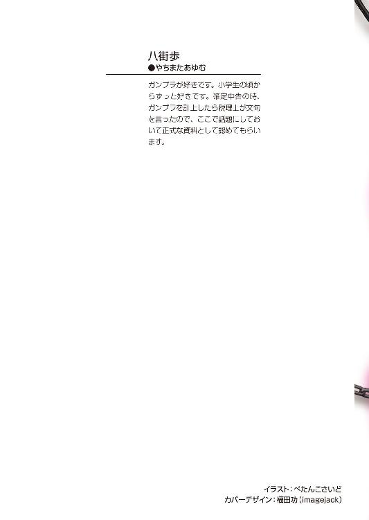

| キミが誘う境界線2 120パーセントの未完成 (富士見ファンタジア文庫) | |
| 八街 歩 & ぺたんこさいど | |
| 富士見書房 (2011) | |


キミが誘う境界線２
120パーセントの未完成
八街 歩

富士見ファンタジア文庫
本作品の全部または一部を無断で複製、転載、配信、送信したり、ホームページ上に転載することを禁止します。また、本作品の内容を無断で改変、改ざん等を行うことも禁止します。
本作品購入時にご承諾いただいた規約により、有償・無償にかかわらず本作品を第三者に譲渡することはできません。
本作品を示すサムネイルなどのイメージ画像は、再ダウンロード時に予告なく変更される場合があります。
本作品は縦書きでレイアウトされています。
また、ご覧になるリーディングシステムにより、表示の差が認められることがあります。
口絵・本文イラスト ぺたんこさいど
序章 新たな刺客
セメタリーは秘密結社である。
世界には、存在することを赦されない存在というものがある。例えば、存在するだけで周辺環境に甚大な被害をもたらす凶悪な生命体。例えば、宇宙人や超能力者といった超常的存在。例えば、世界の軍事バランスを壊しかねないほどの大虐殺兵器。
そういった危険な存在を世間に知られることなく秘密裏に探索、発見し、回収、処分を行うための組織がセメタリーである。
その任務の特性上、セメタリーという組織の存在が世間一般の眼にさらされることはない。だが、セメタリーは水面下で世界のあらゆる国と地域にその根を伸ばし、日々確実に己の任務を遂行しているのである。
そしてセメタリーの最高意思決定機関は、統合本部と呼ばれている。どの国家にも所属しないというセメタリーの特性上、統合本部はとある公海上に設置されていた。
その本部の一室で、数人の人物が会話をしていた。それは、懸案となっていた事柄について、早急に手を打たねばならないが故の会議でもあった。
「では次の議題は懸案第一四号について......鍛冶山鉄舟の遺作についてだ」
「また、厄介なものが出てきたものだな」
「しかもこのタイミングでか」
歳老いた声、若い声、女性の声......人種も国籍もバラバラの人間が、その部屋にはそろっていた。
「あの老人が、まさかあの刀を完成させていたとはな」
「その可能性は前々から指摘されていた。だが、確定的証拠がないという理由で黙殺されてきただけだ」
「実際、あの老人はセメタリーを抜けた時点でかなりの老齢だったし、その段階で致命的な病魔に冒されていたとも報告されている。いつ死んでもおかしくない身だったはずだ」
「経緯はどうでもいい」
歳老いた男の声が、淡々と告げる。
「我々にとって重要なのは──その刀は、我々の求めた刀なのかということだ」
「......鍛冶山鉄舟が、研究部より持ち出した資料を元にあの刀を完成させた可能性は高いでしょう。ですが、断言できるほどではない」
「現物を調べないことにはわからんな」
「だが、日本支部が受け渡しを拒否してきた」
「どういうことだ。あんな弱小支部ごときにどれほどの権限がある」
「今の日本支部長は、鞠小路の小娘だぞ」
「またあいつか......どこまでも我々に刃向かう気か」
「しかも、報告によれば日本支部のあの男が復活したようだ」
「どの男のことだ？」
「霊皇だ」
その名に、部屋の中に緊張が走る。なぜならば、その名はある意味、禁句だったからだ。
「バカな。あの男は、すでに力を失ったのではなかったのか？」
「力を取り戻した──あるいは、最初から力を失ったように見せかける小芝居だった、ということですな」
「バカにしてくれる」
「ですが鞠小路ならやりかねん」
「鞠小路と霊皇......この二つが絡んでいるとなると、日本支部にはおいそれと手出しできんな」
「そうだな......確かに霊皇の力は我々にとって脅威だ。だが、決して対処できない力でもない。今の我々には、あの力がある」
「確かに」
「では、どうしましょう？」
「問題はただ一つ......鍛冶山鉄舟の遺作と呼ばれる刀が本物かどうかということだ。その答えによって、我々の決定も変わる」
「まずは調査するということですね」
「是非もない」
「ではそのように手を打ちましょう」
その日のうちに、統合本部からある人物が日本に向けて飛び立った。それは、新たな事件の幕開けでもあった。
第一章 墓守の女
因済市は人口数十万人ほどの地方都市である。海と山にはさまれ、穏やかな気候が特徴の土地である。今の季節は秋。夏の暑さも一段落し、温度も湿度も快適で、一年の間で過ごしやすい時期といえるだろう。
そんな因済市の一角、都市の中心部からはやや南に離れた場所にある天心町。その街のさらに外れに古びた家屋があった。築三十年を超えた木造平屋で、端的に言えばボロ家である。そのボロ家こそ、ジンの住む家であった。
ジンはセメタリーの構成員である。
秘密結社の構成員というと聞こえはいいが、実際はロクなものではない──少なくともジン本人はそう思っていた。
任務があれば昼夜を問わず呼び出されて、そのまま命がけで仕事をしなくてはならない。実際ジンは何度も死にかけるほど危険な目にあっている。それにもかかわらず、保険の類は一切ない。なにしろセメタリーは秘密結社だ。表だって保険会社に加入することなどできようもない。
その分成功報酬を高く設定しているとジンの上司はすまし顔で答えるのだが、その高いはずの成功報酬が、ジンに限ってはスズメの涙ほどしかない。
理由は単純だ。ジンが、超がつくほどの怠け者で、任務の呼び出しに応じることなど滅多にないからだ。普段サボっているから高いはずの成功報酬も減額されてしまい、真面目に働くのがバカバカしいとさらにサボり、結果負のスパイラルの完成である。
ジンという人間は、自他共に認めるモノグサな怠け者である。誰もがジンのことをロクでもない人間だと思うだろう。だが、ジンだって理由もなく怠けているわけではない。ジンが今のようになってしまったのは、四年前の事件に原因がある。
ともあれ、そんなジンの怠惰な生活に、最近変化が訪れていた。
「ジンさん朝です。起きてください」
「............」
まず、毎朝決まった時間に起こされるようになった。以前のジンは寝たいときに寝たいだけ寝るという獣も同然の生活だったが、今は規則正しい生活を強いられている。
その原因は他でもない、布団を被ったジンを激しく揺さぶる一人の少女だった。
「起きてください、ジンさん。もう朝です。早く起きないと仕事に遅れますよ！」
美しい少女であった。歳は多く見積もっても十五、六くらい。小柄で線が細く、人形のようにも見える少女だった。彼女の名は鍛冶山ヨミ。ジンの、同居人であった。
「起きてください、起きないとご飯食べさせませんよ！」
ヨミが少女らしい声を精一杯張り上げてジンに呼びかける。もともとあまり活発な気質ではないのに、今は両手で布団を摑んでジンを激しく揺さぶっていた。これくらいのことをしないとジンが目を覚まさないということを、ヨミはよくわかっていた。
「ん......」
布団の中から、ジンがわずかに声を漏らす。
「......眠い」
「昨日の夜からたっぷり十時間は寝てるじゃないですか！」
「実は......一回寝た後、夜中に起きていたんだ」
「夜になにしてたんですか？」
「あぁ......夜中に六時間くらい起きて仕事をしていた......そんな夢を見たんだ」
「寝てたんじゃないですか！」
「寝ていたけど夢の中で働いたんだ。今日は働かなくていいだろう」
「どう考えてもその理屈はおかしいです！ 起きてください！」
「......ＺＺＺ」
「寝ないでください！」
「......乙乙乙」
「いえ、意味わかりません！」
「まったくうるさいやつだ......お前は俺のかーちゃんかってんだ」
寝ぼけた声で呟くジン。ヨミは、布団の傍らで仁王立ちとなってはっきり言った。
「わたしには、ジンさんを真人間にするという使命があるんです！ そのためには規則正しい生活をしてもらわなくてはなりません！」
そう......ヨミはどういうわけか、ジンを更生させようと躍起になっているのだった。ジンにとってはありがた迷惑でしかない。ジンは意地でも布団からでるものかと決心した。
「とにかく、俺はまだ寝る」
「ダメです、起きてください！ 朝ご飯はジンさんの好きなタマネギの味噌汁にしましたよ！ タマネギが甘くてシャクシャクしていて美味しいですよ！」
「............」
「目玉焼きも、ジンさんの好きな半熟に焼いておきましたよ！ 黄身の中がとろりとして、お醬油でもおソースでも美味しいですよ！」
本来ジンには、食欲という生存本能が欠けている。以前は、ただ単に面倒という理由で数日間の絶食が日常茶飯事だった。水と塩だけで一月以上しのいだことさえある。
にもかかわらず、今のジンは、空腹に負けて起きようかなと考えてしまっている。ヨミのお陰で毎日三食の生活をしていると、定期的に空腹を感じるようになってきたのだ。
「いや、ダメだ！ この俺が、自他共に認めるロクデナシのゴクツブシであるこの俺が、そんな味噌汁と卵如きで惰眠を中断するわけにはいかん！」
「なに変なプライド持ってるんですか」
「とにかく俺には起きる気はない」
「ダメです、起きてください！」
とは言え、さすがにこれだけ騒いでいたらジンもだんだん眠気が消えてきた。それでも起きないのは、ただの意地だ。
しかたない、この手段はあまりやりたくなかったが......ジンは奥の手を使うことにした。
「ならヨミ......俺をどうしても起こしたければ、おはようのチューをしろ。そうすれば起きてやる」
「え？......えぇぇぇぇぇぇぇぇぇ!!」
思わず絶叫するヨミ。
「ななななな、なんでそんな！」
シメシメ、布団の中でジンはほくそ笑んだ。このヨミという少女はクソがつくほどマジメな性格である。そして、貞操観念もかなり強い。こう言われてホイホイ実行に移せるような性格ではないのである。
きっと今頃ヨミは顔を真っ赤にしてどうすればいいのかわからなくなってフリーズしているところだろう。あとはこのままジンがごねていればさすがのヨミもそのうち諦めるはず──ジンの立てた計画は完璧だった。
だが......その計画にも綻びがあった。ヨミが、こう言ったからだ。
「....................................わかりました」
それは苦悩の末にやっと絞り出すような声だった。
「そ、それでジンさんが起きて真面目に働いてくれるなら、わたしも覚悟を決めます」
......ヨミはクソがつくほどマジメな性格である。ジンのその見立ては正しい。だが、ヨミの思考はジンの予想を上回っていた。
「......いえ、わかっています。男女がみだりにそう言うことをするのはふしだらであるとは思いますが、でもそれでジンさんがマジメになるというならばわたしは構いません......その、婚前交渉ですね」
いや、ヨミは明らかに婚前交渉の意味を取り違えている。
「その......わ、わたし、初めてですので......その、経験不足で至らないかもしれませんが......がんばります」
なにをがんばる気だ！ ジンは内心突っ込んだが、ヨミは止めるまもなく行動に出たようだった。
ジンのいる布団の中に、ヨミの小さな手が差し入れられた。ヨミの、細い指がジンの体をまさぐってくる、くすぐったい。ヨミの体が近づいてくる気配を感じる。ヨミからはかすかに甘い香りが漂ってきた。ヨミの、わずかに乱れた呼気が、妙に大きく聞こえる。続いて、ジンの顔を探しあてたヨミの気配がさらに近づいてくる......もう、さすがにその辺りが限界だった。
「だぁぁぁぁぁぁぁ、起きりゃぁいいんだろう、起きれば、クソッ！」
布団をはねとばして勢いよく立ち上がるジン──言うまでもないことだが、眠気なんてとっくの昔に吹き飛んでいた。
「......いいんですか？」
顔を赤くしてなぜか息も荒くなっているヨミが、トロンとした目で起きたジンを見上げていた。そうした姿は、どことなく艶っぽささえ感じられる。
だが、そんなものジンにはまったくもってどうでもいいことだった。
「言っておくけどな、俺はお前みたいなガキにキスされて喜ぶような変態的嗜好は持ち合わせていないんだ」
「......それはわたしが子供なのは認めますが、それを要求したのはジンさんでしょう」
ヨミはどことなく不服そうだ。ジンは、いちいち説明するのも面倒なので適当にごまかすことにした。
「うるせぇ。とにかくヨミ、お前に無理強いしてイヤなことをさせるつもりなんて俺にはないんだよ。俺は冗談を冗談だって受け取れない奴は嫌いだ」
「......別にイヤじゃないです......」
「え？」
「いえ、もういいです。起きたなら顔を洗ってください。ご飯が冷めちゃいます」
プイッと、妙につっけんどんに言うヨミ。からかいすぎて機嫌を損ねたか、ジンは肩をすくめつつ、言われたとおり洗面所に行く。
少し前までは蛇口と洗面台しかない殺風景な洗面所だったのに、今は違う。正面には曇り一つない鏡が飾られているし、傍らには棚がしつらえられて二つのカップと二本の歯ブラシ、チューブの歯磨き粉がきちんと並べられている。壁に掛けられたタオルは真っ白で清潔そのものだ......全部、ヨミが用意して毎日手入れをしてくれている。
水を顔に叩きつけるようにして洗った後、ジンは自分の歯ブラシを取って乱暴に口の中に突っ込んだ......こんなものやってもやらなくても変わらないとジンは思っているが、以前やったふりをして適当にごまかしていたら、そのことがヨミにばれて散々小言を言われた。別にヨミが怖いわけではないが、ヨミの小言はくどくど長くてうんざりする。しかたなく、それからはジンもこうして顔を洗い歯を磨くようにしていた。
正面の鏡の中に映る自分の顔を、ジンは何となく見つめた......ボサボサの髪に、やる気の感じられない濁った色の目。まだ十代のはずなのに、どんよりと覇気の感じられないその顔は、十以上老けて見えるほどだった。見ても面白くない顔だと自分でも思ったので、さっさと洗顔を切り上げることにした。
顔を洗ったら朝食である。そして朝食になっても、ヨミはどことなく不機嫌なままだった。いつもならヨミの方からジンに色々話しかけてくるのに、今日はお互い押し黙ったままである......まぁ、飯くらいは静かに食いたいと内心思ったジンは、あえてヨミに話しかけたりはせず、黙って食事を続けた。
会話こそなかったが、ヨミは食事中もキッチリ世話を焼いてくれた。なにも言わなくてもジンの茶碗にご飯のおかわりをよそってくれたし、食後のお茶も普通に出してくれた。ヨミは基本的には世話好きな性格なのだ。
「......ジンさん、そろそろ出かける時間じゃないですか？」
お茶を飲んでいると、ようやくヨミが口を開いた。確かに、時計を見ればそんな時間だ。
ジンはセメタリーの構成員である。封印指定の任務がない平常時であってもやるべき仕事はいくらでもある。ジンも本来ならば毎日日本支部に顔を出さねばならない身分だった。
それを今まではひたすら無視してサボっていたのだが、ヨミが来てからは家にいられなくなった。家でゴロゴロしているとヨミが小言を言うので昼寝もできないのだ。
しかたなくジンはセメタリーに行くふりをして、近所の公園で昼寝をして夕方まで時間を潰していたのだが、つい先日その工作がヨミにばれた。
そのときは、酷かった。大泣きされた。ガチ泣きで、ジンがなにを言おうとヨミは決して泣きやまなかった。
泣く子には勝てないというのはいつの時代も変わらない法則だ。最終的にジンがヨミにひたすら謝って、今度から心を入れ替えて働くと約束をして、ようやくヨミも泣きやんだのである。
それが昨日のこと──つまりジンも今日こそは、マジメにセメタリーに行かねばならないのだ。
「ジンさん、上着です」
「たいして寒くもないのにいらん」
「ハンカチとチリ紙です」
「ガキじゃないんだからいらないっての」
「持っていない方が子供だと思いますよ」
言われるまま、差し出されたハンカチとチリ紙をポケットに乱暴に突っ込んだ。
「今日のお弁当です」
と、弁当の入ったつつみまで差し出される──ジンは無言でそれも受け取った。
「他に忘れ物はありませんか？」
「ないな。俺はなにもかも全部支部に置きっぱなしにしてあるからな」
「ジンさんはもう少しマジメに仕事をしても罰が当たらないと思います」
「ところが、マジメに仕事をしていなくても罰が当たらないと来たもんだ」
「そう言う意味ではありません」
ヨミが腰に手を当ててきた。
「ジンさんは、やればできる人なんですから、もっとがんばるべきだと思います！」
力強く断言するヨミ──だが、ジンは適当にヨミの言葉を受け流した。
「あぁ、はいはい、こう見えたって俺は毎日精一杯生きているよ」
「精一杯生きている人は毎朝ダラダラ寝坊しようとはしません」
「俺は毎日精一杯寝ようとしているんだ」
「起きて働いてください」
「わかってるって......仕事に行けばいいんだろ、行けば」
肩をすくめてため息を吐くジン。
ヨミも毎日飽きないものだと、ジンは内心感心していた。一月ほど共同生活を送っているが、ヨミは毎日毎日あの手この手を使ってジンを真面目に働かせようとしている。
ヨミの努力が実を結んでいるとは言い難い現実ではあるが、ヨミの我慢強さはジンでも舌を巻くほどだった。まともな神経の持ち主だったら、ジンの不真面目さに匙を投げてとっくに逃げ出しているだろう。そういった意味で、ヨミは希有な人物だった。
「まったく、お前は本当、ままならないよなぁ」
「突然なんですか？」
「いや......お前みたいに、俺の思い通りにならないやつは珍しいってことだ」
「それは......その、もう少しジンさんの言うことを聞けと言うことでしょうか？」
「ん？」
「その......今でもジンさんの要望にはできるだけこたえているつもりなのですが......まだ足りないでしょうか？ この前見た週刊誌に書いてあったとおり、やっぱり今の時代は女性の方ももっと積極性が求められるということなのでしょうか？」
ヨミがブツブツ言っている。なにか、激しく勘違いしている気もする......まぁいいか、とジンは持ち前の適当さで放っておくことにした。
「じゃ、行ってくるぞ」
「はい......あの、ジンさん」
出かけようとするジンの袖を、なぜかヨミが摑んだ。どういうわけか、ヨミが顔を赤くして、モジモジしている。
「まだなにかあるのか？」
ヨミは無言のまま、赤面してうつむいている......が、やがて覚悟を決めたように頷き、まぶたを閉じると、ンッと、顔をジンの方に向けた。心持ち、唇を突き出している。
......ヨミがなにをしたいのか、ジンには本気でわからなかった。
ヨミはそのままの体勢で、動かない。ジンの袖は摑まれたままだ。袖を振り払って出かけることはできるが、さすがにそれは違うだろうということくらいはジンにもわかった。
ジンは、なにかを期待しているヨミの顔をマジマジと見つめた後、静かに──ピシッ、とデコピンをしてやった。
「あぅ」
痛かったらしい。両手で自分の額を押さえるヨミ。涙目になって、ジンを見上げる。
「な、なにするんですか！」
「いや......てっきりデコピンをして欲しいのかと思って」
「どこの世界にお見送りをするとき男の人にデコピンをしてもらって喜ぶ女の子がいるんですか！」
「いたって不思議じゃない」
「少なくともわたしはそんな性格じゃありません！」
ヨミが、どういうわけか本気で怒っていた。ジンには、ヨミがなぜそこまで怒るのか皆目わからなかった。
「悪かったよ......じゃぁ、なにをすればいいんだよ？」
「え？ その、それは......」
「なにをすればよかったんだ？ 教えてくれよ」
「その......」
「俺は知っての通り常識がない男だからな。物わかりの悪い俺にもわかりやすいように説明してくれ」
「............」
ギュッと、ヨミが無言でジンのモモをつねってきた。
「いたいっ！」
「......ジンさんは、すごくイジワルです。わたしもう知りません！」
プイッ、またそっぽを向くヨミ。完全にへそを曲げてしまったようだ。
ジンはなにか失敗したかなぁと思いつつ、このままここで立ちつくすこともないなと思って、出かけることにした。
「じゃ、俺は出かけるからな」
「............」
「あまり外を出歩くなよ」
「............」
いつもはこちらが閉口するほど口うるさいヨミだが、とうとう最後まで口を開こうとしなかった......ジンはもう一度肩をすくめて、まぁいいかと適当に頷きながら歩き出した。半日たてばヨミもすぐ忘れるだろう......気楽にそう考えていた。
ジンを見送った後......ヨミは、家の中で一人になって、無性に寂しさを感じた。
「ジンさん......」
先ほどの、ジンとのやりとり......思い返すと、顔が真っ赤になるくらい恥ずかしい。だけど、ジンが相手だったら......
「な、なにを考えているの、わたしは......」
首を振って、今思い浮かべたことを打ち消すヨミ。
ともかく、ジンは出かけていった。きっと今日こそは、真面目に働いてくれることだろう。ヨミは、そう思った。ジンのことを信じているのである。普段なにかとサボってしまうジンだが、その実彼がすごい人間であることを、ヨミは誰よりもよく知っていた。
「......掃除をすませましょうか」
ヨミが家事に取りかかろうかと思ったその時......バンバン。
玄関の扉が叩かれた。この家には、チャイムなどと言う便利なものはない。誰か来たら、扉を叩くしかないのである。
「はいはい」
返事をしながら玄関へ向かうヨミ......内心首をひねっていた。ジンは、いちいち扉を叩いたりはしない。こんな朝から誰だろう。
ヨミがこの家に来てから、郵便や宅配便といった類のものが来たことは一度もない。それどころか、ジンがあまりに出不精だったせいで、近隣住民は最近までこの家のことを空き家だと思っていたらしい。この家に来客などまずあり得ないのだ。
微妙に不可解に思いながらも、ヨミは玄関の戸を開けた。
「はいはい、どなたです......えっ？」
セメタリー日本支部へとジンは歩いていた......ちなみにジンの家から支部まで、徒歩だと一時間以上かかる。電車か車を利用するのが普通なのだろうが、ジンは交通費を払ってまで支部へ行くのはバカバカしいと考えている人間だった。セメタリーは交通費を支給してくれないのだ。というか、ジンが以前申請したら上司にふざけるなと一蹴された。
普段ジンが支部に顔を出すのは同僚が呼びに来たときくらいである。そういうときは同僚の車に便乗するのでいいのだが、歩いて支部に行くというのは普通に考えて面倒だ。というか、徒歩だとどんなに急いでも遅刻になってしまう。ジンは考えれば考えるほど、支部なんか行ってもムダじゃないか、という結論にしか行き着かなかった。
「このまま、また公園辺りで昼寝でもするか......」
しかし、ヨミにバレたらまた面倒なことになる......
「......ま、そのときはそのときだ」
と、結論づけるジン。本当にどうしようもない人間だった。
しかし裏路地を歩くジンの目つきは、普段の不真面目な態度からは想像もできないほど鋭かった。腰を曲げ、うつむきがちな姿勢であるにもかかわらず、目だけは常に周囲を警戒している。普段のジンを知る者が見れば違和感を覚えずにはいられないだろう。
ジンは確かにサボリ魔の怠け者であり、それは自他共に認めるところだ。しかし最近ジンがサボっている理由は、以前のものとは違うのである。
前回の事件でジンが引き取ることになったヨミには、秘密がある。ヨミは希代の刀鍛冶と言われた鍛冶山鉄舟の娘であり、鉄舟が全ての知識と技術を込めて生み出した最後の刀である遺作を手に、彼女はセメタリーへとやってきた。
鉄舟の存在をセメタリーは危険視しており、それは鉄舟の生み出した刀も同様である。
前回の事件で、セメタリー本部はヨミと遺作の双方を、核兵器を使用してまで破壊しようとした。
幸いその事件はジンの活躍で被害は最小限度におさえられたものの、その後もセメタリー本部は度々ヨミと遺作の引き渡しを要求しているらしい。
今はまだいい。ジンの上司、日本支部長であるリリカが、本部の要求をはねのけている。だがリリカも、未来永劫本部に逆らえるわけではない。遠くないうちに限界は来るだろう。
なりふり構わず核兵器まで使用しようとした本部だ。こうしている間も、工作部隊を派遣して、ヨミを誘拐しようと画策していてもおかしくはない。
だからジンはあの事件の後、常にヨミから離れないようにしているのだ。家にいるとヨミがうるさいので出かけざるを得ないが、家を出た後もジンは常に近所の公園などで待機し、周辺の状況に気を配っているのである。
幸い、ジンの心配は今のところ杞憂に終わっている。だが、昨日まで平気だったからといって、今日も安全だという保証はどこにもない。
「......いつまで、続くのかな」
自然と、ぼやきが漏れてしまった。ヨミを引き取ったときに、こうなるであろうことはジンも予想していた。今さら文句を言ってもしかたない。それにジンにだって覚悟はある。そう、ジンが生きている限りは、ヨミを守り続けるという覚悟が。
また無断欠勤ということでリリカは怒るだろうけど、ジンは構わないと思っている。顔を合わせればまた説教を食らうだろうが、リリカだってヨミの事情は知っている。ジンはリリカと打ち合わせをしているわけではないが、リリカならばきっとわかってくれるだろうと、半ば確信していた。
家の周りをしばらく歩き回ったが、不審な人物は見あたらない。昨日までと比べて、周辺になにか変化があるとも思えない。今のところ、何らかの脅威が迫っている可能性は低いようだ。ジンがとりあえず一安心したその時......
ブロロ、とエンジン音を響かせながら、ジンの正面で車が止まった。
派手なスポーツカーだ。ジンは車に詳しくないので車種まではわからない。だが、少なくともこの辺りでは見かけない種類の車だった。ジンは、内心の警戒度を引き上げた。
その車から、運転手が颯爽と地面に降り立った。
運転手は、女性だった。それも、車と同様、人目を引く外見をしていた。
上半身はノースリーブで、胸元が大きく開いた黒いシャツを着ている。タイトなジーンズとあわせているため、大きく膨らんだ胸やくびれた腰などのメリハリのきいた体のラインが浮き彫りとなっている。
鮮やかな金髪の下の顔立ちは、整っている。ややつり上がった眉に、固く引き結ばれたクチビルが勝ち気そうな印象を与える。さらに大きなサングラスをかけているせいで、相手の目が見えない。が、スッキリした鼻梁やとがった顎のラインを見るに、美人と判断して問題ないだろう。髪や肌の色を見る限り、明らかに日本人ではない。見慣れない外国人ということで、ジンはさらに警戒度を上げた。
ジンは、ジッとその女性の肉体を、なめ回すように見つめる......別に、イヤらしい気持ちで見ているわけではない。細い手足はスラリと長く、引き締まっている。ジンには一目でわかった。筋肉の付き方が、常人とは違う。かといって、アスリートともまた違う。アスリートは、ここまで殺気をまき散らしたりはしない。おそらく、ジンと同様の、裏社会に属する人間だ。
カツカツと、ブーツの音を響かせながら、その女性はジンに近づいてくる。そのまま、ジンの間合いへと無遠慮に侵入してきた。
近くで見ても、やはり美女であることに変わりはなかった。白くキメ細かな肌は、接近してもシミ一つ見つからない。長身だと思ったが、並べばさすがにジンよりは背が低かった。スラリと姿勢がいいため、実際よりも背が高く見えたのだ。
ジンは警戒しつつも、ボーッと立ちつくした。こちらが警戒していることを相手に悟られないように、マヌケな顔で相手を見つめる。小芝居がどれだけ通じるかはわからないが、ここからの相手の出方で力量を測ることができるはずだ。
相手がふっと口元をゆるめた。ジンが、ん、と首をひねった瞬間、風のような速さで、彼女の蹴りが、ジンのコメカミに刺さった。
いや、違った。刺さってはいなかった。彼女の長い足がのばされ、ブーツに包まれたつま先がジンのコメカミにギリギリ触れるかどうかという位置で止まっていた。
速かった。本当に、瞬きをしていたら見逃してしまうほどに、今の蹴りは速かった。ジンはなにも反応できないまま棒立ち状態で、きまりが悪そうに反対のコメカミをかいた。
「よけないんだ」
初めて、女性が口を開いた。
「それとも、よけられなかったのかしら」
その口調は、ジンを嘲るような声だった。ジンは、平然と肩をすくめて見せた。
「なぁに、よける必要がないと判断しただけだよ」
「そう」
次の瞬間、ジンの体がモンドリを打って地面に落下した。目の前の女性は、先ほどとは反対の足を掲げていた。再度彼女が蹴りを放ったのである。今度は、寸止めではなかった。ジンの額に刺さった鋭い蹴りは、一撃で大の男をダウンさせるほどの威力だった。
「よけられなかったようね」
淡々と、呟く女性。サングラス越しに、地面に倒れたジンを見下してくる──ジンは、それどころではない。視界がぐらぐらと揺れて、安定しない。脳震盪でも起こしかけているようだった。目の前の女性が、ただの黒い柱にしか見えない。
「こんなものなの、日本のセメタリーは。とんだザコね、期待はずれもいいところだわ」
ジンは、地面に手をついて、上半身を起こした。だが、視界がまだ安定しない。
「悪い......ちょっと、起きるのに手を貸してくれないか？」
「この状況で、あたしが手助けすると本気で思っているわけ？」
「助けてくれないならいいさ......勝手に起きるから」
ヨッと、ジンの体が動く。それは、今まで無様に地面に倒れていた人間とは思えないほど素早い動きだった。
「え？ ナッ」
女性の腰に、重いものがしがみついていた。なにかと思えば、ジンだった。気づけばジンが、後ろに回り込んで、彼女の細い腰に手を回しているところだったのだ。
彼女はふりほどこうとしたが、ジンが自分の体重を預けてきたのでバランスを崩しかけて、うまく動けない。ジンはそのまま彼女の体を無造作に摑みながら、立ち上がった。
「悪いな、手伝ってくれて」
「ふ、ふざけないで！」
女性が、はっとジンから離れるように飛び退いた。その頰が、わずかに赤く染まっている。
「ど、どういうことよ！」
「なにが？」
「とぼけないで！ あんた、今ドサクサに紛れて胸触ったでしょ」
「......いや、知らんな」
「このヘンタイ！ なんてことするのよ！」
ジンは、なんとなく、手の指を動かした......言われてみれば、立ち上がるときなにか柔らかいものに触った気がする。触れば指が沈み込むような感触を覚えたあれは......
「そう言えば、スモウトリの腹みたいなものに触ったような気がしないでもない」
「スモウトリとあたしが同列!?」
「まぁ、気にするなよ、どうせ減るものじゃないだろ？ どうしても気になるってなら、かわりに俺の胸触っていいぞ。これでおあいこだろ？ これにて一件落ちゃ、ブゲッ！」
返答は、拳だった。固く握りしめた拳が、ジンの鼻柱に叩き込まれた。ジンは再度激しく吹っ飛ばされて地面に倒れた。
今度は、容赦がなかった。倒れたジンめがけて、彼女は容赦なく蹴りを放ってくる。それも、人体の急所を狙って的確に。ジンは、なすすべもなく蹴られるしかなかった。蹴られる度に声が漏れ、呼吸ができなくなる。サッカーボールになった気分だった。手も足も出ないまま、何度も蹴られ続ける。
「ハァ、ハァ......つまらないわね」
散々蹴り回して、さすがに飽きたのか、足が止まった。が、ジンは地面に倒れたまま、起き上がる気にもなれず、寝たまま上を見上げた。
「......なんで、抵抗しないわけ？」
腰に手を当て、ジンを見下してくる彼女。
「反撃する手は、いくらだってあったはずよ？」
「なんだ、反撃して欲しかったのか？」
「えぇ、そうね」
フッと、彼女の口元が歪んだ。
「反撃したら、二度とそんなことをする気が起きないくらい徹底的に潰してあげたのに」
「おぉ、怖い怖い」
寝転がったまま器用に肩をすくめてみせるジン。
「実は俺ってかなりのマゾでな、女に足蹴にされて興奮するヘンタイなんだ。だから今まで反撃しなかったんだ」
「............」
サングラス越しの視線が、冷たくなった気がする。だが、ジンの減らず口は止まらない。
「反撃したらもっと蹴ってくれたって言うなら、少し反撃しておけばよかったな。いやぁ、惜しいことをしたな」
「そう......なら、お望み通りにもっと蹴ってあげるわ」
冷徹な声で呟き、彼女のブーツが振り上げられる。ジンは地面に倒れたまま、それをよけようともしない。そのまま再度ジンが蹴られようとしたとき。
「っ！ 誰？」
彼女が、叫びながら振り返り、片手を振った。背後から、彼女めがけてなにかが飛来してきた。その物体を、彼女は素手で叩き落とす。ガゴッ、金属質な音が響いた。地面に落ちたのは、清涼飲料水の缶だった。
「......まったく、ジン。貴様はいつも、厄介ごとばかり持ち込んでくれるな」
怒りとも、呆れとも、嘆きともつかない複雑な声と表情で、路地に姿を現した男がいた。
「お前は......誰だっけ？」
「ふざけるな！ 貴様、自分の同僚の名前を忘れたのか！」
「もちろん冗談だ、キョウスケ」
「少しは時と場所を考えろ！」
と、キョウスケが怒鳴る。女性はサングラスの奥から静かに、キョウスケをにらみつけている。ジンはそのスキに立ち上がることができたが、あまりハデには動けない。彼女は、ジンへの警戒もゆるめたわけではないのだ。
キョウスケ──本名は七蓋鏡介。ジンの同僚。四年以上の付き合いの、腐れ縁の友人だ。ジンよりやや背の高い、目つきの鋭い男である。ジンは面倒だからとセメタリーの制服を着てここまできたが、キョウスケは私服姿だった。なぜここにキョウスケがいるのか、その理由はジンにもわからなかった。が、今は一応、キョウスケのおかげで助かったようだ。
「で、ジン？ 彼女は誰だ？」
キョウスケが、女性を睨みながら聞いてきた。
「貴様の知り合いか？ 知り合いなら僕が出る幕じゃないが」
「知らない女だ。俺とは、互いにソフトＳＭプレイを楽しむ程度の仲だ」
「どういう仲だよ!?」
ジンの無茶苦茶な紹介に、キョウスケは反射的に突っ込んだ。そんな二人の様子を見て、はさまれた女性が、失笑を漏らした。
「ずいぶんと平和ボケした場所のようね、日本支部は」
「なんだと？」
キョウスケの視線が鋭くなる。女性は、ゆっくりと肩をすくめて見せた。
「......ザコが一匹増えたところで、あたしに勝つことはできないわよ」
「言うじゃないか」
と、キョウスケもプライドが刺激されたらしい。両手を胸の前に構え、ファイティングポーズを取った。
「なら、試してみるか？ 言っておくけど、僕はたとえ相手が女性でも手加減しない主義ブゲラッ!!」
彼女の拳がまともにキョウスケの鼻柱をとらえた。まさに目にもとまらぬ速さである。キョウスケの体が、路上に引っくり返った。
「あら、ごめんなさい......ザコがスキだらけでしゃべっているから、てっきり殴っていいのかと思っちゃったわ」
キョウスケは鼻血を手の甲でぬぐいながら立ち上がった。
「い、今のは軽いハンデだ」
「あら、そう。なら、次は本気でやってくれるのかしら？」
キョウスケは虚勢を張ったものの......まともに相手をするにはキツイな、と相手を分析していた。と、キョウスケはそこで、女性の肩越しに後ろにいるジンと視線があった。
『ジン、僕とタイミングを合わせろ。前後から挟み撃ちにするぞ』
そんな意味を込めて、キョウスケはジンにアイコンタクトを送った。だが、ジンは怪訝な顔をするだけだった。
『おい、ジン！ 何年来の付き合いだ！ こっちの意図くらいくみ取れ』
キョウスケは何度も瞬きをくりかえしてジンに合図を送った......やがて、ようやく伝わったか、ジンがわかったとうなずいた。
少し手強い相手だが、さすがに二人がかりならなんとかなるだろう、とキョウスケは判断していた......が。
「わかったぞ、キョウスケ！ お前の犠牲はムダにしない！ お前が時間を稼いでいるスキに、俺は逃げる！」
と、なぜかジンはそう叫ぶと、背中を向け脱兎のごとく逃げ出した。えっ、とキョウスケの顔が驚きに歪む。
チラリ、彼女はサングラス越しにジンの背中を見た後、キョウスケに視線を戻した。
「たいしたお仲間じゃない。見捨てて逃げるなんてね」
「ふ、ふふふ、なに......貴様の相手なんて僕一人で十分だということさ」
女性の嘲笑に虚勢を張るが、実際はキョウスケも内心焦っていた。先ほど彼女のパンチをもろに食らったが、そのダメージが凄まじい。とても細身の女性の力とは思えない、ヘビー級ボクサー並みの打撃だった。今も視界がグラグラしていて、キョウスケは立っているのがやっとの状態なのだ。
──クッ、この女、強い。さすがに少し厳しいか──
キョウスケが、どうしようかと思い悩んだ瞬間。
ブロロロロロ、ガッ、ギャギャギャギャギャ
突然、けたたましい機械音が響き渡った。
「えっ、ちょっ！」
細い路地に、黒いスポーツカーがフルスピードで突っ込んできたのだ。それは、女性が最初に乗ってきた車だ。運転席に座っているのは、ジンだった。
「ふ、ふざけなさんな、人の車をっ！」
顔を赤くして叫ぶが、車は一直線に彼女に突っ込んでくる。そのまま衝突するかに見えた瞬間、バッ、と彼女は跳躍し、車のボディを飛び越えてその後ろに着地した。
「ジ、ジンか!?」
「乗れ、キョウスケ！」
と、窓からジンが叫ぶ。キョウスケは、まだふらつきながらも突っ込んでくる車に向かって助走をつけ、飛びついた。そのまま助手席のドアを開き、中に滑り込む。
「バカ、貴様！ 僕をひき殺す気か！」
「うるさい、しっかり摑まっていろ！」
ジンはそのままアクセルを踏み込み、急加速とともにその場から離脱した。
「こらぁぁ、あたしの車をっ!!」
なにか、背後で叫んでいる女がいたが、その姿はあっという間に見えなくなった。
「まぁでも......貴様にしては機転がきいてるじゃないか、助かった」
「それはこっちのセリフだ」
車の中、ジンとキョウスケは言葉を交わす。
「キョウスケ。お前、なんだってこんなところに来たんだ？」
「あぁ......昨日、ヨミちゃんから連絡があったんだ」
「なんだと？」
初耳だった。
「貴様が無断欠勤したのは自分の責任だって、あの子、こっちのほうが恐縮するくらい何度も謝ってきてな......まぁ、貴様がサボるのはもはや僕にとっては当たり前みたいなことだったから全然気にしていなかったけど、あぁまで謝られると今までなにも手を打たなかった自分が恥ずかしくなってな。心機一転、貴様の首に縄をつけてでも今日は支部に連れて行くつもりで、貴様の家に行くつもりだったんだ」
「ヨミの奴......」
セメタリーから支給された通信機を、ジンは使う気がないので電源を切って家に放り投げてある。たぶんヨミはそれを見つけて、いつのまにか使い方を覚えてキョウスケと連絡を取ったのだろう。
「それに、今日は部長も、貴様を連れてこいって言ってたしな」
「リカの奴までか」
ジンは、運転しながら首をひねった。どうも、自分の知らないところでなにかが動いているようだ。
「それより、さっきの女は何者だ？ えらく強かったぞ」
「正体不明だ......けど、ツメの甘い女だ。車にキーを置きっぱなしだった」
「そのおかげで僕も助かったわけだな......と」
ピピピピ、電子音が車内に響く。キョウスケが、胸から通信機をとりだした。
「はい──えぇ、はい、はい......わかりました。ジンも一緒です、了解しました」
と、通信相手と手短に会話を終え、キョウスケはジンに指図した。
「ジン、このまま支部へ行け。部長が、今すぐこいとさ」
「すぐはムリだ。いったん、ヨミのところに戻る」
なにが起こっているかはわからないが、ヨミを自宅に残しておくのはやはり危険だ。
しかしキョウスケは、落ち着け、とジンを制止した。
「部長が、ヨミちゃんはセメタリーでもう保護したとさ」
「......やけに、手際がいいな」
「ヨミちゃんは安全に日本支部へ連れて行くから、僕らも支部に戻れとさ」
「わかった」
どうやら、支部に行ってリリカから話を聞かなくてはいけないようだ──こうなったら、一刻も早く支部へ行って、リリカを問い詰めねばならない。
「しかし、貴様が車を運転できるとは知らなかったぞ」
キョウスケが、助手席でのんきに呟く。
「いつも僕に運転を押しつけるから、てっきりできないのかと思った」
「バカにするな、キョウスケ。車なんて、アクセルを踏めば勝手に動くもんだ」
「......待て、貴様免許がないのか!?」
「車のアクセルはな、免許で踏むんじゃない。自分の足で踏むもんだ！」
車はさらに加速した。いつの間にか大通りに入り、ジンの運転する車は次々と周囲の車を追い抜きながら、赤信号の交差点を突っ切っていく。
「ふ、ふざけるな！ 町中でどれだけスピード出す気だ、貴様！ 少し減速しろ！ いや、せめて信号くらい守れ！」
「信号なら守っているさ」
ジンは、すまし顔で答える。
「信号ってやつは、青は進め、黄色は注意して進め、赤は死ぬ気で進めってサインだろ」
「僕が運転するから、今すぐ車を止めろぉぉぉぉ！」
キョウスケの絶叫が、車内に響き渡った。
「あのザコども......やってくれたわね」
路地に残された彼女──ジンたちを襲った黒ずくめの彼女は、低い声で呟いた。
「でも......あの男、バカっぽい割に、状況判断が素早いってことがわかったのは収穫ね」
いや、バカっぽく見せたのは、あの男の演技か──ともあれ、あの男に少しだけ興味が湧いてきたのは確かだった。
彼女は胸元から通信機を取り出すと、耳に押し当て、小声で報告をした。
「──こちらオレンジ。目標との一時接触に成功......目標はこちらの車を奪って逃走した」
『そのようだな、コードネームオレンジ。とんだ失態だな』
「いいえ、計算通りよ......まだ一時接触の段階だわ。あの連中が、あたしが迂闊だと思いこんでくれれば、今後の計画がやりやすくなるはずよ」
『そういうことか......まぁいい。貴様は引き続き、任務に当たれ』
「了解」
短く報告を終え、彼女は息を吐いた。
本来なら、彼女は不自然でない程度に接触する計画だった。しかし、実際にあの男を見たとき、彼女は、相手の実力がどの程度か、調べてみたいという衝動を抑えきれなかった。
だが、今くらいは許容範囲だ。この後どうとでも、事情はごまかせる。あの連中にこの後文句を言われるかもしれないが、それもかまわない。自分は、連中の言いなりになる人形ではないのだ......
彼女は、結局使わなかった包みを手に持った。細長い棒状の包み、長さは、人間の腕よりもやや長いくらいだ。手に持つと、重い手応えが返ってくる。
今は、これを使う場面ではなかった。これを抜けば、命の取り合いになってしまう──だから、今はあえて使わないように、近くに置いておいた。
「けど、二度目は負けないわよ」
力強く包みを握りしめると、チャキッ、と金属音が響いた。
ジンとキョウスケは、結局途中でキョウスケが運転を代わり、無事セメタリー日本支部に到着した。警察に見つからなかったのは運がよかった。セメタリーは基本的に日本の警察を無視して行動できるが、警察の末端ではセメタリーの存在は知らされていない。万が一発見されていれば、色々とめんどうなことになるところだった。
地方都市のオフィス街──その一角に、セメタリー日本支部のビルはそびえていた。
周囲を他の企業に囲まれる中、ダミー企業の看板をかかげて建つ日本支部は、やや地味で目立たない。外見的には、なんの特徴もないごく普通のビルである。
だが、支部のある地区一帯、周辺にある他の企業は全て、セメタリーとなんらかのつながりがある企業のみで占められている。ここは日本国内でありながら、実質的にセメタリーの領土とも言うべき場所だった。無論一般人には知られていないが、この一角にはセメタリーと無関係な人間は簡単には入れない。入り込んだとしても、警備会社の手によって常時監視される。そんな場所だ。
そんな日本支部の傍らに車を止め、ジンとキョウスケは降り立った。キョウスケが、自分の乗ってきた車を見る。
「で、この車どうするんだ？ さっきの、あの女のなんだろう？」
「ふむ......この車でなにか事故でも起こしてやれば、あの女が困るんじゃないか？」
「どうだかな......もしあの女がどこかの工作員なら、この車から足取りは摑めないだろ」
「それもそうか」
とりあえずここに乗り捨てることにした。支部の真横なら警察に駐車禁止の切符を切られることもない。リリカに会ったときについでに報告すればいいだろうと、ジンは気軽に考えた。
セメタリーの入り口では、ＩＤカードによる本人認証をしないと中に入れない。だが、ジンはカードを持っていなかった。
キョウスケもすでに慣れたもので、ブツブツ文句を言いながら来客用の入館許可証を発行してもらい、ジンはそれをもらった。
「いつも悪いな」
「悪いと思うならＩＤカードを持ち歩け！」
軽く言い争いをしながら、二人はエレベーターに乗り込んだ。キョウスケだけ途中で制服に着替え、二人はその後連れだって最上階へ行った。
最上階のフロア、その中央に、支部長室と書かれた部屋があった。
ノックをすると幼い声が「入れ」と返事をしてきたので、二人は中に入る。
中は、とても広かった。正直言って、ジンの家の倍近い広さがある部屋だ。ジンは何となく理不尽を感じて、部屋の中央のデスクに座る人物を睨んだ。
「......なんだ、ゴクツブシ。いきなりあたしを睨んだりして」
不機嫌そうに、デスクの前のアームチェアに座る人物が顔をしかめた。小さな人影だ。小さすぎて、大型のイスの中に体が埋もれてしまいそうである。
彼女の名は鞠小路凜々華──セメタリー日本支部長であり、ジン達の直属の上司である女性だ。長い銀髪に透き通るような白い肌。全体的に色素が薄く、しかも子供じみた外見であるため、妖精かと見まごうばかりに可憐である。しかし、実際の年齢はこれでも三十代である。
「二人とも、来たようだな」
「はい、お呼びでしょうか、部長」
「来てやったぞ」
直立不動の体勢になるキョウスケ。適当に返事をするジン。キョウスケが慌ててジンの脇腹を肘打ちしてきたので、ジンも肘打ちを打ち返した。キョウスケがさらに強く肘打ちをしてくるので、ジンもさらに強くして......男二人が肘打ちの応酬を繰り返す姿を見て、リリカはわざとらしくため息を吐いた。
「あいかわらずみたいだな、お前達は」
そこでリリカは苦々しくジンを睨んだ。
「ゴクツブシ、オメオメとよく顔を出せたものだな。貴様、自分が何回無断欠勤しているか、自覚しているのか？」
「そんなもの数えたってキリがないからな」
「いばるな！」
普段通り飄々とした態度を変えないジンを、リリカが怒鳴りつける。ジンは、そんなことよりも、とリリカの机に近づいた。
「それよりもだ、ヨミはどうした？ リカちゃんが連れて行ったって聞いたぞ」
「リカちゃん呼ぶなっ！」
と、リリカが顔を赤くして言う。彼女は、子供っぽいリカちゃんという呼ばれかたが好きではないのだ。
「まぁ、安心しろ。彼女は信頼できる部下達に保護させた。この支部内の安全な場所にいるから、危険はない」
「ならいいんだけどな」
それだけ確認できれば、とりあえず問題はない。ジンは、少しだけ安堵した。
「......まさか、お前があの子のことをそんなに心配するとは意外だった」
「............」
リリカが、机の上で腕を組んでジンを見上げた。
「自分の命にさえ興味がないようなゴクツブシが、そんなに他人の心配をするとはな」
「チッ......それよりリカちゃん、事情を説明しろよ」
「リカちゃん呼ぶなっての」
リリカは部屋の中にいるジンとキョウスケ、二人の部下を見回した。
「七蓋から報告は受けた──どうやら、貴様等はすでに接触したようだな」
「あぁ、あの女、どこの誰だ？」
どうやら、リリカも先ほどの事件をすでに知っているらしい。ジンは、説明を求めた。だが、リリカは慌てるな、といった様子で手を振り、時計を見て時間の確認をした。
「そろそろ、時間だな」
「どういう......」
コツコツ──リリカの部屋の扉がノックされた。ジンとキョウスケは、怪訝な顔で扉を振り返る。リリカが、頷きながらノックに答えた。
「入れ」
「失礼します」
扉を開け、入ってきた人物は、ジンが予想していたとおりの人間だった──そう、先ほど、路上でジンを襲った、あの黒ずくめの女性である。
だが、今は先ほどと違った。サングラスをかけているのは同じだが、服装が違う。ジン達と同じ、セメタリーの制服を着ていた。
「貴様っ！」
キョウスケが、反射的に身構えている。だが、入ってきた彼女は涼しげな顔だ。
「あら......さっきは、失礼したわね」
平然と、キョウスケに対して会釈する女性。キョウスケは、出鼻をくじかれたような微妙な表情で会釈を返した。
「あぁ......」
「さっきはあたしが魅力的すぎたせいで鼻血を出していたけど、鼻血はもう止まった？」
「おかげさまで......ずいぶん魅力的なパンチだったな」
「喜んでもらえたようね」
キョウスケは苦虫を嚙みつぶしたような顔で、にこやかな彼女と応対をしている。この女、いい度胸しているな、とジンは内心感心した。
「誰かと思えば、車を乗り逃げされたオマヌケな女か」
と、そこでジンが口を挟む。すると、さすがに少しムッとしたようにジンの方へと向き直ってきた。
「えぇ、そうね......あの車は、どうしたの？」
「安心しろ、玄関の脇に捨てておいた」
「あら、そう。ちゃんと、丁寧に運転してくれた？」
「俺、運転が下手でね、ボディ側面を二、三回コスッた。悪かったな」
「あらそう。ちなみにあの車、日本支部の備品だから、後で所定の場所に返しておいてね」
「え!?」
ジンが背後のリリカを振り返ると、リリカは不機嫌そうに頷いた。
「修理費は貴様の給料から引くからな」
「違う、あの車を運転したのはキョウスケだぞ！」
「おい、ふざけるな！ スッたのは前半運転した貴様だろう！」
ジンとキョウスケで醜い責任のなすりつけあいをしているのを見て、リリカはもう一度ため息を吐いた後、バン、と机の天板を叩いて注目を集めた。
「......話を進めていいか？」
「はい、すいません」
「あぁ」
ジンとキョウスケも、渋々言い争いを止めてリリカに向き直る。
「どうやら、すでに顔合わせは終わっているようだな」
「まぁな」
「えぇ、先ほど、道ばたでたまたま会いまして、軽くアイサツさせてもらいました」
と、女性が淀みなく言う。キョウスケがますます苦々しい顔になった。リリカは、そんな空気をあえて無視して説明を続けた。
「彼女は、補充要員だ」
「本部から出向してきた、迷宮院ミカンです。よろしく」
事務的なアイサツとともに、彼女、ミカンがサングラスを外した。サングラスの下からは、大きな青い眼が姿を現した。第一印象通り、強気そうな顔だとジンは感じた。だが、サングラスを外した素顔はジンが予想していたよりも若い顔だった。たぶん十代、ジンよりも年下かもしれない。
「迷宮院は、本人が言ったとおり、本部から来た。本部ではエースだったそうだ。強いぞ」
と、珍しくリリカが誉め言葉を言うと、ミカンは硬い表情で首を振った。
「いえ、たいしたことはありません」
「なんだたいしたことないみたいだぞ、この女」
ジンが言うと、ミカンがジトリとジンを見た。
「実力のないザコほど、よく吠えるものだわ」
「それは自分のことか？」
「やめんか、バカども」
リリカがダンと机を叩き、二人の言い争いが止まる──前途多難だな、とリリカは首を振りながら、説明を続けた。
「とにかく、迷宮院には補充要員として、貴様等とチームを組んでもらう」
キョウスケが、エッと声を漏らした。
「僕らの......ブラボーチームにですか？」
「そうだ」
リリカははっきりと頷いた。
「『葬儀屋』は三人編制が基本だが、お前達は現在二人だ。足りないメンバーを早々に補充しなければいけなかったんだが、クセのあるお前達になじむ人員がいなくて、今まで滞っていた。七蓋には苦労をかけたな」
「いえ、恐縮です」
表情を硬くするキョウスケ。
「迷宮院は、さっきも言ったとおり優秀な人員だ。お前達は彼女の指揮下にはいることになる」
つまり、空席だったジン達のチームリーダーに、ミカンが入るわけだ。
「待ってください。補充要員は必要ありません。僕らは二人だけでも業務はこなせます」
と、キョウスケが珍しくリリカに異議を唱えてきた。だが、リリカはそんなキョウスケの反論を予想していたのか、静かに首を振った。
「七蓋......貴様の気持ちはわからんでもないが、紗村のことはもう諦めろ」
リリカの言葉に、キョウスケが、顔を強ばらせた。
紗村亜衣──ジン達のチームリーダーだった女性。ジンやキョウスケとは『養成所』時代から同じチームを組んでいた仲間である。だが彼女、アイは前回の事件でセメタリーを裏切り、ジン達の前から姿を消してしまった。
アイの本心は、結局のところ未だにわからない。だが、アイに密かに想いを寄せていたキョウスケがそのことにショックを受けていたのは確実であり、キョウスケは事件後、アイの空席を埋めるべく、仕事に没頭していたのである。そしてキョウスケが内心、いつかアイが戻ってきたときのためにその空席を守っていたということは、リリカほどの人間ならば気づいていて当然だった。
「紗村の本心がどうだったのかは、あたしにもわからん......が、あいつの行動は明確にセメタリーの規則に反していた。たとえあたしでも、もうかばうことはできん。あいつは、二度とセメタリーには戻れんよ」
「......はい」
短く頷くキョウスケ。キョウスケとてバカではない。その事実は、とっくに知っていた。だが、それでもやはり、自分の上役に面と向かって事実を告げられると、それなりにショックを受けてしまうのである。
「ともかく、これは決定事項だ。今さらの変更はできん。第七特科、Ｂチームのチームリーダーとして、迷宮院には動いてもらうことになる」
「そういうわけよ」
と、ミカンが肩をすくめて、ジンとキョウスケ、二人の顔を眺めた。
「朝は、少しふざけただけのことよ。これから同じチームになるんだから、さっさと水に流して欲しいわね」
キョウスケがギリギリと、音が聞こえそうなくらい歯ぎしりをしている。内心穏やかではないようだった。だが、キョウスケはジンより精神的に大人である。そんな内心の不満は全て飲み込み、表情だけは取り繕って、敬礼をした。
「はい......これからよろしくお願いします」
「......とりあえず七蓋。お前が支部内を案内してやれ。細かい指令はお前等のメールボックスに届いているはずだから、後で見ておけ」
「了解しました」
敬礼をするキョウスケ。ジンは、自分を指さした。
「俺はどうすればいい？」
「貴様はここに残っていろ......貴様には言いたいことが色々ある」
腹立たしげに言うリリカ。ジンは、肩をすくめた。
キョウスケはミカンを連れて、支部長室から出て行った。きっと、なぜジンだけが残されるのか内心疑問に思っていただろうが、それをここで尋ねたりはしなかった。生真面目なキョウスケは、上司の命令ならば基本的には無条件に従うのである、内心はどうあれ。
そして部屋の中にはジンとリリカの二人だけが残り、リリカがジンを見た。
「さて......ゴクツブシ。貴様、自分がなぜここに残されたのか、わかるか？」
「あぁ......悪いな、リカちゃん。お前とはつきあえない」
「なにを言っているんだ？ あと、リカちゃん呼ぶな」
「誰もいない教室に呼び出された男女といえば、愛の告白と相場が決まっているだろ？ だからてっきりリカちゃんが俺に告白してくると......」
「ふざけるな!! な、なんで貴様みたいなゴクツブシ相手に愛の告白をしなきゃいけないんだ！」
真っ赤な顔でドモりながら叫ぶリリカ。ジンは、肩をすくめた。
「あぁ、知っての通り俺はロクデナシのゴクツブシ......とても、リカちゃんの愛を受け止めるに足る男じゃないと自分でも思っている」
「その自己分析だけは間違ってないが、前提を根本的に間違っているぞ！」
「だから悪い、リカちゃん。リカちゃんには俺よりふさわしい男が他にいるはずだからがんばってくれ」
「あれ？ なんだ、この状況？ あたし、生まれてこのかた告白なんて一回もしたことないのに、なんでフラれているんだ？ しかもこんなゴクツブシ相手に！」
「その歳で告白したことないってのも問題だろ、リカちゃん」
「うるさい、歳のことを言うな！ あとリカちゃん呼ぶな！」
「大丈夫だ、リカちゃん。人類の半分は男だ。男なんて星の数ほどいる！」
「しかも屈辱的な励ましかたをされた！」
「まぁ、星ってのは手が届かない距離にあるものだけどな」
「大きなお世話だ！」
「仮に手が届いたとしても、星に人が触れたら灰も残らず燃え尽きちゃうけどな」
「うるさい！ あたしが言いたいのはそういう話じゃない！」
机を叩き、話の軌道修正をするリリカ。
「っと......お前に説明する前に、彼女も呼んでおかないとな」
リリカが、机の上の、何かのスイッチを押した。すると、部屋の奥にある扉が開いた。奥の部屋へと続く、入り口とは別の扉である。
「失礼します」
頭を下げながら姿を現したのは──ヨミだった。が、その姿を見て、ジンは少し驚いた。ヨミの姿が、普段と違っていたからだ。
ヨミは普段和服を着ており、ジンもそれは見慣れていた。だが今のヨミは、カジュアルな洋服を着ていた。裾の長いシャツに、デニムスカートといった装いだ。
「ヨミ、なんだ、そのカッコウ？」
「や、やっぱりわたしには似合いませんよね......やっぱり普段の服に......」
「あぁ......イテッ」
いつのまにかジンの傍らに立っていたリリカがジンの脇腹に肘打ちを入れてきた。
「バカか、ゴクツブシ！ こういうときに言う言葉があるだろう！」
「え？ なにを？」
「年頃の女の子が新しい服を着てきたら、誉めるんだよ、それくらいわかれ！」
「......ヨミ、似合っているぞ」
言われたとおり誉めてみるが、ヨミは頰を赤らめてうつむいている。恥ずかしがっているようだ。
「そ、そうでしょうか？ あまりこういった服は着慣れていなくて、自分ではよくわかりません」
リリカがさらにジンの脇腹をガンガン肘で打ってくる。まぁ、リリカの力では大して痛くないので問題はないが......ジンは、大げさにうなずいてみせた。
「あぁ、とにかく似合っているぞ、ヨミ、まさに馬子にも衣装......」
「それは誉め言葉じゃない！」
「......似合っている。かわいいんじゃないか、ヨミ？」
「ジ、ジンさんがそう言うなら、この服も着ていてもいいかもしれません......」
先ほどから、ヨミはスカートの裾を押さえたままだ。別に丈は特別短くはないのだが、初めてのスカートで色々と恥ずかしいのかもしれない。
「で、リカちゃん。なんだって今さらヨミのファッションショーなんか見なきゃいけないんだ？」
「貴様が悪い」
リリカが断言した。ジンとしては意味がわからなかった。
「聞いたところによると、貴様彼女に洋服の一枚も買ったことがないそうじゃないか」
「いえ、わたしは別に、そんな......」
ヨミが口ごもっている......そういえばそうだった。生活必需品はヨミがよく買ってくるが、服とかを買っているのは見たことがない。
「なんだ......欲しいなら一言言えばいいだろう、ヨミ。俺だってケチじゃない。女子供の服の一つや二つ、好きにしろ」
リリカがまた肘打ちしてきた。
「彼女の性格を考えろ......自分から欲しいなんて言うわけないだろう」
......考えてみればそうだ。ヨミはどちらかというと遠慮がちな性格だ。実際、ヨミが個人的に欲しい物を買っているところなど、ジンは見たことがない。ジンはそんなこと気にしてもいなかったが、それは問題だったかもしれない。
「それにな、ゴクツブシ。年頃の女の子だぞ。新しい服が一つや二つで足りるもんか」
「いえ、わたしは本当に、そんなもの必要ないですから」
「遠慮するな。君みたいな少女を引き取る以上、このゴクツブシにはそういった面倒を見るという責任がある」
「そうだな。服くらいお前の好きに買っていいぞ」
ジンもうなずく。
「まぁ、このゴクツブシにそういうことを期待していたあたしも間違っていたからな......とりあえず似合いそうな服をいくつか、あたしの方で用意しておいた」
「なんだ、リカちゃん気が利くな」
「部下の尻ぬぐいは上司の仕事だからな......あとリカちゃん呼ぶな」
「ヨミもよかったな、似合っているぞ」
「は、はい......ありがとうございます」
ヨミが頭を下げる。普段あまり表情を変えないヨミだが、今は珍しく嬉しそうにしている。やはりキレイな服を着れば嬉しいのか、とジンは知った。
「で、リカちゃんよ。まさかヨミに新しい服をプレゼントしたかっただけじゃないよな？」
「当たり前だ。服はついでだ。本題はここからだ......まぁ、座れ」
部屋の片隅に設置された、来客用のソファを指さすリリカ。ジンとヨミは、並んでその席に座った。
リリカはやはり部屋に設置されていた冷蔵庫から牛乳を取り出すと、グラスに注いでそれを持ってジン達の前に座った。
「悪いがあたしは一杯やらせてもらうぞ......お前達も飲みたいなら、飲んでもいい」
「......いや、いらないよ」
「そうか、遠慮しなくていいぞ」
「......リカちゃん、そんな悔しそうに睨みながら言うなら、最初から人に勧めるなよ」
リリカが牛乳好きなのは有名だ。口では勧めてくるくせに、ジンが冷蔵庫に向かおうとすると凄く恨めしそうににらんでくるのだ......イヤなら勧めるなよ、と思う。
リリカはグラスの牛乳を一口飲んだあと、切り出してきた。
「さっきの女......迷宮院は、本部から来た。その意味が、わからない貴様ではあるまい？」
「セメタリー統合本部直属の兵士。つまり、『墓守』のメンバーってわけだな」
ジンがうなずく。だが、さすがにヨミは話が見えずに首をひねっていた。
「その、『墓守』とはなんでしょうか？」
「『墓守』ってのは、セメタリーの最精鋭部隊さ」
ジンが軽く説明をする。
「俺たち『葬儀屋』は、現場で封印指定を封印するのが仕事だ。そして封印された品物は、最終的に本部に送られる。セメタリー本部は過去に封印した大量の危険物の保管庫であり、同時に世界中の支部を統括する中枢でもあるのさ。その統合本部を防衛するために結成されたのが『墓守』って部隊だ」
「そうだ。ゴクツブシが言ったとおり、セメタリー統合本部の重要性から、『墓守』には世界中から最精鋭の人材が集められている。『墓守』は、エリートの代名詞でもある......そして、この『墓守』はその任務の特性上、滅多に本部から離れることはない」
それを聞き、ヨミが首をひねった。
「でも、さっきの人はその『墓守』の人なのに、ここに来ましたよね？」
「そうだ。君はピンと来ないだろうが、これはかなりの異常事態だ」
「本部で油を売るのが仕事の『墓守』が、なんだって日本くんだりまで来たのかね」
「貴様にだけは言われたくないセリフだな、ゴクツブシ」
リリカがもう一口牛乳を飲んだ。
「奴が来た理由ははっきりしている......ヨミ、君だ」
「わたし、ですか？」
「そうだ。本部は、あたしが思っていた以上に、鍛冶山鉄舟関係の事案に固執している。そして本部は君の身柄を、なんとしてでも手に入れようとしている」
「どうして、そんな......」
「細かい理由は、あたしも摑みきれていない......だが、一人とはいえ、『墓守』を動かしてきた以上、本部も本気だ」
ヨミが、無意識のうちに身を縮めた。不安を感じたのだろう......ジンは、何気ない仕草でとなりのヨミの手を握った。
「そんなに怖がるなって......俺がいる限り、本部の連中なんかの好きにはさせないさ」
「はい......そうですね」
ヨミは、ジンの顔を見上げた。その目には、ジンに対する確かな信頼が宿っていた──リリカは、なぜかそんな二人の様子を見ているのが面白くなくて、グラスの牛乳を飲み干して乱暴にグラスをテーブルに置いた。
「......そういう事情だから、あの迷宮院の顔を覚えてもらうために、ヨミには隣の部屋に隠れていてもらったんだ。迷宮院の顔は、見えたな？」
「はい、バッチリ見えました」
ヨミがうなずく。隣室からは、マジックミラーを使ってこちらの様子をうかがうことができるのだ。
「今はまだいい。本部の要請は、あたしが突っぱねている。だがこの先、ずっと本部をおさえていられるかは、さすがにあたしにもわからない」
「ご迷惑を、おかけします、わたしのせいで......」
「気にするな、ヨミ......リカちゃんは元々本部と仲が悪いんだ」
ジンが気楽に言うと、リリカもうなずいた。
「あぁ......あたしは本部の年寄り連中とはケンカ別れした関係でな......まぁ、君が気に病むことはないさ」
「で......俺たちはこれから、どうすればいいんだ？」
ジンがきくと、リリカがうなずいた。
「とりあえず、本部がこの先どう動くかははっきりわからない。今までみたいに、ヨミを民家に置いておくのは危険だと判断した......今、地下に部屋を用意している。これから先、お前とヨミ、二人にはそこで暮らしてもらう」
「はい、わかりました」
あっさり、ヨミがうなずいた。ジンとしても、支部内の方が安全なのは明らかなので賛成だ。
「それと同時に、ゴクツブシはあの迷宮院から目を離すな......お前達を同じチームにしたのは、本部の命令だ。わざわざお前の名前を指定してきた」
「そう、か」
ジンの名は、セメタリー内でもある意味有名だ。前回派手に暴れたせいで、ジンも本部に目をつけられたようだ。
「となると、ますますあの女からは目が離せないな」
ジンは、ソファから立ち上がった。
「事情はわかった......じゃ、俺は仕事に戻るぞ。あのミカンだかメロンだかよくわからない女を監視しないといけないからな」
「ゴクツブシ、気をつけろよ......あの女は、迷宮院の名を持つ者だぞ」
「どういう意味だ？」
「迷宮院一族は、昔から人体改造技術の研究に力を入れている。現在のセメタリー研究部も、もともとは迷宮院の連中が作った組織だ」
つまり、あのミカンもその改造を受けているということだろうか。
「まぁ、なるようになるさ」
ことの重大さを理解しているのかどうか疑わしげな態度でジンは片手を上げた。
「じゃ、俺は行くぞ。ヨミのことは、リカちゃんにまかせた」
そのまま支部長室を出て行くジン......残されたヨミは、リリカに向かって頭を下げた。
「色々と、すいませんでした」
「気にするなと言っただろう」
リリカは立ち上がり、グラスに牛乳のおかわりを注ぎながら答えた。
「その服は、君に不自由な思いをさせるお詫びと思って受け取ってくれればいい。むしろ、本部との諍いにまきこんでしまったあたしの方が謝る立場だ」
「いえ、それもありますけど......ジンさんが、今日まで仕事を休んでいたことです」
「あぁ」
そういうこともあったな、とリリカはうなずいた。
「てっきり働いていると思っていたのですが、まさかサボっていたなんて気づきませんでした......」
「......別にあのゴクツブシは、サボっちゃいない」
リリカは、つまらなそうに呟いた。
「でも、昨日話を聞いたときは......」
「あぁ、まぁ支部には来ていなかったけどな......あのゴクツブシ、ずっと自宅の近くで、君のことを見守っていたみたいだぞ」
「え？」
その話は、ヨミも初耳だった。
「あたしも君を危険な目にあわせないように、部下を何人か送ったんだけどな......あのゴクツブシが睨みをきかせていて君の家に近づけなかったと戻ってきた」
「ジンさんが......」
知らなかった。ジンが、そんなことをしていたなど......
「まったく、あのゴクツブシが自分から動くなんて、前代未聞だよ......少なくとも、あたしがここの支部長になってから初めてだな」
言いながら、ヨミの前に牛乳の入ったグラスを、リリカが置いた。
「飲め」
「いえ、けっこうです」
「遠慮するな......さっきのは、ちょっとな」
バツが悪そうに、リリカは言った。
「前にゴクツブシに遠慮せずに飲めと言ったら、あたしの買い置きの牛乳の半分以上を飲んだことがあってな......」
「す、すいません......」
ヨミが悪いわけではないが、何となく謝ってしまった。リリカは、気にするなと答えた。
「それよりも......遺作はどこにある？」
「はい、それでしたら、ここに」
ヨミが、傍らから細長い棒状のものを取り出した。それは遺作と呼ばれる、鍛冶山鉄舟の最後の作品だ。
「普段は君が持っているのか？」
「はい......ジンさんに持っていてくださいと言ったら、これはわたしが持っているべきだと、返されました」
「まぁ、あたしとしても、あのゴクツブシに持ち歩かれるよりは、この支部内に置いておく方が安心できる」
「......やっぱり、本部の人も、この刀を狙っているのでしょうか？」
「おそらくな」
ヨミが複雑な表情で刀を抱えた。リリカは肩をすくめて見せた。
「そんな顔をするな......いつまでも君に、不自由な思いをさせるつもりはない。あたしだって、今本部の連中の計画をつぶすために色々と動いている......しばらく辛抱してくれ。いつか、遠くないうちに君の自由な生活を取り戻してみせる」
「はい......お願いします」
ヨミが改めて頭を下げた。
「でも......なんでみなさん、この刀を欲しがるのでしょうか。たしかにこの刀は父の傑作ですけど、そこまでして......」
リリカは、その言葉に顔をしかめた。
「本部の狙いは、さっきも言ったがあたしにもわからない......だが、ある程度推測するくらいは、できる」
「なんなのでしょう？」
「......これは機密事項だが、君の場合は事情も事情だからな。特別に少しだけ話しておく」
そう前置きして、リリカは続けた。
「鍛冶山鉄舟という男がセメタリーから行方を晦ませたのが、約四年前......そして四年前、セメタリーはその存在意義を揺るがすほどの大事件と遭遇していた。この二つがちょうど同時期だというのは、おそらく偶然ではない」
「四年前......」
「そうだ......四年前、あのゴクツブシが、今みたいなどうしようもない怠け者になってしまった事件でもある」
「ジンさんに、なにがあったんですか？」
「あたしたちはその事件を、『超・禁断指定』と呼んでいる」
リリカは部屋の中をゆっくり歩きながら、続きを語った。
「欧州西域と近東地域で発生した、世界最強の戦闘集団、〈斯界の剣轟〉と我々セメタリーとの最大規模の戦闘だ......そこに、あのゴクツブシも参加した」
「............」
「その時、〈斯界の剣轟〉側には最強の十五人といわれる〈七剣八刀〉が存在していた。七剣八刀とセメタリーが全面対決した唯一の事件だ。セメタリーは欧州、中東は無論、アフリカやアジアの各支部からも人員をかき集め、『墓守』の一部まで動かしたが、結果は惨敗──この後、セメタリーは事件そのものが発生したことすら隠蔽しようとしている。そして同じタイミングで姿を消した鍛冶山鉄舟という男は、この事件の後数年かけて自らの最高傑作を生み出した。この二つに何らかの因果関係があると、あたしは睨んでいる」
「......わたしは、くわしくは知りません......ただ、父はこの遺作を、七剣八刀を倒すことのできる刀だと、言っていました」
「そうか......」
「ジンさんは、その七剣八刀と戦ったのですか？」
ジンがその事件で今のような性格になったというなら......ヨミは、そのときジンになにがあったのかを、知りたかった。
「相手は、そんなに強かったのですか？」
リリカは顔をしかめた。
「あたしだって現場にいたわけじゃないから、詳しくはない......だけど、生還したゴクツブシは、詳しいことを喋ろうとしなかった。セメタリー最強と一時期言われた男が、生ける屍となったのはこの事件がキッカケだ。なにしろ、先発部隊はあのゴクツブシ以外が全滅してしまったほどだからな」
「............」
それがどれほど激しい戦いだったのか、今となっては知る術もない。
「だが、あたしなんかには想像もできないほど、とんでもない連中らしいぞ、その七剣八刀という奴らは......」
リリカは、マジメな顔で続けた。
「七剣八刀は、〈斯界の剣轟〉の中でトップの十五人の剣士だ。だが、そのときセメタリーが交戦した相手は、七剣八刀のごく一部......信じられるか？ その時七剣八刀側で戦っていたのは、一人だけだったんだぞ。たった一人の剣轟を相手に、我がセメタリーの最精鋭部隊は全滅してしまったんだ」
一方のジン──リリカと別れた後、自分たちの部屋へと戻ってきた。支部内には、各チームごとに小さな部屋が与えられているのである。
三人分の机とイスがあるだけだが、それだけで部屋のスペースの大半が埋まってしまう狭さである。机の横では人間がすれ違うのも苦労するほどだ。
今そこに、ジンとキョウスケ、ミカンの三人がそろっていた。ミカンの机は、以前アイが使っていたものだ......アイが裏切ったとき、机に残されていた荷物は全てセメタリーが回収したため、完全にカラとなっていた机である。
部屋に戻ったジンは、キョウスケと共に入り口の前に立たされていた。ミカンは二人の前に立ち、直立の姿勢で口を開いた。
「とりあえず、朝のお遊びで、あんたたちの実力を測らせてもらったわ」
朝のあれはあくまでお遊び、そういうことらしい。実際問題ジンもキョウスケもミカンのおかげで負傷しているのだが、セメタリーではあの程度の傷はケガに入らない。なにしろ、いつ死んでもおかしくないような任務ばかりなのだ。
「前任者がどういう人間だったかは知らないけど、あたしが来た以上、あたしのやり方でやっていくわ。あたしの指示には必ず従うこと。わかった？」
「はい、了解しました」
キョウスケが直立不動で返事をした。ジンも、適当に頷く。
「それと、あたしのことはミカンでいいわ。名字で呼ばれるのは好きじゃないから」
言いながら、ミカンは手にした書類に目を走らせていく。
「それで......あんたが、キョウスケね？」
「はい」
キョウスケと、手元の書類を見比べるミカン。
「......まぁ、こんな田舎支部のザコにしては、そこそこ使えそうな成績みたいね」
かなりの上から目線である。だが、相手が自分の上司であるなら、たとえ理不尽でも大人しく従う。キョウスケはそういう人間だ。
「恐縮です」
「それで問題は、こっちのザコね」
一転、ミカンが険しい顔でジンを睨み、手元の書類を見た。
「あんたは見かけ通り、中身も無能みたいね」
「恐縮だな」
「誉めてないわ。それはそうと......たち？ ぜ？......あんたの名前、なんて読むの？」
ジンのことが書いてある書類を見て、ミカンは怪訝な顔をした。
「なんだ、お前、日本語も読めないのか？」
「うるさいわね。会話は問題ないけど、文章を読むのは苦手なのよ。特に人名とか！」
ミカンは、明らかに日本人ではない外見だ。その割に日本語は流暢だと思っていたが、苦手なところもあったらしい。
「さぁて......もう何年も名乗ってないせいで、自分の名前なんて忘れたよ」
「ふざけるんじゃないわよ！」
「まぁ、周りの人間はジンって呼ぶ奴が多い。なんならゴクツブシでもロクデナシでもいいから、好きなように呼べよ、メロン」
「メロンじゃないわよ、ミカンよ！」
「悪いな、人の名前を覚えるのが苦手でね」
「クッ......まぁいいわ。細かいことにこだわっていても時間の無駄だし、あんたはジンね。それでいいわ」
ミカンは自分の鞄を、机の上に置いた。
「とりあえず、案内はもういいわ。あたしは他に顔を出すところがあるから出かけるけど、あんたたちは通常通り業務をこなしなさい」
「わかりました」
と、ミカンはそのまま部屋から出て行った。残されたキョウスケは、フゥ、と息を吐いた後、自分の席に戻った。
「キョウスケ、あいつのこと、どう思う？」
「どう思うもなにもない。配属された以上、僕に文句を言う権限はないからな。精一杯やるだけだ」
「いいのかよ、アイの席、あの女に取られちまったぞ？」
「......僕の力不足だ。反省しているが、どうしようもない」
苦悩に満ちた顔でキョウスケが言う。
「だが部長も言っていたが、いつまでもアイさんに固執しているわけにもいかないんだ」
キョウスケはそう言うことで、自分自身を納得させているようだった。
「しかしなぁ、あの女偉そうじゃないか？」
「無礼な態度には免疫がある。誰かさんのおかげでな」
皮肉っぽく、キョウスケがジンを見た。ジンも頷く。
「さすが、普段から無礼な男は言うことが違う」
「......まさかと思うが、ジン、自覚がないのか？」
「自覚って、なんだ？」
キョウスケが頭を抱えた。
「とにかく、ジン......これ以上、あまり問題を起こすなよ」
「なに、スイカだかバナナだか知らんが、あんなやつ適当に相手してやればいいんだよ」
「......僕は時々、貴様の無神経さが羨ましいよ」
キョウスケが重いため息を吐いた。
第二章 『遺失物』
その日の夜──終業時間が過ぎた後、ジンはまたもリリカから呼び出しを受けた。
今度はなんなんだと思いながら行ってみると、リリカは支部の地下へとジンを案内した。
「リカちゃん、どこへ行く気だよ？ 愛の告白なら断ったぞ」
「リカちゃん呼ぶな、黙ってついてこい、死ね」
ひとしきり突っ込んだ後、リリカは呆れたように言った。
「ゴクツブシ。お前は、昼間あたしが言ったことも忘れたのか？」
「......あぁ、そうか。地下に部屋があるのか」
今日からジンとヨミは支部の地下に住むのだ......そのことを、すっかり忘れていた。
「ここだ」
と、地下の奥深くにある扉の前で、リリカが足を止めた。何の変哲もない、普通の扉だ。ジンはその扉を開けてみた。
「ジンさん、お帰りなさい」
と、中で待っていたヨミが頭を下げてきた。ジンは軽く会釈をする。
「あぁ......なるほど、ここが、新しい俺の城ってわけだな」
「......言っておくが、好き放題使って部屋を汚すなよ」
と、リリカが釘を刺してきた。はいはい、と適当に返事をするジン。
「......思っていたより広い部屋だな」
ジン達が使っている部室よりあきらかに広い。リリカが得意そうにうなずいた。
「あぁ......中は三ＬＤＫ、風呂トイレ完備だ。元々シェルター用の施設だからな。核ミサイルが直撃でもしない限りは安全だぞ」
そういえば、この部屋に繫がる通路には、やけに厳重なシャッターが何個もあったことをジンは思い出した。なるほど、確かにここなら安全そうだ。
「ヨミは、どう思う？」
「わたしはなにも問題ありません」
と、いうわけで、ジン達の新しい住居が決定した。
「必要なものがあれば何でも言え。だいたいのものは用意してやろう」
「じゃ、現金一億円を用意しろ」
「用意してもいいが、そのかわり貴様を向こう三十年強制労働させるからな」
「ひでぇ」
下らない話はそこまでだ、とリリカは打ち切った。
「とにかく、ほとぼりがさめるまではここで大人しくしていてくれ」
「あぁ、引きこもっているのは得意だ」
「貴様は普通に働け......迷宮院から目を離すなと言っただろう」
「わかっているよ」
ジンは肩をすくめてうなずいた。リリカは頼むぞ、と言い、ジンたちに背中を向けた。
「それじゃぁ、あたしは戻る──何かあったらあたしに連絡しろ。一応、この支部のどこかにあたしはいるはずだからな。内線を使えばすぐあたしに繫がるはずだ」
リリカが立ち去り、部屋の中に残される二人。ヨミは、ぺこりと頭を下げた。
「お帰りなさい、ジンさん。ご飯とお風呂、どっちにしますか？」
いつも通りのヨミを見て、ジンは少し感心した。どんなときでもマイペースなところは、ヨミの長所の一つかもしれない。
「......どうかしましたか、ジンさん？ わたしをじっと見て」
「いや......その服、似合ってるな」
と、とりあえずごまかすジン。実際、洋服を着たヨミは新鮮だった。
「そ、そうですか？ わたしは普段和服だったので、洋服はよくわからないのですが......」
「似合ってるぞ、たぶん。女の子らしくてかわいいんじゃないか」
とりあえず、ジンは誉めてみた。リリカも女の子の服は誉めろって言っていたし、間違ってはいないはずだ。実際ヨミは顔を赤くしているが、それは恥ずかしいというより嬉しい気持ちの方が強いようだった。
「ジンさんが喜んでくれるなら、これからはこういう服も着ようかと思います」
「そうか。まぁ、お前の好きな服を着ればいいんだぞ」
「いいえ、これにします！」
なぜか力強く断言するヨミ。まぁ、好きにしろ、とジンは短く答えた。
「それより、腹が減ったな」
「はい、ご飯にしますね......この部屋、前の家より台所が広いんですよ」
「そりゃよかった」
珍しく上機嫌なヨミを見て、そんなにこの部屋が気に入っているなら、このままずっとここに住み着いてやるか......そんな場違いなことを考えるジンだった。
「部屋は広くなったんですけど、家具とかがないからさみしいですね」
「避難所らしいから、そんな本格的な家具は用意してないんだろ」
「そうですね......でも冷蔵庫くらいないと、食材の保存もできませんね」
「メシなら、上にセメタリーの食堂もあるし、そっちで食うか」
「ダメです！ ジンさんのご飯は、わたしが用意させてもらいます」
なぜかそこを強く主張するヨミ......よっぽど料理が好きなんだな、とジンは感心した。
「まぁ、いい。冷蔵庫が欲しいなら、リカちゃんに言えばなんとかなるだろう」
「でも、あまりゼイタクを言うのも気が引けますね」
「気にするな。どうせ、支部の予算を使うんだろうし」
そんな感じで、後はいつも通り、二人の夜は更けていくのだった。
──彼女は夢を見ていた──
『......すまない』
その夢は、いつも謝罪から始まる。
『本当にすまない......』
何度繰り返し見ただろう。いつもと同じ姿、同じ声で、彼は続けた。
『ワシはまもなく死ぬだろう。お前一人を残し、無責任にくたばることだろう』
それは、歳老いた男だった。髪も髭も完全に白く、全身に深いシワが刻まれ、細かく見れば、体中に無数の傷すらもあった。それは、彼の送った人生の過酷さを物語っていた。
波瀾万丈な彼の人生が、まもなく終焉を迎えることは傍目にもわかった。骨と皮ばかりにやせ細った体に、土気色をした肌。呼吸は荒く、もはや自力で立つことすら難しく、その体は臥したままだ。
死の淵にあって、だが老人は、目の前の少女に、必死に語りかけた。
『ワシは今まで好き勝手に生きてきた。その人生に後悔はない......だが、お前を一人残して死なねばならぬこと、これだけは心残りだ』
──父上、気にしないでください。わたしは一人でも生きていけます──
夢の中で少女は語る。だが、苦悶に満ちた老人の顔が、和らぐことはなかった。
『お前には──お前の体には、秘密がある。それは、ワシしか知らぬ秘密だ。そしてワシが死ねば、その秘密を知るものはいなくなる』
──秘密？ それはなんですか──
『すまない。ワシはな、お前にも教えぬまま、その秘密を墓場に持っていくつもりだ』
懺悔するように、老人は呟いた。
『お前には教えておくべきかもしれない。ワシも長く悩んだ。だが、もしもお前がこれから先、普通の人間として平穏な人生を望むならば......その秘密は、必ずお前の足かせになる。お前の未来に影を落とさぬために、ワシはあえてお前には教えないことにした』
──父上が悩んだ末にそう決めたのでしたら、わたしに不満はありません──
『本当にすまない......ワシの死後、お前の秘密をかぎつける者がいつか現れるだろう。だがそうなったとき、ワシはもう、お前を守ってやることすらできん。あぁ、それだけがワシの唯一にして最大の心残りなのだ』
──ご安心を、父上。わたしは一人でも、きっと立派に生き抜いてみせます──
『ヨミよ......この老いぼれの置きみやげを受け取ってくれ』
死の間際、老人は、少女に一振りの刀を手渡した。
その刀のことを、少女はよく知っていた......老人が、最後に打った刀だ。老人はこの刀を打つために、己の全ての力を注ぎ込んだ。それこそ寝食も忘れ、鬼気迫るほどの勢いで生み出したのである。その姿を、少女はよく知っていた。
『それは、お前を守る刀だ......大切にしろ。肌身離さず持っていろ』
──はい──
『セメタリーという組織がある。そこに言ってワシの名を出せば......悪いようにはされんはずだ。そこには、その刀を使いこなせる男がいる......お前は、その男を捜せ』
──それは、どなたでしょう──
『それは、最強の剣士と謳われた男だ......その刀も、本来は、その男のために......』
──そのかたの、名前は──
『......たち...な.........と......』
──父上、しっかりしてください──
『............』
──父上、父上ぇぇ──
それが、少女の記憶に残る、父との最後の別れだった。
──父上......父上がわたしのことを心配してくれたのはとても嬉しいです......でも......わたしは、そんなことよりも、父上にもっと長生きしてもらいたかったです──
少女は知っていた。老人はこの刀を打つために死力を尽くし、倒れ、結果的に死期が早まってしまったということを。
──父上......どうして......どうしてわたしを残してお亡くなりになったのですか──
それは、少女が初めて漏らす弱音だった。老人が生きている間は、言っても意味のないことだと心得、余計な心配をかけないように隠してきた少女の本音である。
少女は老人が死んだ後になって、初めて涙を流すことができた。
──父上......わたしは、これからどうやって生きていけばいいのですか──
少女は、その日一晩中泣き続けた......
そんな夢を見た少女──ヨミは、ハッと目を覚ました。
時刻は深夜。見慣れない天井が薄暗い部屋の中に浮かんでいる。
体を起こしてみる......全身が寝汗で濡れていた。
また同じ夢だ......父が死んですでに一年、未だに繰り返し夢を見てしまう。
隣の部屋からは、かすかな寝息が聞こえる。それは、ジンのものである。
近くにジンがいる......それだけで、ヨミの心に落ち着きが戻ってきた。父が死んだときの悲哀と絶望が蘇りかけていたが、それがおさまっていく。
「父上......大丈夫です。わたしは、無事に生きています」
乱れた脈をおさえるように、両手を、自分のささやかな胸に押し当てるヨミ。
「わたしはジンさんと出会い、ジンさんに助けられました......ジンさんこそが、父上の言っていた人だと、わたしは確信しています」
だから、心配しないでください、とヨミは呟いた。
「ジンさんになら......わたしは全てを捧げてもいいと思っています。あの人なら、きっといつか、わたしの......」
深夜の暗闇の中、静かなヨミの声は、やがて消え入るように小さくなっていった。
翌日──ジンは、またしても朝にたたき起こされ、ヨミの手によって送り出されることになった。
サボろうかとも思ったが、ジンは今支部の中で暮らしている。外へ出るのも億劫だ。
そういう理由で、ジンも真面目に仕事をすることにした。
「早朝出勤記録更新だな」
などと呟きながら部屋へ向かう。ジンが始業時間前に顔を出すことなど、初めてかもしれない。何しろ同じ建物内だ。ゆっくり歩いても、職場まで五分もかからない。この時間なら、キョウスケもまだ来ていないかもしれない。
セメタリーは二十四時間体制の組織なので、早朝であっても少なくない数の人間が働いている。そういった同僚達とすれ違いつつ、ジンは自分たちの部屋に到着した。
今日はＩＤカードを忘れなかった。そのカードで扉のロックを外して中に入るジン。
「おはよう」
部屋の中にはミカンがいた......彼女は自分の席に座って、なにやらキーボードを叩いている。
ジンが来ても最初に一言挨拶しただけで、あとは脇目もふらずに仕事を続けるミカン......ジンは時間を確認したが、まだ始業時間まではだいぶ時間がある。
まさか、こんなに早くミカンが来ているとは予想外だ。生真面目なキョウスケでさえ、まだ来ていない。
「何を突っ立っているの、座ったら？」
ミカンに言われるまでもない。ジンは自分の席に着いた。
カタカタと、ミカンがキーボードを叩く音が響く──あいにくだが、ジンはすることがない。しかたなく、イスに座ったままボーッとしていた。
「......意外に朝は早いのね」
視線は動かさないまま、ミカンが呟いた。
「もっと不真面目なザコかと思っていたけど、そこは感心したわ。そこだけだけどね」
「......俺だって、気まぐれで早起きすることくらいあるさ」
肩をすくめてみせるジン。
「お前こそ、こんな朝早くから、なにやっているんだ？」
「......あんたみたいなザコと違って、あたしには通常業務以外にやることが色々あるのよ」
ジンはさりげなくミカンの前のディスプレイを見たが......ダメだ。英語らしき文章が並んでいる。残念ながら、ジンでは読めない。
「この部隊の引き継ぎ資料をまとめているだけよ......あたしが、本部とこっそり連絡してるとでも思ったのかしら？」
ミカンが、ジンの顔を見て不敵な笑みを浮かべた......なんだか、内心を見透かされたようで、ジンは無言のままミカンから視線を外した。
「そんなに警戒しないでもいいわ......昨日のはお遊び。あんたとやりあうつもりはないわ......少なくとも、今すぐにはね」
「つまり、そのうちヤり合うってのか？」
「さぁ、どうかしら」
はぐらかすように言うミカン。どうも、やりにくい相手だった。
「......お前、どれくらいこの部屋にいるんだ？」
「どういうことかしら？」
「部屋の中の温度が外よりも上がっている......お前がパソコンや電気を長い間使っている証拠だ。十分やそこら前に来たってわけじゃない。もっと前からお前はいたな？」
「へぇ......やっぱりあんた、そういうところは鋭いのね」
「ついでに言うなら、化粧が昨日より濃い......顔色をごまかしているんじゃないか？ 実際のところ、何時間も前からここにいるんじゃないか？」
ミカンは無言のまま両手を挙げた。降参、ということなのだろうか？
「やっぱりね......注意すべきは、あのキョウスケっていう男ではなく、あんたってことね」
「お前の目的は何だ。本部の狙いは？」
「答えると思う？」
「......お前は、俺の敵か？」
「あんたの上司よ、今はね」
ミカンは、ジンの顔をゆっくりと、なめ回すように見つめた。
「そうね......あたしが昨日あんたを襲ったこと、あたしの上役はあまり面白くなかったみたい。おかげで昨日から、その始末書とかを書かされてあまり寝てないわ」
意外だった。今の言葉は、ミカンがリリカ以外の上司から命令を受けていることを告白するものだ。それをあっさりジンに言うとは、予想外だ。
「どうせ気づいてるんでしょ。なら、隠してもムダだからね」
「ならついでに、本部の連中の目的も教えてくれよ」
「......ならいいわ。はっきり言っておくけど、別にあたしは、本部の連中がなにを考えているかは知らないし、興味もないの」
ジンの目をまっすぐ見つめて、ミカンが言う。
「ただ、あんたのことは少しだけ、個人的に興味がある......だからあたしはわざわざこの国まできたの」
「なんだ。俺のスリーサイズでも知りたいのか？」
「......あんたも、わかっているはずよ。あたしの自由意思なんて、本部の連中は気にしていない。そしてあたしも、本部の命令があれば、その命令通りに動くしかない......あたしたちが生きているのは、そういう世界だわ」
ジンの冗談を無視して、ミカンは重々しく告げた。その通りだと、ジンも思う。ジンとて、同じ世界で生きている。それにジンも、昔は本部にいた......連中のやり方は、ジンだってよくわかっている。
「安心しなさい......今は、あんたと戦うなって言われているわ」
「だから安心しろって？ いつ裏切るかわからない奴の隣で」
「それでも、あたしもあんたも、このまま同じチームで動くしかない......あたしたちは、結局は上の命令に逆らえないから」
「そうだな」
......それっきり、お互い黙って部屋の中に静寂が訪れた。
そこでジンは、ふと部屋のすみに置かれた箱に気づいた......段ボール箱だ。昨日までこんなものはなかったはずなのに、なぜ？ ジンは、首をかしげながら箱に近づき、触ってみた。ゴミなら捨てようかと思ったが、持ち上げると重い。中になにか入っている。
「それはあたしの私物よ」
ふりかえらないまま、ミカンが告げる。
「ちょうどいいわ、あけなさい」
ジンがふたを開けてみると、中にはオレンジ色の球体がつめこまれていた。というか、オレンジそのものだった。一個一個がジンの握り拳よりも大きいサイズをしている。
「何個かここまで持ってきて」
トントン、自分の机の上を指で叩くミカン──ジンは、面倒だな、と思いつつ言われた場所にオレンジを三つほど置いた。
ミカンは小さなナイフを取り出すと、あっという間にオレンジの皮を剝き、中の果肉を口の中に放り込んだ。
「あぁ......疲れたときのオレンジはたまらないわ」
というミカンの声は先ほどよりも生き生きとしていた......気のせいか、化粧でごまかしているミカンの顔色までよくなってきた気がする。
「オレンジが好きなのか？」
「まぁ、それなりにね......一日六個は食べるわね」
「食べ過ぎだろう」
「オレンジは体にいいのよ。風邪の予防になるし、実際あたしは風邪なんてひいたことがないわ」
「バカは風邪を引かないからな」
「言うと思ったわ」
てっきり怒るかと思ったが、軽く受け流されてしまった。好物を食べて機嫌がいいのかもしれない。ジンが見ている前で、ミカンはあっというまに三つのオレンジを食べ終えてしまった。しかもミカンは、そのままオレンジの入った段ボール箱を名残惜しそうに見ている。
「............」
「物足りなそうだな。もっと食えばいいだろう」
「......食べ続けたら止まらなくなるから、あたしは一日六個しか食べないって数を決めてるの」
「体にいいならいくらだって食えばいいだろ」
「そんなふうに考えていた時期があたしにもあったわ......けど、食べ続けていたら、体中が黄色くなったことがあったのよ......それ以来セーブしてるの」
毎日六個食べるなら、充分多い気がする......内心ジンはそう思った。
まぁいいや、とジンは段ボール箱の中のオレンジを一個手にとり、指に力を入れた。
シュッ、カッ
ジンの腕を、ナイフがかすめた......ミカンが投げたナイフだった。ジンの腕の切り傷から、赤い血がにじみ出てくる。ナイフはジンの横の壁に刺さって、わずかにゆれていた。
「......ザコの上にコソドロなんて最低ね」
冷たくミカンが言う。ジンは片手を振った。
「ケチケチするな、一個くらいくれ」
「ダメよ。これは特別なの」
言うと、ミカンは立ち上がり、オレンジの段ボール箱を自分の席の隣まで移動させた。
「このオレンジは日本では栽培されていない品種で、日本に持ち込むのだって苦労したんだから、他人にあげる分なんてないのよ」
「ケッ、いいさいいさ」
ジンはオレンジを諦め、自分の席に戻った。別に、そこまで欲しかったわけではない。ただ、ミカンがあまりに美味しそうに食べているから、少しだけ食べたくなっただけだ。
「おはようございます」
と、そのタイミングでキョウスケが入ってきた。キョウスケはミカンの机の横に置かれた段ボール箱を見て、怪訝な顔をした。
「なんですか、それ？」
「オレンジよ......あんたにもあげないわよ」
「はぁ......」
なんなんだ、とキョウスケがジンに尋ねてきたが、ジンも答えようがなかったので、無言のまま肩をすくめて見せるしかなかった。
その後......午前中は特に問題なく業務が進んだ。ジンもしぶしぶながら自分に割り当てられた分を働いた。ジンがサボっていたせいで事務処理がかなり溜まっていたが、ミカンが手際よく処理をしたおかげで午前中に終わってしまった。
「そろそろお昼ね......ご飯食べてきていいわよ。後はあたしがやっておくから」
ミカンが机に向かったまま言った。じゃそうするか、とジンとキョウスケは立ち上がった。支部内には食堂がある。ボリュームがあって味も悪くない、人気の高い食堂である......もっとも、ジンはヨミが用意した弁当があるのでそちらを食べることにしている。
食堂で、キョウスケはハンバーグ定食を注文した。ジンは弁当だ。二人向かい合って座って、昼食を取る。
「なぁ、ジン......ミカンさん、どう思う？」
「ん？ まぁ、仕事はできるんじゃないか？」
「あぁ......昨日まで僕は、三人分の仕事を一人でやっていた」
ジンとアイ、キョウスケの三人で今までチームを組んでいたのだ。アイが抜け、ジンがサボっていた以上、仕事は全てキョウスケ一人でやらなくてはならなかったのだろう。
「さすがの僕でもきつくて後回しにした仕事がいくつもあったが......今日一日でその遅れはほぼ取り戻せた」
「だな」
それだけミカンの処理能力が優れていたということだ。
「朝のトレーニングも、ミカンさんはすごかった」
毎日支部内では、『葬儀屋』のメンバーの基礎訓練が行われる。ジンも久々に参加したが、なかなか疲れた。普段やっているのは、基礎体力を維持するためのトレーニングであるが、一般人だったら途中で動けなくなるような内容である。
ミカンももちろん訓練には参加したが、涼しい顔でメニューをこなしていた。それどころか、新しく日本支部に入ったミカンだけ基礎体力値の測定をしたのだが、ミカンは体力、持久力、瞬発力、跳躍力など、ほとんどの項目で日本支部の記録を塗り替えたのだ。これには、ジンやキョウスケ以外の他のメンバーも驚愕していた。
『葬儀屋』内でも、ジン達のチームは若手である。新メンバーであるミカンも同様に若く、目立つ外見でもある。なにもしていなくても注目されていたところに、『墓守』の優秀さを見せつけるような記録を叩きだしたのだ。しばらくの間、日本支部内はミカンのウワサで持ちきりだろう。
「いったい、あの人は何なんだ？」
「本部の、『墓守』の人間さ」
「それはわかっている......なんであんな人が僕らのチームに配属されたんだ？ ミカンさんが昨日、お前を襲ったのは、なぜだ？」
「............」
ジンは、無言のまま弁当を食べた。答えようがなかったからだ。
キョウスケは確かにヨミの事情をある程度知っている。だが、ヨミのことを本部が狙っていることまでは、まだ知らない。
いや......キョウスケだってバカではない。うすうすは感づいているのだろう。
「ジン。貴様、なにか僕に隠していることがあるんじゃないか？」
「あぁ」
「いいかげん話せ。僕にできることがあるなら、少しくらいは力を貸してやる」
キョウスケが言う......たぶん、本心からジンを助けようとしているのだろう。
「もしかして......あの子か？」
あの子、とはヨミのことだろう。ここは食堂。周囲にはこちらの事情を知らない他の職員も多い。固有名詞を出さないように気遣ったのだろう。
「もしかして......本部とか、けっこうヤバいことになってないか？」
なかなかカンが鋭いな、とジンは感心した。
「......さてな......あいつがなにを考えているのかは知らない」
「なぁ、ジン、僕はな、もうイヤなんだ......同じチームの人間が、アイさんみたいに、いきなり裏切ってしまうのが」
キョウスケが、真剣な顔で言う。
「僕は......あのミカンさんを、信じてもいいのか？」
「......それは違うな、キョウスケ」
ジンは、静かに答える。
「あいつを信じるかどうか......それを決めるのは自分自身だ。お前は、俺に言われたら誰かのことを信用するのか？ そんなことじゃ、お前はまた近いうちに誰かに裏切られるぞ」
「............」
「相手を信じるかどうか、それは自分の目で相手を見て、自分の口で相手と話して、自分の頭で考えて、自分で決めるもんだ。違うか？」
「いや......そうだな。貴様の言うとおりだ」
キョウスケが、フッと息を漏らした。
「まさか、貴様に正論で説教されることになるとは思わなかった」
「まぁ、ついでだ......いいことを二つ教えてやるよ、キョウスケ」
ジンは二本の指を立てた。
「一個目、俺はあの女のことを信用してない......が、あいつが悪人だとは思ってない」
「それはなぜだ？」
「あいつも、昔の俺と同じ人種だからだよ......組織の歯車として動くことにしか価値を見いだせない人間だ。あの手の人間は悪人じゃない......少なくとも、そこは信じている」
「そう、か......それで、二個目は？」
「あぁ......二個目、お前のハンバーグは美味かったってことだ」
「え？ あぁぁぁっ！ 貴様、僕のハンバーグ！」
キョウスケの皿に残っていたはずのハンバーグが、きれいさっぱり消えていた。ジンは、すまし顔で答える。
「だから言っただろう、キョウスケ。お前はまた近いうちに裏切られると」
「ふざけるな、貴様、ハンバーグが僕の大好物だと知っているくせに！」
「実は俺も好物なんだ」
「楽しみにしていたんだぞ！」
子供じみた理由で二人はそのままとっくみあいのケンカを始めた。周囲の職員達が迷惑そうに二人を睨むが、二人の騒動は止まらない。
と、周囲が見守る中、その二人にツカツカと、無遠慮に近づく影があった。
「あんたらは......なにやってんのよ」
ミカンである。手のトレイを机におき、未だに騒いでいるジンたちに向き直る。
「弁償しろ、ジン！」
「そんなに返してほしいなら吐いて返してやるよ」
「ふざけるな！」
「あんたらねぇ......」
一瞬の早業だった。ミカンが手を伸ばし、ジンとキョウスケ、二人の襟首を摑んだ。
「げ？」
「うぇ？」
ギリギリ、そのまま、ミカンが手を上げる。二人の体が、持ち上がった......信じられないことに、ミカンは左右の手で、大の男二人を自分の頭上に持ち上げたのだ。自分より大柄な相手を軽々と......その怪力を目の当たりにして、周囲の職員達のどよめきが大きくなった。
「......あんたらがケンカするのは勝手だけどねぇ......」
低い声で、ミカンが告げる。
「こんな場所であんたらがバカみたいなことしてると、リーダーのあたしの責任になるでしょ！」
パッと、ミカンが手を放した。ジンとキョウスケの体がストンと、イスの上に落ちる。
「......食事くらい静かにしなさいよ」
「は、はい、すいませんでした」
「あぁ、わかったよ」
さすがのジンとキョウスケもそれ以上の抵抗はせず、大人しくうなずいた。ミカンは振り返り、手を叩いた。
「はいはい、見せもんじゃないわよ。さっさと散りなさい」
ミカンが言うと、その怪力ぶりを見せつけられた職員達は口々にウワサしながら離れていった。
「見たか、あの力？」
「さすが本部のエリートだな」
「紗村といい、なんだってこの支部の女はバケモノぞろいなんだ？」
そんなつぶやきが聞こえていないわけではないだろうが、つまらなそうにミカンは、ジンとキョウスケを見た。
「......あんたらさぁ、おかずの取り合いでケンカをするって、どこのガキよ？」
「すいませんでした......でも、この男が勝手に僕のハンバーグを......」
「人が美味そうに食ってるものって、欲しくなるだろ？」
「まったく、本当に、この支部はどこまでも平和ボケしているわね......」
「それはどうかな？」
ジンが呟くと、ミカンが睨んできた。
「なに、反論でもある？」
「飯の奪い合いと、平和かどうかなんて関係ないだろ？ むしろ、飢餓のせいで飯の奪い合いから戦争になるなんていうのは、よくある話だ」
「......そうね」
ジンの反論を聞いて、ミカンは頷いた。
「あんたの言うとおりだわ、ジン......飢餓がひどければ、雑草から木の皮までなんでも食べ尽くすものね」
「なんだ、リンゴ。お前も、その手の経験があるのか？」
「あたしの名前はミカンよ......あたしの生まれた国は、あまり恵まれた国じゃなかったわ」
ミカンが少し感傷気味に呟いた。
「セメタリーに拾われなければ、あたしはたぶんあの時死んでたわ......」
ミカンは、自分のトレイから皿を持ち上げると、キョウスケの目の前に置いた。
「あげるわ」
「え？」
「食欲ないからあんたにあげるわ......だから、もうバカみたいなケンカなんかするんじゃないわよ」
キョウスケは戸惑った様子だったが、その皿を黙って受け取った。鶏の唐揚げがのった皿で、まったく手をつけていないものだ。
ミカンは続いてジンの方を見ると、ジンの頭を軽くこづいた。
「で、ジン......理由はどうあれ、キョウスケの食事を盗んだあんたが悪いわ、それくらいの自覚はあるわよね？」
「悪かったな」
「......これ、あげるわ」
ミカンが、ジンの目の前にオレンジを二個置いた。
「デザートのつもりで持ってきたけど、あんたにあげるわ」
「なんだ、さっきはダメとか言っていたクセに、なんで急に？」
「タダの気まぐれよ......あたしがオレンジを人にあげるなんて初めてなんだから、感謝して食べなさい。それで、もう意地汚いマネはするんじゃないわよ。あたしまで恥ずかしいんだから」
ミカンはそのまま、残ったサラダと、自分で持ってきたオレンジ一個を手早く食べると、さっさと立ち去っていった。
「午後の始業には遅れるんじゃないわよ」
「あいよ」
「わかりました」
ミカンの姿が見えなくなって、キョウスケが口を開いた。
「意外だな、ミカンさん......もっと、冷たい人だと、勘違いしてた」
「そうだな」
どうやらミカンの評価がキョウスケの中で上昇したらしい。鶏の唐揚げで買収されるとは安い男だな......と内心思うジンだった。だが、自分の生まれた国のことを口にした時、ミカンは少しだけ悲しそうだった。あの表情に、裏はなかったと思う。
ミカンが途上国、俗に言う貧困国の出身であるなら、自分の食事を他人に分け与える行為には、特別な意味がある気がする。
「......確かにミカンさんは、お前が言ったとおり悪い人ではないみたいだな」
「さぁて、本心はまだわからないけどな」
憎まれ口をたたきつつ、ジンはミカンからもらったオレンジを食べてみることにした。
「ん？ このオレンジ......」
「どうかしたのか、ジン？」
「甘い......かなり美味いな」
初めて食べる味だった。ジンが今まで食べたどのオレンジよりも、美味しい。
「本当か？ 僕にも少しくれ」
「バクッ」
「げっ、一口で残り全部食べやがった！」
「......まぁそういうわけで、お前の分はない」
「おい、ミカンさんは二個くれただろう！ 二人で食べろって意味じゃないのか！」
「一個はヨミへの土産にする」
「ケチめ！」
キョウスケと騒いでいたらまた他の職員から睨まれた。さすがに今度はとっくみあいまでは発展しなかった。
その後、午後にも戦技訓練が行われた。『葬儀屋』としての基礎体力作りと、戦闘技術の訓練でもある。ここでもやはりミカンは最高ランクの記録を叩きだし、食堂での騒ぎもあって、周囲の注目を一人でかき集めていた。
『墓守』が優秀なのは確かだ。だとしても、ミカンの能力は少し人間離れしている。本部がそれだけ優秀な人材を送ってきたということだろうが......ミカンの力の秘密がどこにあるか、ジンは気になった。
とは言ってもあれこれ探るような余裕もないまま一日は終わり、終業時間となった。
その帰り際......ジンは、自分の机にメモが残されていることに気づいた。メモには『今日は早く帰れ』とだけ書かれていた。
差出人の名前が書かれていないが、誰のメッセージかはすぐわかった。手書きの特徴的な丸文字は、これまで何度も見たことがある。リリカの筆跡だった。
──薄暗い部屋に数人の人物が集まり、会話をしていた。
「......それで、そちらの様子は？」
「言われたとおりの家を探ったが、目標の女の子はいなかった」
「先手を打たれたか、予想より相手の動きが早い」
互いが話し合う声は小さく、他人に聞かれるのを恐れているようであった。
「だが逃げ場は他にない。この日本支部内にいるのは確実だ」
「引き続き調査しよう。その間、お前は時間稼ぎをしろ、オレンジ」
「............」
「聞いているのか、コードネームオレンジ！」
オレンジ、と呼ばれて気だるげに顔を持ち上げたのは、ミカンだった──壁にもたれて腕を組む彼女の顔には、サングラスがかけられている。
「聞いてるわ......それが命令ならやるけど、あの男が本当に霊皇なわけ？」
ミカンの言葉に、周囲の人間がざわめいた。
「その名は軽々しく口にするなと言ったはずだ！」
「はいはい、まぁ霊お......この二つ名が、本部で禁句だったのは知ってたけど、そんな神経質になるほどなわけ？」
「......お前は、あの男の力を知らない。四年前のどさくさで経歴が抹消されたが、あの男がそうであることは、ほぼ間違いない」
「まぁ、確かにあいつは見た目通りのザコじゃなさそうだけど......あの男が本当に、あたしの師匠の仇なわけ？ あたしはまだ、そこのとこ納得できていないんだけど？」
「我々の命令が聞けないのか？」
室内に、緊迫した空気が流れる......ミカンは、鼻を鳴らした。
「命令には従うわ。けどね、やり方は、あたしのやり方でやらせてもらうわ」
「............」
「真実がどうなのかは、あたし自身で確かめるわ」
冷たい口調で言い放ち、ミカンは部屋を退出した......残された者は、忌々しそうに舌打ちをする。
「迷宮院の人形風情が、偉そうに」
「大人しく命令を聞いてりゃいいってのに......メンドウだな」
「所詮あいつは失敗作だ」
それらの声は、ミカンをあざけるように笑った。
「だが、あの女の戦闘能力は本物だ」
「いざってとき、あの女の力は必要だな」
「だが、言うことを聞かない人形では意味がない」
「人形は人形だ──糸を繰る人間には逆らえんさ」
「いざとなれば......強制的に言うことを聞かせるだけだ」
くぐもった声が、聞くものを不快にさせる嘲弄を響かせた。
彼女は名もない孤児だった。
物心ついたときにはすでに両親はなく、保護者と呼ばれる大人すら周囲にはいなかった。
内戦の絶えない某国の片隅で、苦労しながら彼女は毎日を生き抜いた──いや、それは苦労などと気軽に呼べるものではない。人間として最低限度の生活すらおくることができないにもかかわらず、彼女はしぶとく生き残った。
そんな彼女を救ってくれたのは、一人の男だった。その男は世界を旅して、彼女のような孤児を見つける度に連れ帰っていた。
彼女は男と出会って、初めて平和というものを知った。湯気の出る食事、暖かい部屋、柔らかなベッド、どれもが、初めて知るものばかりだった。
男は──迷宮院無道と名乗った。
無道は彼女に色々なことを教えてくれた──世界は、彼女がいた国のように、戦争が絶えない。そういった世界に平和を与えるために、無道は働いているのだった。
彼女は、その話に感動し、無道の仕事を手伝おうと決心した。
それからの訓練は、過酷だった。毎日朝から晩まで体を酷使した。時に怪しげな機械を体に埋め込まれ、変な味の薬を飲まされた。
無道は世界中から孤児を集めてきていたが、最初は大勢いた孤児も時間の経過と共にいなくなっていった。いなくなってもすぐ補充の孤児が集められるので問題はなかったが。
訓練は確かに過酷だったが、彼女に文句はなかった。なぜなら、今までの生活の方がよっぽど辛かったからだ。訓練さえこなせば、ここでは毎日食事がもらえる。訓練さえこなせば、空爆と夜襲に怯えることなく眠ることができる。訓練さえこなせば、お金さえもらうことができた。故郷に比べればここは天国だった。彼女は無道に感謝こそすれ、不満などなにもなかった。
──素晴らしい──
ある日、無道は彼女に言った。
──お前は、全ての訓練プログラムをクリアーした。全くもって素晴らしい。お前は、わたしの弟子の中で最も優秀だ──
あの日、全ての訓練を終えた彼女を前にした無道は、彼女を手放しに誉めた。
──お前はわたしの誇りだ。お前にご褒美をあげよう。それは、名前だ──
無道が言う。
──お前にわたしと同じ名を、迷宮院の名をあげよう。お前は、今日から迷宮院ミカンと名乗るがいい──
だからミカンの名は、彼女と師匠をつなぐ証である。
──お前には、これから本格的にわたしの手伝いをしてもらうことになる。がんばってくれ──
......はい師匠......まだ小さかったミカンは、忠実に頷いた。
その後、ミカンは無道が所属していたセメタリーという組織の存在を知らされた。無道の口利きで本部所属となったミカンは、そこで自分より遥かに歳上の人間を相手にずば抜けた能力を発揮した。
ミカンは、それでいいと思っていた。自分ががんばれば周囲の人間は驚き、彼女を賞賛した。それと同時に、師匠である無道も賞賛された。無道も彼女を賞賛した。だから彼女は、無道の命令のままに戦った......時に理不尽な命令も受けたが、忠実に全てをこなした。
その歯車が壊れたのはいつからだろう......
決定的なキッカケは四年前......とある任務で本部を離れていたミカンが帰還したときに待っていた報告......迷宮院無道は戦死したという知らせだった。
理解できなかった。なぜ師匠が死なねばならないのか......詳細を知りたかったが、無道の死に関する資料が本部のデータベースから全て抹消されていた。
唯一わかったのは『超・禁断指定』......その事件に無道は参加し、その後消息を絶ったということだった。それ以上のことは、ミカンの立場では知ることができなかった。
無道が死に、ミカンもそれなりの分別を持つ年齢となった。そうなると、今まで見えてこなかった部分もイロイロと見えてくる。
ミカンのような子供が本部で働いてこれたのは、無道という後ろ盾があったためだ。その無道がいなくなった以上、ミカンの立場は非常に危うくなった。
無道は味方の少ない人間であり、端的に言えば敵の多い人種であった。無道亡き後、ミカンの本部での風当たりはかなり強かった。そのままだったら、危険な任務を押しつけられて犬死にしていただろう。
だがミカンの実力に目をつけた『墓守』の人間が自分のところへ引き込んでくれたおかげで、ミカンは新しい居場所を作ることに成功した。
『墓守』でミカンはそれなりの立ち回りをして、この四年間を生きてきた。だが、無道のことを忘れたわけではない。むしろ、一時も忘れたことはなかった。いつの日か、その死の真相を知りたいと思っていた。だがそれには、セメタリー内で自分の地位を高める必要がある......だから、セメタリーのために働くことは、ミカンの目的と合致していた。
ほんの一週間ほど前のことだ、見知らぬ男に声をかけられた......迷宮院無道の死の秘密を知りたくはないか、と。
その男の正体は、ミカンにもわからない。なぜミカンに接触してきたのか、その理由も詳しくは知らない......だが、男はミカンが知りたかったことを知っていた。
男はミカンに告げた。
──迷宮院無道は殺された。四年前、霊皇と呼ばれる男と戦い、殺されたのだ──
それが男の持っていた情報だ。
霊皇......ウワサで聞いたことがあった。かつて、セメタリー最強と呼ばれた剣士だ。だが、四年前を区切りにウワサは聞かなくなった。無道と同様、事件に巻き込まれて死んだのだろうと、ミカンは考えていた。
だが、この男はなぜそんなことを知っているのだろうか。
──わたしも現場にいたのだ。四年前、『超・禁断指定』の現場に。迷宮院無道は、わたしの目の前で殺された、霊皇の手によってな──
男はミカンに、一振りの刀を差しだしてきた。
──これは無道の死に際、お前に渡してくれと頼まれた奴の形見だ。本部に回収されてしまった刀を取り戻すのに四年もかかったが、お前に渡そう──
見覚えのある刀だった。その刀は、確かに無道が使っていた刀であった。
だが、ただの親切心で男がこの刀を届けてくれたわけではないことは明らかだった。
──我々はこれから日本へ行く。お前も参加しろ。日本には、お前の師の仇、霊皇がいるぞ──
相手の言葉を全て信じたわけではない。だが、真実を確かめるためには、自分も日本へ行く必要があるとミカンは判断した。
そういった経緯で......ミカンは今、日本にいた。だが状況は芳しいとは言えなかった。
霊皇......ジンがそうだと教えられたが、会ってみて驚いた。あれほどいい加減で怠け者の男が、かつてセメタリーを震撼させた実力者だというのだろうか。
ミカンはわざとジンとぶつかってみた。その結果、ジンは決して見た目通りの怠け者ではないということはわかった......が、それでも、並外れた実力者であるとは思えなかった。
ミカンは、端的に言えば失望していた──日本支部は全体的にレベルが低く、用件が済んだ後も居座りたいと思える場所ではなかった。
そもそも、一緒に日本に来た本部の連中の目的がわからない。なにやら、日本支部に隠れている子供を連れ出そうとしているらしいが、ミカンにはどうでもいいことだ。自分に余計な火の粉さえかかってこないなら、連中の好きにすればいい。最低限の手助け程度はしてやるつもりだった。
「......うまく、行かないわねぇ」
知らず、ミカンは声を漏らした──どうも、日本に来てから落ち着かない。
最初にジンと出会ったときも、あんな風に襲うつもりはなかった。最初はタダの様子見のつもりだったのだ。だが、なぜかジンの顔を見た瞬間ガマンできなくなり、結果的に一騒動おこしてしまったのだ。
「よくわからない男ね」
ジンに対するミカンの評価は、その一言が全てだった......いい加減で、日本支部でも最底辺の成績の男。だが、少し会話をしてわかったが、ジンはあれでなかなか洞察が鋭い。見せかけの態度で判断して侮れば、こちらが足下をすくわれかねない。
それに昼間......食堂での一件が思い出された。
別に盗み聞きをするつもりはなかったのだが、近くの席にいたためなんとなくジンとキョウスケの会話を聞いてしまった。
『俺はあの女のことを信用してない......が、あいつが悪人だとは思っていない』
まさかそう思われていたとは、少し意外だった。
「なんだかんだで......あいつもあたしも、同じ人種なのよね」
セメタリーで働き、セメタリーでしか生きることのできない組織の歯車......自分のその運命を悲観したことはない。が、そのことをあっさり見抜いてきたジンに、ミカンが少し親近感を覚えたこともまた事実である。
だから昼間は少し感情移入して、自分で食べるつもりだったオレンジも分け与えてしまった。あんなことをしたのは、初めてだ。
「......でも、そんな感傷はもう終わりよ。任務が始まったら......結局は、敵になるしかないのよね」
ミカンは、私物の刀を握りしめた。袋に収められた日本刀......無道の形見だ。
まだ使い慣れていない刀だが、できるだけ持ち歩くようにしている。支部内では決められた場所以外での武装に制限があるので手放さざるを得ないが、それ以外は常に手元に置いてあった。この刀を持っていると、若くして亡くなった師匠の無念が伝わってくるような、そんな気がした。
もう四年もたったから慣れたと思ったのに......やはり自分にとって、無道は特別だったということか。
......ボンヤリとしていると、いつのまにか自分の右手が震えているのに気づいた。あわてて反対の手で押さえたが、手の震えは止まらない。
「......また、なの？」
最近、体の調子がおかしい......ミカンはたまらず懐からオレンジを取り出すと、そのままオレンジにかぶりついた......苦みと酸味、そして柑橘の香りと甘みが口の中に広がっていく。
ガツガツ......ミカンは行儀悪くオレンジ一個をあっという間に食べ尽くした。手と口のまわりが果汁でベタベタだが、ようやく気分が落ち着いた。手の震えも、いつの間にか止まっている。ミカンは、低い声で呟いた。
「......あたしは、あたしの目的のために、やるべきことをやる、それだけよ」
夜──支部の地下、ジン達の隠れ住む部屋に、リリカがやってきた。
「ゴクツブシ、いるか？」
「居留守だ」
「いるんだな」
「リリカさん、こんばんは」
ヨミが、ぺこりと頭を下げる。ジンは、手に持った茶碗のご飯を食べながらリリカを出迎えた。
「メシ時に来るとは、リカちゃんも食いしん坊だな」
「バカ言え、偶然だ。今しかあいてる時間がないんだ。あと、リカちゃん呼ぶな」
リリカは部屋の中に置かれたイスに腰掛けた。
「まぁいいさ、リカちゃんもついでにメシ食って行けよ」
「いらん」
「どうぞ」
と、その時にはすでに、テーブルの上にヨミが食器を並べていた。
「冷めないうちにどうぞ」
リリカは、ため息を吐いた......別に食事をしに来た訳ではないが、ヨミの微笑みを目の当たりにするとどうも断りにくかった。結局、リリカも食卓を囲むことになった。
メニューはクリームシチューだった。一口食べたリリカは、おや、と眉を持ち上げた。
「美味い......もしかして、君が作ったのか？」
「はい、お粗末ですが」
頭を下げるヨミ。リリカは、なんでそんなことを、と呟いた。
「食堂に言えば、なんでも用意できるぞ。自分で作る必要はあるまい」
「毎日外食というのも、味気ないでしょう」
「うちの食堂は栄養計算も完璧だし、健康的だぞ」
「それでもいいんです」
ヨミがわずかにはにかみながら答えた。
「やっぱり大切な人には、自分で作ったものを食べてもらいたいじゃないですか？」
「......あぁ、そうか」
声が少し素っ気なかったかもしれない。はやい話が惚気じゃないか。どうも面白くない......そしてリリカの隣のジンは、我関せずと食事を続けていた。その態度がまた、リリカの神経を逆なでした。
「幸せそうだな、オイ！」
「ん？ なんだよ、リカちゃん。急に機嫌が悪くなったな、歳か？」
「大きなお世話だリカちゃん呼ぶなどうせあたしは三十路を越えてるよ！」
面白くない、まったく面白くない、こっちの苦労も知らずにこのゴクツブシときたら......リリカの苛立ちは募るばかりだった。
「おい、ヨミ、リカちゃんは牛乳が好きなんだ。持ってきてやれ」
「そうでしたね」
リリカに牛乳の入ったコップが差し出された。リリカは鼻を鳴らしてコップを受けとる。
「言っておくけど、こんな牛乳なんかでごまかさ、美味いな、この牛乳、すごく甘い！」
牛乳を一口飲んだリリカの顔色が変わった。
「リカちゃんが来るって聞いたからな、わざわざ用意しておいたんだぞ」
「そ、そうなのか？」
あれ、このゴクツブシ、こんな気配りができる奴だっけ？......リリカは少し動揺した。
「あぁ、リカちゃんが不機嫌なときはとりあえず牛乳出せばなんとかなるからな」
「一言多いが......牛乳に罪はないからな。美味しい牛乳に免じて赦してやろう」
ゴクゴクと、牛乳を飲むリリカ。なぜか、機嫌も直っていた。
そんな二人のやりとりをみて、微笑むヨミ。同時に、少しうらやましかった。ジンとリリカの間には、言葉にはできない信頼という絆があるような気がする......自分もいつか、リリカのような信頼をジンから得ることができるのだろうか......。
「ふぅ、美味しかった、ご馳走さま」
その後は上機嫌に食事も続き、リリカは残さず食べ終えた。
「いや、ヨミ。君は料理も上手いな。ゴクツブシにはもったいない逸材だ」
「いえ、そんな、誉めすぎです」
照れて首を振るヨミ......同性のリリカから見てもかわいらしい仕草だった。だがジンはそんなヨミを前にしても顔色一つ変えていない。
「ま、そうだな。確かに俺には、もったいないくらいだ」
「そ、そんなことないと思いますよ？ ジンさんは少し怠け癖があるから、わたしと足して二で割ったらたぶんちょうどよくなります」
ヨミが健気にアピールしている。リリカは見ているだけで胸一杯になってきたが、ジンはそうか、と頷いただけだった。
「ま、そんなことはいい......リカちゃん、デザートはいらないか？」
と、ジンが果物ののった皿をリリカの前に出してきた。
「ん？ オレンジか？」
「あぁ、もらいもんだけどな」
カットされたオレンジが並べられていた。勧められるまま、リリカはそれを口にした。
「......なんだ、これ。すごく甘くて美味しい」
「だろ？ 俺も食ってみて驚いた」
「確かに美味しいですね」
ヨミにも好評だったが、一個しかないので三人で食べたらすぐなくなってしまった。
「いったい、どこで手に入れたんだ？ 正直、こんな美味しいオレンジはあたしも初めて食べた」
「あぁ......あの、オレンジって言う女にもらったんだ」
「迷宮院のことか？」
ジンがミカンとそんなに仲良くなっているとは、リリカには意外だった。
「......なにか、変なものでも混ざってないだろうな？」
「大丈夫だろ？ 昼間にも俺が食ったけど、別段何ともない」
「ならいいんだが......」
「リカちゃん、もっと食うか？」
「いや、もう満腹だ」
「牛乳のおかわりは？」
「それは飲む」
結局リリカは牛乳を七杯も飲んだ。
「ふぅ、食べた食べた......って、あたしはここへ食事をしに来た訳じゃない！」
本来の用件を思い出し、手を叩くリリカ。
「本題に入るぞ......お前達にはここに隠れ住む生活を続けてもらっているが、それもあと数日で終わる予定だ」
「思ったより早かったな」
「あぁ......あぶり出しがだいたい終わった」
リリカが頷く。
「あの迷宮院ミカンが出向してきたのと前後して、日本支部に入ってきた人間が何人かいる......その中にも本部の息のかかっている人間が混ざっていたわけだが、連中の人数と規模がだいたい把握できた」
リリカが得意げに言う。
「予想では、迷宮院が表でハデに暴れてあたしたちの注目を集めているスキに、他の人間がヨミを連れ去ろうとする腹づもりだろう」
「なるほど......で、そこまでわかっているからには、その連中をどうにかするんだろ？」
「あぁ......三日後だ。三日後、その、本部から来た連中が、日本を離れる情報を摑んだ」
「どこへ行く気だ？」
「本部へ戻るのさ」
ということは......ジンは頭をひねった。
「連中も諦めたってことか」
「そんな甘いわけないだろう」
リリカはジンをバカにするような目で見る。
「三日以内に連中は勝負に出る......連中はあらゆる手段を使ってヨミを連れだし、そのまま本部へ移送する気だ」
「......つまり、三日間ヨミを護りきればオーケーってことだな？」
「そういうことだ」
思ったより早く終わりそうだな、とジンはアゴに手を当てた。
「まぁ、三日くらいならなんとかなりそうだな」
「そう簡単には行かん。新しい封印指定が発動された。レベル三の『禁機指定』が一件。『葬儀屋』には明日にも現地入りしてもらう──無論、貴様もそのメンバーだ」
「なにも今やることはないだろう」
ジンは肩をすくめた。
「そうも行かん。また剣轟連中が動いているという情報がある。人員は基準より多く集める必要がある」
剣轟──〈斯界の剣轟〉。セメタリーと敵対する組織の一つであり、強力な戦闘能力を持つ剣士達の集団である。
「おまけに他の案件も立て込んでいてな、この支部に残っている人員が少ない......お前達も動かさざるをえないんだ」
事情はわかった......が、本部がきな臭い動きを見せている中、ヨミを置いてジンが離れなければならないというのはやはり気になる。
「ちなみにこの封印指定を発令してきたのは本部だ」
「......つまり、本部の連中が、支部から俺たちを遠ざけようとしてるってことか？」
「その可能性は高い」
なら、命令通りにジンが支部を離れるのはマズイのではないだろうか。
「罠である可能性は高いが......本部の連中は立場が特殊だからあたしでも手が出せん。だが、連中が実際に日本支部への敵対行動に出れば、あたしは合法的に連中を排除できる」
「つまり、打つ手がないから相手の罠にわざと飛び込むってことか？」
「そうだ」
何とも乱暴である......ジンは、諸手をあげた。
「ま、難しい話はよくわからないからな、リカちゃんの意見に従うよ」
「とにかく、お前はあたしの言うとおりに動け。お前には明日から封印指定の任務に就いてもらう。その間ヨミの方は、あたしが手を打っておくから任せておけ」
「わかった」
いよいよここが勝負所か......ジンは、気を引き締めた。
と、そこでジンはリリカのグラスがカラになっていることに気づき、机の上にあった牛乳瓶の中身を注いでやった。
「ま、どんどん飲めよ、リカちゃん」
「いや、さすがに飲み過ぎた。これくらいでいい」
と言いながら、注がれた分をたちまち飲み干すリリカ。この小さな体のどこにこれだけの量がはいるのか不思議だった。
「おい、ヨミ。リカちゃんに牛乳のおかわりだ」
「いや、だからもういいって。あとリカちゃん呼ぶな」
「どうぞ」
静かにヨミがおかわりの牛乳瓶を持ってくる。ジンはグラスになみなみと注いだ。
「気にせず飲めよ。どうせ残しておいても腐っちゃうからな」
「そうか。まぁ腐らせてしまうくらいならあたしが飲んだ方がいいな」
なんだかんだいいながら飲むリリカ。が、新たな牛乳を口にして、顔色が変わった。
「こ、この味は......まさか、綺羅牧場の特選牛乳じゃないか！」
「よくわかるな」
「この味は忘れるものか」
リリカは大切そうに、両手で自分のグラスを掲げた。
「日本に百頭ほどしかいない特殊な品種の乳牛からとった牛乳で、一般市場にほとんど出回ることなく消費されてしまうというまさに幻の牛乳だぞ。あたしだって今まで数えるくらいしか飲んだことないのに......」
「そんなすごい牛乳だったのか？」
どれどれ、とジンはビンに残った牛乳をラッパ飲みしてみた。リリカが目を剝く。
「こら、貴重な牛乳だぞ！ もっと味わって飲め！」
「うん......まぁ、美味いけど、牛乳はやっぱり牛乳だ。感動するほどじゃない」
「ふざけるな！ 味が全然違うだろ！ 味の深さというか、コクが段違いに深いんだ。円やかな甘味というか、それでいて口の中に広がるスッキリした味わいというか、今までの牛乳とは次元が違うだろう！」
「俺、そこまで牛乳にこだわりないからな」
「クソ、ゴクツブシにはまさに猫に小判だな」
憤慨して、リリカは大切そうに自分の牛乳を飲んだ。ジンは、しげしげとカラになったビンを眺める。
「そんな貴重なものとは知らなかったな......おい、ヨミ。おかわりもってこいよ」
「ジンさん、今の牛乳は一本しかありません」
「なんだ、残念だな」
いや、いい、とリリカは首を振った。
「これはガブ飲みするような牛乳じゃないんだ。なにかいいことがあった特別な日に、幸せを嚙みしめながら静かに味わうための牛乳だぞ」
「牛乳なんてガブ飲みしてなんぼだろ」
「貴様にはわからんよ」
上機嫌にリリカが言う。
「だが、この牛乳を飲ませてくれたことには礼を言おう。なにしろ貴重でな、あたしでも滅多に手に入らないんだ。運良くゲットできた一本が今朝届いたけど、もったいなくてまだ飲んでない......」
あれ、とリリカはつぶやき、怪訝な顔をした。
「どうした、リカちゃん？」
「このビン......」
カラになったビンをマジマジと観察した後、リリカの顔が青ざめた。
「まさか!!」
勢いよく立ち上がると、リリカはどたどたと、奥の部屋へと飛び込んでいった。ヨミが驚いたように顔を出した。
「ど、どうしたんですか？」
「さぁ......」
「ゴクツブシィィィィィィィィィ!!」
と、今度はすごい速さで駆け戻ってきて、リリカはジンの首にとびついた。ジンの襟を両手で摑んで、激しく揺さぶる。
「なんでここにあたしの冷蔵庫があるんだぁぁぁぁぁぁぁ!!」
台所を指さすリリカ......そこに置かれた冷蔵庫は、リリカの支部長室に備え付けられたものと同じだった。
「いやぁ、偶然だな。同じ型番の冷蔵庫を買ったんだな、偶然ってあるよな」
「ならなんで中の牛乳があたしの買い置きの牛乳と同じなんだぁぁぁぁぁぁぁ!!」
「......ジンさん。まさか、リリカさんの冷蔵庫を盗んだんですか？」
ヨミの責めるような声に、ジンは首を振った。
「バカ言え。あの冷蔵庫は、ここに引っ越した引越し祝いにリカちゃんがくれたんだぞ」
「そんな記憶はあたしにはないぞ！ そしてやっぱりあたしの冷蔵庫じゃないか！」
「事後承諾って形だけどな」
「承諾するわけないだろ！ 返せ、あたしが楽しみにしていた特選牛乳を、買って返せ！」
「そんなに欲しいなら、俺のミルクをご馳走してやろうか？」
リリカのヘッドバットがジンの鼻先に炸裂した。
「グホォォォォォ......い、今のはさすがに効いたぞ」
「ううう、うるさいこのロクデナシのゴクツブシ！ 貴様、あたしをからかうのもいいかげんにしろっ！」
真っ赤な顔のリリカが怒鳴り散らす。ヨミが慌てて頭を下げた。
「すいません、リリカさん。ジンさんがまた勝手なことをしたみたいで......」
「君が謝ることはない。悪いのは全てそこにいるゴクツブシだ」
「そうだぞ、ヨミ。お前が謝る必要はない。悪いのは、この部屋に冷蔵庫も置いてなかったリカちゃんだからな」
「開き直るな、ゴクツブシ！ あと、リカちゃん呼ぶな！」
先ほどまでご機嫌だったリリカだが、その反動で今は怒りまくっていた──が、外見が外見なので怒っていてもどことなくほほえましさが残っている。
「わかったよ、返せばいいんだろ、返せば......」
「そんなすぐ返せるものか！」
リリカが叫ぶ。その眼には、ウッスラ涙が浮かんでいた。
「あたしが長い年月をかけて実際に飲み比べて、厳選した最高ランクの牛乳が中にはそろっていたんだぞ！ あたしは毎朝その日の温度と湿度を計算して一番快適な飲み心地になる温度になるように冷蔵庫の温度を設定して、仕事が終わったときに一日の疲れを癒すために牛乳を飲むのを楽しみにしているのに......貴様が勝手に好き放題出してくれたおかげで、今日飲む分がなくなったじゃないか！」
「......でも仕事中もよく牛乳飲んでるじゃないか」
「朝起きた時用、洗顔用、朝食用、昼食用、おやつ用、夕食用、仕事の息抜き用、人に飲ませる用、布教用、入浴用、寝る前の一杯用、非常用、緊急用、夜中に喉が渇いた時用......あたしはあらゆる状況に対応できるように、用途別の牛乳を常備しているんだ！」
「リカちゃん、どんだけ牛乳好きなんだよ......」
「貴様のおかげであたしの完璧な牛乳ストックが崩れてしまったじゃないか！」
「あのぉ......」
おずおずと、ヨミがリリカに声をかける。
「なんだ？」
「その......じつは、わたしも夕食の材料にけっこう牛乳を使ってしまったのですが......」
「なんだとぉぉぉぉぉ！」
頭を抱えて絶叫するリリカ。そんなリリカを見て、さすがにやり過ぎたかな、とジンも反省した。
「まぁ、気を落とすなって、リカちゃん。牛乳なら今度俺が買ってやるから」
「綺羅牧場の特選牛乳......」
「うん、わかったって。それ今度買ってやるよ」
「......末端価格、一リットル六千円するぞ......」
「たかっ！ そこらの吟醸酒より高いじゃないか！」
「ジンさん」
ヨミが、素早く目配せしてくる......肩を落として明らかに落ち込んでいるリリカを見て、不承不承、ジンは頷いた。
「わかったって......今度買うよ、買えばいいんだろ、そのバカ高い牛乳を」
「なら赦してやろう」
リリカがジンの顔を見上げる......今まで落ち込んでいたはずなのに、その顔は妙に嬉しそうだった。
「ふふん♪ あたしの好きな牛乳はいくつもあるが、一番好きなのは他人におごってもらった牛乳だ。しかもおごってくれる相手がゴクツブシとなると、これはかなり楽しみだな」
「ハ、ハメやがったな！」
「黙れ。悪いのはお前だろう」
妙に上機嫌になったリリカは、じゃぁ帰るか、と立ち上がった。
「あたしの冷蔵庫はちゃんと元の場所に戻せよ、ゴクツブシ。あと、封印指定はしっかりやれよ。それと、あたしの牛乳を忘れるなよ」
散々好き放題言って、リリカは帰っていった......残されたジンに、ヨミが話しかける。
「ジンさん、さっきのはさすがにどうかと思いますよ」
「なにが？」
「リリカさんの冷蔵庫をもってきたことです......普通にドロボウですよ？」
ジンは、頭をかきながら答えた。
「あのな、お前は知らないだろうけど......リカの奴は、給料はそれなりにもらっているけどワーカーホリックで趣味がないから、金を使うヒマがないんだよ」
「はぁ......」
「金が余っているから、あいつは通販で新しい牛乳とか乳製品を見つけると後先考えず片っ端から買いあさるんだ」
「そうなんですか」
先ほどのリリカの牛乳への情熱を考えると、あり得る話だった。
「自分一人で飲みきれないくらいの量を買って、けどもったいないから毎回ムリして飲もうとして、最後には腹をこわすことになるんだ」
「それは......」
「だからこうやって適当なタイミングで俺も牛乳を飲むのを手伝ってやってるんだ。これはリカのためでもあるんだぞ」
「そうだったのですか」
なんだか、うまく丸め込まれた気がしないでもないが、ヨミはとりあえず納得した。
「それに、最近本部のことでせっぱ詰まった感じだったからな......リカちゃんもあれで意外とプレッシャーに弱いんだ。こうやって俺が軽くからかってやれば、いい具合に肩の力が抜けるってもんさ」
「やっぱり......ジンさん、リリカさんのことが好きなんですね」
「まぁ、キライじゃないさ。なんだかんだでセメタリー内じゃ一番付き合いの長い相手だからな」
うらやましいです......言葉にしないで、ヨミは内心つぶやいた。
──その後すぐ、リリカの言ったとおり、ジンに出動命令が届いた。『禁機指定』の封印のため、明朝には出発しなくてはならないようだ。
出発も早いため今日は早めに寝るか、ということで、リリカの帰った後ジンは早々に就寝の準備をしていた。
と、そのジンの元へ、ヨミが近づいてきた。なにやら、真剣な面持ちだ。
「ジンさん......明日から、仕事で出かけるんですよね？」
「あぁ」
ここでいう出かけるとは、遠出するという意味だ。今回のケースは現場も遠いので、一日では帰って来れないだろう。
「これをお使いください」
チャキッ、澄んだ金属音が響いた。ヨミが持っているもの──それは、ヨミの父、鍛冶山鉄舟の遺作と呼ばれる刀であった。
「それは、お前が持ってろって言っただろう」
「でも、もしかしたら必要になるかも知れませんよね？ 使ってください」
「いらないっての」
ジンは頭をかきながら答えた。
「あのな、その刀は、お前のオヤジさんが、お前を護るために作ったもんだ」
「でも、今のこの刀の持ち主はジンさんです」
その通りだ。だがジンは、この遺作を持ち歩こうとはしなかった。いつもヨミに持っておけと、家に置いたままにしてある。
「武器は『葬儀屋』で用意されるから、刀なんてなくてもいい......そんなことより、お前に危険が迫ったとき、お前が丸腰でいる方が危険だろ？」
「でも、わたしではこの刀は使えません......」
ヨミが、悲しげに瞬きをする......そう、遺作は特別な刀だ。自らが主と認めた人間でなくては、鞘から抜くことすらできない。
前回の事件では、一度だけヨミが刀を鞘から抜くことができた。だが、その後何度か試したが、ヨミは二度と刀を抜くことができなかった。なにか条件があるのか......詳しいことはジンにもわからない。
ヨミの表情を見て、ジンはふと気づいた。どうも、様子が変だ。普段感情を顔に出さないヨミだが、しばらく同居してジンにもヨミの表情の変化を読み取るスキルが備わっていた。今のヨミは微妙に、不安そうな顔をしていた。
「ヨミ。なにか、理由があるのか？ 俺に、そいつを持たせておきたい理由が」
「ジンさんが、危ないかもしれないからです」
「心配はいらないだろう。レベル三の封印指定程度で死人は滅多に出ないさ」
「いえ......もしあの刀とジンさんが戦うなら、たぶん、この刀を使わないと危険です」
あの刀......ヨミは、なにかを知っているようだった。
「ヨミ、お前が気になってることを、言ってみろ」
「............」
ヨミが口ごもった。だが、ジンはヨミをせかすでもなく、いつもの調子で静かに待った。ヨミは散々悩んだ末に、口を開いた。
「その......あの、ミカンさんという人、最初に見たとき......あの人から、父の気配がしたんです」
「どういうことだ？」
「このことはまだリリカさんにも言ってませんが......わたしには少し、他の人にはない力があるんです」
ヨミの口調は真剣で、冗談を言っている風ではなかった。
「父が刀匠だったことは、ジンさんも知っていると思います......父は生前、多くの名刀を生み出しました。そしてわたしは、その刀の気配を感じることができるんです」
「どんな風に？」
「あまり遠くに離れたものはわかりませんが......近くにあれば、確実にその存在を感じることができます。たぶん、わたしは子供の頃から父の打った刀に囲まれて過ごしてきたので、気配に敏感になったのだと思います」
ありえない話ではない、とジンは思った。優れた名刀には、製作者の魂が宿るというのは剣士なら誰もが感じることだ。
「あのミカンさんも、父の作品を持っているんだと思います......わたしの予想が正しければ、かなり危険な刀を」
「どんな刀か、ってことまでわかるのか？」
ヨミは頷いた。
「本部の人たちはわたしのことを狙っているそうですが......たぶん、この力が原因だと思います」
ヨミが説明をする。
「父が自らの手で生み出した名刀は、多くあります......数が多すぎて、最終的に作った父自身でさえ所在を把握できなくなった刀がいくつかあります。父はそれらを『遺失物』と呼んでいました」
なるほど、とジンは頷いた。ようやく話が見えてきた。
「つまり、ミカンの奴がその『遺失物』って奴を持っているんだな？」
「はい。そしてわたしは、生前父から『遺失物』の特徴、把握できている最後の所有者、そういった情報を教えられました......このことは、わたし以外の誰も知りません」
だから、セメタリーは、ヨミを欲するのか。正確には、ヨミの持つ『遺失物』の情報を......ジンは気分が悪くなった。
利用価値のあるものは散々こき使って、用がなくなればゴミのように捨てる......ジンは本部の体質をよく知っていた。だからこそ、ヨミを渡すわけにはいかなかった。
「ミカンさんからは、怨念にも似た気配を感じました......そんな気配を持つ刀のことを、父から聞いたことがあります。『遺失物』の一つ、讐刀〈怨嗟〉です」
怨嗟......恨みとか嘆きとか、そういう意味だ。名前からして禍々しい。
「その刀は死者の魂を吸収し、使用者の力へと変えていきます。人を殺せば殺すほど強くなる刀......それが父の目指したコンセプトでした」
「死者の『魂』を、自らの力にするわけか」
「ですがその反面、死者の恨みの念も強く受け継ぐそうです。使い続ければ、やがて使用者自身も死者の恨みに引きずられていきます」
「......それでも使い続けたとしたら、どうなる？」
「最終的には、使用者が精神崩壊して、その魂も〈怨嗟〉に吸収されることになります」
なかなかに壮絶な最期だ......ジンは頭をかいた。
「厄介だな」
「ジンさん......できれば、〈怨嗟〉を回収してもらえませんか」
ヨミが思い詰めたように言う。
「『遺失物』はどれも争いの火種にしかなりません。〈怨嗟〉はその中でもかなり危険度が高い刀です」
「......さぁて、そいつは難しいな」
ジンは首を振った。
「ミカンがあっさり自分の得物を手放すような性格とも思えないしな」
「でもミカンさんは、悪い人じゃないと思います」
キッパリ言うヨミ......驚いた。ヨミには一言も言っていないのに、ジンと同じことを言っている。
「なんでそう思う？」
「これでもわたし、人を見る目はある方です......あの人は、悪い人ではありません。少なくとも、自分から進んで曲がった道を進むような人ではありません」
「............」
ジンは、昼間のミカンを思い出した。朝、二人きりで言葉を交わしてみた。短い会話だったが、ジンはミカンが激しい敵意や悪意を持っていないことを感じることができた。
だが、ミカンは命令があればジン達と戦うだろう。ミカンはそういう人間だ。ジンは、ミカンのその行動を否定できない。ジンも昔は、同じ人種だったからだ。
「ジンさん？」
ヨミが、まっすぐジンを見つめてくる。どこまでもまっすぐなその目を見ていると......ジンは、昔の自分を思い出してしまった。
「そうだな......まぁ、あいつにはオレンジを分けてもらった恩もある......できるだけのことはしてみるさ」
「ありがとうございます」
「別に、お前が礼を言うことはないだろ......そう、これはただの気まぐれだ」
「それでも、ありがとうございます」
何度も礼を言うヨミを前に、これは逃げられなくなったな、とジンはぼやいた。
できればあまり面倒なことにはなって欲しくないが......そんな期待がすぐ裏切られることとなるのは目に見えていた。
第三章 裏切りと再会
ジンは車の中で揺さぶられていた。
リリカの命令通り、ジン達『葬儀屋』には『禁機指定』の封印指定が出た。現在は現場まで車で移動中だ。すでに五時間以上車に乗っている。
ジンが乗るのは兵員輸送車......外見は大型のトラックを想像すればいい。その荷台部分に、『葬儀屋』のメンバーが十人ほど乗っている。
先ほどから振動が激しい。おそらく、舗装された道路から離れて山道を進み出したのだろう。兵員輸送車は山岳地や砂漠での運用も計算されて開発されたため、悪路であろうと問題はない。が、乗員の快適さはそれとはまた別の問題だ。
車内にいる『葬儀屋』のメンバーは、すでに全員完全装備状態......すなわち、自動外装を装備していた。
自動外装──正式名称を全域対応強化機甲自動外装という。世界に先駆けてセメタリーが実戦配備した最新兵器である。
端的に言えば、個人の戦闘力を飛躍的に高めるアーマードスーツである。陸上なら、地球のあらゆる場所で活動できる汎用性、人間が携行する銃火器をものともしない装甲、オリンピック記録を軽く塗り替える機動性、圧倒的な重武装、戦場における兵士間の迅速なコミュニケーションと情報処理......それら全てを兼ね備えた最新鋭装備である。
まもなく作戦開始時間となる。ジンはもう一度、作戦内容を確認した。
今回の封印指定は、電撃作戦、すなわち、自動外装の機動力を生かした強襲だ。
作戦開始地点までは兵員輸送車で移動。到着時間は、作戦開始時間とほぼ同じだ。敵が動くよりも早く自動外装を装備した『葬儀屋』が敵陣に突撃し、すばやく制圧していく......単純な作戦だが、その分、部隊同士の連携と個々の技量が重要だ。
本来なら、最初から輸送車など使わずに『葬儀屋』が展開する方がいい。なにしろ、山道ならば自動外装は車よりも速く走ることができるのだ。
だが残念ながら、自動外装にも欠点はある。最大出力で動き続けた場合、稼働時間は数時間程度しかないのである。そのため大部分の移動を輸送車に頼っているのである。
ジンは目の前の画面に意識を向けた......ヘルメットの内側には有機ＥＬディスプレイが貼られており、戦闘中はあらゆる情報が画面に表示される。閲覧可能な情報も、視線の動きだけで自由に選ぶことが可能だ。
今回の封印指定に関する情報を表示......とあるコングロマリット企業体が目標だ。国際複合企業体、その研究所の一つに、セメタリーは介入することになった。
その企業は日本で莫大な資金をばらまいて、とある品を入手した。その品を今日、海外の本社へと輸送する計画となっている。『葬儀屋』は、その品が海外に持ち出される前に強襲し、奪取するよう命令されていた。
詳細情報を眺めているうちにジンは気づいた......今回封印指定を受けた品は、鍛冶山鉄舟の作品らしい。はっきりとは書いてないが、鍛冶山鉄舟の存在を知るものが読めば、それと気づくような記述が何か所か資料にある。
──となると、こいつはヨミの言っていた『遺失物』って奴か──
なんとも、鉄舟の名が立て続けに出てくるものだ。ジンはバイザーの奥でため息を吐いた。あるいは、鉄舟に関係があるからこそ、ジンもこの任務に回されたのか。
目標の企業は日本国内で回収した『遺失物』を持ち帰り、解析して、その技術を軍需産業に転用するつもりらしい。セメタリーは名目上、世界の平和維持のため企業の野望を阻止せねばならないと言及している。
それが建前であることは、現場にいるジンにもわかることだ。セメタリーだってやっていることは大差ない。セメタリーの利益を守る上で、この企業がジャマになった──だからジン達が動くのだ。命令である以上、ジン達に拒否権はない。
相手の装備レベルは、軽度であり、自動外装を装備した『葬儀屋』を相手に対抗できるだけの武装は持っていないようだ。作戦の難易度自体はそれほど高くないようである。
無論不安要素もある......昨日、リリカも口にしていたが、〈斯界の剣轟〉が現れる可能性もある。その場合、そちらと交戦せねばならない。できれば会いたくない相手だ。
ジンは狭い車内を見回した......輸送車の中は、見た目より広く作られている。壁には自動外装を装備した人間が体を固定するためのハーネスが設置され、それぞれが席について作戦開始を待ちわびている。
ジンの傍らにはキョウスケがいる......見た感じ、とくに緊張はしていないようだ。漆黒の自動外装に身を包んだ同僚は、身じろぎもしない。
そしてそれと反対側にはミカンがいる。ミカンは一人だけ、『葬儀屋』メンバーの中でも異彩を放っていた。彼女も自動外装に身を包んでいるが、『葬儀屋』の正式装備である漆黒の自動外装とは、見た目が違った。
一番の違いは色......ミカンの自動外装だけ、赤と黒の二色で塗り分けられている。その色は、黒一色の『葬儀屋』の中で目立つ。
それは『葬儀屋』ではなく『墓守』の装備であることを、ジンは知っていた。外見こそ似ているが、『墓守』の自動外装はジン達のそれよりも高性能なのだ。
ミカンが日本支部へ出向する際、持ちこんだ装備である。この自動外装は、彼女個人の特徴に合わせて設計された特注品であり、完全なオーダーメイドの専用機である。
さらにミカンは、手に刀を持っていた。自動外装を着た状態でも違和感のない大きさの、鞘に収められた日本刀......〈怨嗟〉である。
ミカンはどっかりと席に腰を落とし、足を開いて座っている。足の間に〈怨嗟〉を立て、その柄頭に両手を置いている。その姿は、戦国武将のように堂々としていた。
集合してから、ジンはミカンとほとんど会話をしていない。ミカンがどんなことを考えてこの任務に参加しているのか、ジンにはさっぱりわからなかった。
──まぁ、悩んだってしかたない。俺は、俺にしかできないことをするだけだ──
ジンはいつもの調子でそう考え、時が満ちるのを待つことにした。
山道に入ってどれくらいたっただろう......輸送車が減速するのが、はっきりと感じられた。メンバーの、緊張が高まる。
『まもなく作戦開始時間』
ヘルメット内部、モニタに文字が表示され、耳元からも声が聞こえる。
『敵勢力圏へ突入。以降警戒レベルを最高に引き上げる』
『三号車に敵接近。強行突破』
『二号車も敵発見。振り切れない。戦端を開くぞ』
『作戦開始時間を予定よりくり上げ。まもなくミッションスタート』
『一号車了解』
『二号車了解』
『三号車了解』
『各車両は部隊展開後速やかに撤退。作戦はプランＢを遂行する』
『ドラゴンリーダーより各員。座標確認後総員突撃。最終確認』
『アルファ１』
『ブラボー１』
『チャーリー１』
『デルタ１』
『エコー１』
『フォックストロット１』
『............』
『では行くぞ、命知らずの葬儀屋ども。奴らにドハデな葬式をお見舞いしてやれ』
『カウントダウン』
『３』
『２』
『１』
『ミッションスタート』
ガバッ、ジン達の乗る輸送車の後部の扉が開いた。メンバーはハーネスを外し、すでに準備完了。
減速したとはいえ、輸送車は停車しない。その車内から、ジン達は次々と飛び降りる。
慣性の法則で体が引っ張られる。下手をすればそのまま転倒してもおかしくないが、ジン達にその心配はいらない。自動外装に内蔵されたオートバランサーが姿勢を自動的に制御してくれるのだ。
飛び出した場所は山中。視界は木々におおわれている。どう考えても辺鄙な場所に、目標の施設は建てられていた。わざわざこんな場所に建てている時点で怪しさはバツグンだ。
ジンは飛び出すと同時に、視界のモニタに示された矢印の方向へと走っていく。時刻はすでに日没。周囲は暗いが、暗視装置のおかげで視界は問題ない。
『こちらミカン。行くわよ』
『キョウスケ了解』
『ジンも了解』
ジンたちのチームは今回もブラボーと呼ばれている。１番はリーダーのミカン。２がキョウスケ、３はジンだ。ミカンを先頭として、三人は高速で山肌を駆け抜けていく。
ジンたちのチームは敵施設に突撃し、一点突破で内部へ潜入後主要施設を制圧、目標を確保することとなっていた。
『三時方向、敵、三人』
端的に、先頭のミカンが言う。そして、その時にはミカンが先行して動いていた。
ほとんど直角とも思える動きで右へ折れ曲がるや、跳躍。近くの木の幹に足をかけ、蹴り飛ばし、その反動で一気に加速。ミカンに蹴られた木が大きく傾いた。
「なん......」
「がっ......」
低くくぐもった声。赤外線センサーで、相手が三人であることはジンも見ただけでわかった。そしてそちらを見た瞬間には、もう終わっていた。
ミカンが血で汚れた刀を持ち、地面には三人の人間が倒れ伏していたのだ。
『おいおい、秒殺かよ』
『ザコ如きに手間取ってはいられないわ』
倒れている人間を確認......手に、拳銃を持っていた。だが、撃った形跡はない。撃たれるより早く、ミカンが片付けてしまったのだ。もっとも、自動外装を前に拳銃など豆鉄砲に等しいので、撃たれたところで問題はないが。
『殺したのか』
『死んではいないわ。ただ、このままここに放っておかれたらそうなる可能性はあるわ』
倒れた人間はすでに意識がないようだ。それだけミカンの腕が優れていたということだろう。
『立ち止まっているヒマなんかないわよ』
『キョウスケ了解』
再度、三人は走り出した......日本で民間企業の人間が拳銃を持っている段階で、相手がロクなことをしていないのは目に見えている。今回は相手を殺してもあまり罪悪感を感じないですむか......ジンはそう考えて、納得した。
山の中に隠すように建てられた研究施設。事前情報にもあったが、警備をしている人間は意外に多い。しかも銃器で武装していた。セメタリーの襲撃を察知するや、相手は躊躇なく発砲してきた。相手もなりふり構っていられないようだ......周囲に人目がない辺鄙な場所だからこそ、相手も大胆になっているのかもしれない。
『突入ポイントまで三〇三』
『敵、目視できるだけで四人』
『問題ないわ。このまま突入する』
ミカンが、走りながら左手を持ち上げた。自動外装から、丸い玉のようなものが相手に向かって発射される。
『スタングレネード使用。対閃光対衝撃防御』
モニタ内で警告の文字が躍る......一瞬後、強烈な閃光と爆音が周囲を襲った。強力な光と音で相手を無力化する非殺傷兵器である。
自動外装は強力な光を浴びせられても、瞬間的に遮光フィルターが作動する。そのため、ジンたちに閃光弾の影響はほとんどない。
だが、相手はほぼ生身と言っていい装備しか持っていない連中だ。強烈な閃光はまぶたを貫通して相手の目を焼き、無力化していく。
『張り付いたわ。このまま、突破する』
ミカンが先頭でつっこみ、施設を囲む金網にとりついた。そのまま、手にした刀、〈怨嗟〉を閃かせる──ギャリンッ、火花と共に、金網の一角が大きく切断され、突入口ができた。
『ミカン、突入口より内部へ進入』
『よくやった。各員、突破口より内部へ。一気に制圧しろ』
歯ごたえがないな......ジンは思った。
ジンはミカンの後を追ってきただけだ。手には一応ライフルを持っているが、ほとんど撃つヒマもなく、敵はほぼ全員ミカンが片付けてしまっていた。さすが、『墓守』の元メンバー。その実力は折り紙付きだ。
施設内の敷地図も、モニタに表示されている。セメタリーが詳細な情報を入手した段階で、すでにこの任務の成否は決定したも同然なのだ。相手がどれだけ大規模な企業であるかは知らないが、セメタリーはそれをはるかに上回る規模と戦力を保有しているのだ。
『敵施設内突入』
『アルファチーム、目標を制圧、クリアー』
『チャーリーチーム、敵管制室を制圧、クリアー』
『フォックストロット１、敵の反撃が強くなった。制圧にはまだかかる』
『増援を送る。ブラボーはどうした？』
『ミカン、たったいま目標をクリアー。援護に回る』
ジン達はすでに施設内へと突入。次々と主要施設を制圧していく。内部にいる人間は外を警備していた連中とは違って、非戦闘員がほとんどだった。制圧は容易だ。
すでにライフルを切り替えている。今使っているのは敵制圧用の非殺傷弾だ。硬質ゴムを射出し、人体に命中すると同時に電気ショックで失神させる。非殺傷とは言っても、生身の人間に当たれば骨が砕けるほどの衝撃がある。が、死ぬよりはいいだろう。ジンはそう割り切っていた。
『地上施設はほぼ制圧完了』
『最終目標は？』
『ダメだ、地下への隔壁が下りている。この隔壁を破るには時間がかかるぞ』
『管制室、隔壁を開けろ』
『さっきからやっている。クソ、コードが変更されているぞ。事前情報のデータではアクセスできない』
『なら、変電施設を破壊して強制停止させろ。システムの再起動時に強制ハックをかける』
『乱暴すぎるぞ』
『いちいち手間取ってはいられない』
『ドラゴンリーダーより各員。責任はわたしがとる。変電施設、供給装置を破壊しろ』
『アルファ１、了解』
ほどなく──施設内の照明がいっせいに消えた。視界が暗く染まる。施設内の電力供給がストップしたのだ。が、それも一瞬だ。数秒でふたたび電源が入る。
『自動で自家発電に切り替わった』
『隔壁は？』
『システムダウン。こっちからのアクセスを受け付けない』
『メインシステムが再起動中だ。プログラムアクセス開始。データ転送中。このままシステムを乗っ取る』
『管理者権限のアクセスコードを割り出した。施設内の警備システムをダウンさせる』
それぞれの間で通信が飛び交い、刻一刻と、研究施設はセメタリーの手中に落ちていく。最初こそ警備員らしき人間が抵抗を続けていたが、戦力と装備の差がわかったらしく、もはや抵抗らしい抵抗もない。
『終わったな......』
無意識にジンは呟く。ジン達がやるべきことはほぼ終わったも同然だ。
『気を抜くな、ジン。まだ終わってないぞ』
キョウスケの叱責が飛ぶ。わかっているさ、とジンは答えた。
『とは言っても、もうここも終わりだぜ』
ジン達が援護に回った施設......情報によれば、第四倉庫と書かれた部屋の前。ここを警備していた人間だけは最後まで抵抗していたが、ミカンが例のごとく獅子奮迅の活躍を見せて相手の抵抗する気力を奪い取った。相手が白い布をかかげて降伏してきた。
『隔壁のロックが解けた。パワージャッキで持ち上げるぞ』
『地下施設への突入に成功。生体反応はない』
『よし、いいぞ。そのまま最終目標を探せ！』
『敵接近敵接近、後方に接敵。奇襲された！』
視界一杯に、警戒サインが表示され、警報が耳元で響いた。
『どういうことだ!?』
『現場の封鎖が突破されたぞ！』
『スゴイ勢いだ。まもなく後方と接触』
『この勢いは、剣轟か！』
悲鳴じみた声が上がる......〈斯界の剣轟〉、やはり来たか。
施設内を制圧して味方の気が抜けたその瞬間、背後からの奇襲......タイミングは完璧だ。個人主義者が多い剣轟にしては、動きがよすぎるとさえ思える。
『うろたえるな！ 連中が来ることは当初からわかっていた』
指揮官が、力強く号令を出す。
『連中の狙いは、我々と同じ『禁機指定』だ。つまり、奴らはイヤでも施設内に入らなければならない。その施設は管制室も含め、こちらの手中にある。状況は我々に有利だ』
その力強い声に、一時騒がしかったメンバーも落ち着きを取り戻していく。
『新たな敵勢力にはフォックストロットで対応。ブラボーとデルタで目標を大至急回収。他は地上の援護に回れ』
『ミカン了解』
指示が変更され、ジン達の進行方向も新たに表示された、その指示通りに、進んでいく。
施設の地下......すでに隔壁は破壊され、大きく歪んだ隔壁の間をすり抜けるように、ジン達は奥へと突き進んでいく。
『目標はどこだ？』
『それを探すのが僕らの任務だ』
地下は見ため以上に広かった。左右に延びる通路、その壁には無数の扉が並んでいる。
『片っ端から探すか？』
『部屋の配置、電力供給などのライフライン......それらを総合的に判断すれば、このフロアで重要度の高い部屋は数個しかないわ。そこを重点的に探すわよ』
ミカンの言葉と共に、モニタにフロアの見取り図が表示される。その図の中、赤く塗りつぶされた部屋が三つ表示された。そこを探せということらしい。
『なかなか手際がいいな』
『この程度たいしたことないわ』
『急ぎましょう。できるだけ早く回収して、後方に回った方がいいかと』
『言われるまでもないわね』
一番近くの部屋に、扉を蹴破ってミカンが入る。なにかの研究施設だろうか。壁一面に大型コンピュータが並べられ、静かなうなり声を上げていた。室温は低く、薄暗い。
『......クリアー。ここじゃないわ』
ほんの一瞥しただけで、ミカンは次の部屋へと移動を開始した。
『ほとんど見てないじゃないか』
『いいのよ、今のはどう見ても電算室。研究資料を保管する場所じゃないわ』
『そういうものか？』
ジンとしてはいまいちよくわからないが、ミカンがそう断言するならそれでいいか、と適当に考える。あまり難しく考えるのは得意ではないのだ。
『それにね、あたしにはなんとなくわかるのよ』
『どういうことですか？』
怪訝な声でキョウスケが尋ねる。が、ミカンは低い笑い声を漏らした。
『あんたにはわからないわ、キョウスケ。でもね、あたしにはわかるのよ。『遺失物』の呼び声が、はっきりとね』
キョウスケが個人回線で、ジンに聞いてきた。
『ミカンさん、大丈夫か？ 戦闘で興奮状態になる人間はたまにいるけど......』
『さぁな』
と答えながら、ジンは頭の中を高速回転させていた......今、ミカンは『遺失物』とはっきり口にした。もしかしてミカンの刀と目標、『遺失物』同士が共鳴しているのか？
ミカンは迷いなく通路を進み、やがて大きな扉の前で立ち止まった。
『ここだわ』
言い、躊躇なくその扉を蹴り飛ばす。金属製の扉が折れ、はじけ飛んだ。
『大当たり、って感じかしら』
部屋の中央の台に、刀が安置されてあった。抜き身の日本刀だ。その刀身は、うっすらとした光に包まれていた。明らかに普通の刀ではない。
刀はガラスケースのようなものに納められ、そのケースからは無数のケーブルが伸びて横にある機械へと繫がれていた。それがなんの機械かはジンにはわからなかったが、なにかの解析をしているようだ。
『ミカンよりドラゴンリーダー──目標とおぼしき物体を確認。画像データを送信。確認を求む』
『こちらドラゴンリーダー。確認した。それが目標だ。直ちに回収しろ』
『了解』
ミカンが、無造作に拳を突き出し、ガラスケースを叩き割った。その刀をわしづかみにする......が、次の瞬間、部屋の中に警報が響き渡った。
『侵入者、侵入者。第三研究室に侵入者。機密保持のため地下ブロックを封鎖。百八十秒後に自爆します』
そんな不吉なアナウンスが流れた。
『おい、どういうことだ、これは！』
思わず叫ぶが、それは他の人間も同じだった。
『どういうことだ、管制室！ 警備プログラムを停止させろ！』
『先ほどからやっています。すでに全てのプログラムを強制停止させました』
『自爆シークエンス止まりません』
『プログラムが地下区画で完全独立しています。どこか別の場所にもう一つ管制室があると思われます』
『慌てるな。施設内を再スキャン。第二管制室を探し出せ』
『スキャン完了。地下、南ブロックに不自然な空間を確認。隠し部屋があります』
『そこだ。すぐに突入しろ！』
『ダメです。地下ブロックの隔壁が再起動。通路が全て封鎖されていきます』
『目標はすでに確保した、隔壁など力ずくで吹っ飛ばせ！』
『了解』
ズダーン
施設を揺さぶる大きな振動と、爆発。別の部隊が隔壁を破壊したようだ。ジンたちも刀を確保した後、部屋の扉を再度蹴破って通路へ飛び出した。
ブシュー
と、たちまち視界が白く染まる。天井から白い煙が吹き出してきた。
『なんだ、これ』
『成分分析中......催涙ガスの一種と思われます』
『問題ないわね』
自動外装の気密性は完璧である。催涙ガスなど通用しない。
ガスで視界がふさがれ、センサーが自動で切り替わった。ソナーが周囲の反響を感知し、通路の構造をＣＧにしてモニタ内に表示してくれた。
『当施設は百二十秒後に自爆します。自爆停止には第三級管理者権限が必要です。停止コードを入力してください。残り百十秒』
アナウンスのカウントが確実に進んでいく。あまり時間がない。
『自爆って、どれくらいの規模だ？』
『民間の研究施設だ。せいぜい建物を燃やす程度だろう』
キョウスケが冷静に答える......それくらいの爆発なら、自動外装の耐久力なら耐えきれるだろう。
『悪い知らせだ。スキャンした結果、地下の最深部に大規模な空間が発見された。そこに大量の燃料が備蓄されているようだ』
それはつまり......
『密閉空間でこの量の燃料が爆発すれば、このサイズの建造物など木っ端微塵だ』
それはさすがに、自動外装でも耐えきれないだろう。
『ブラボーチームは撤退する！ 脱出路の指示を求む！』
『地下への通路が全てふさがれた』
『隔壁は入るときにすでに破壊したはずよ！』
ミカンがいらだちと共に叫ぶが、返事は無情だった。
『第二隔壁が作動している。それだけじゃない。通路に充塡剤が散布された。全ての通路がふさがれている』
『なんてことよ！』
ダン、壁を叩くミカン。壁が大きく凹んだ。慌てて来た通路を戻るが、言葉通り通路に新たなシャッターが下りていた。
そのシャッターを破ってみると、その奥の通路がふさがっていた。充塡剤である。空気に触れると発泡後即時硬化する特殊素材で、硬いスポンジのような素材である。強引に崩すことは可能だが、それが通路一杯に広がっているのだ。脱出には時間が足りなかった。
『第二管制室に急げ。すでに管理者コードの割り出しは完了している』
『こちらデルタ１。第二管制室への通路を進んでいる......くそ、充塡剤が完全硬化している。突破には時間がかかるぞ』
『爆薬はないのか？』
『自爆装置がある施設でこれ以上の爆破作業は危険すぎる』
『自爆まで、残り九十秒』
時間が残り少ない。これはやばいぞ。さすがのジンも少し焦った。なにか手はないか？
『......すけてやろう......』
『え？』
『どうした、ジン？』
耳元で変な声が聞こえた。思わず聞き返すが、声が聞こえたのはジンだけのようだった。
『......助けてやろうか？ このままでは、死ぬぞ』
回線を確認......個人用の秘匿回線で、誰かが話しかけてきている。低く、無理矢理押しつぶしたかのような声だ。通信の相手はアンノウン表示で、誰だかわからない。
『取引しようじゃないか』
その声は、ジンに話しかけてくる。
『そちらの回収した『遺失物』を渡せ。その代わり、助かる道を教える』
『なんだと？』
『どうした、ジン？ 誰と会話をしている！』
ジンは他の通信をムシして、このナゾの声との会話に集中した。
『『遺失物』を渡せ。その代わり、この状況から脱出できる道を教えてやる。命には代えられまい？』
ジンは、その声を聞きながら必死に考えていた。自動外装の秘匿回線は、そう簡単に使えるものではない。少なくとも、相手側も同等の装備を持っていない限りは難しい。この状況下で、そんなことができる人物。そして、この声......ジンは、この相手が誰なのか、だいたいの予想がついた。
『そりゃ、俺だって命は惜しい......だけど、お前が約束を守るって保証はあるのか？』
『この状況下でウソをつくメリットは私にはない。それに、私はもう、誰も裏切らない、いや......誰も裏切れない。約束は守る』
『なるほど......だけど、困っているのはそっちも同じじゃないのか？』
ジンは、言う。
『『遺失物』を渡せって言う以上、お前はこの近くにいるな？ つまり、お前も施設の自爆に巻き込まれそうだってことだ。俺を助けるなんてのはお為ごかしさ。このままじゃ自分も危ないから、うまく俺を使って助かろうと画策して、あわよくば『遺失物』も奪おうなんて考えている......違うか？』
『そうだとしたら？』
『困るのはお互い様。なら話は簡単だ。さっさとその助かる道を俺に教えろ』
『教えると思うか？』
『だったらいいさ。俺は死ぬかもしれないけど、お前も同じだ。オマケに『遺失物』も爆発に巻き込まれて木っ端微塵......そうなったら困るのはお前じゃないのか？』
『............』
『自爆まで、残り五十秒』
相手が、沈黙する。だが、その沈黙も一瞬だった。次の瞬間、ジンの視界の中、新たなマップが表示された。何者かが、データを転送してきたのだ。
『......第二管制室へのメンテナンス用通路がある。そちらではまだ摑めていないはずだ』
『よし、ありがとよ』
礼を言って、ジンは振り返った。
『通路が見つかったぞ、こっちだ！』
『なに？』
ジンが進む先......目立たない通路の片隅、目をこらせば、壁に切れ目があった。そこを蹴破ると、壁の奥に細い通路がある。
『どうしてわかったんだ、こんな通路？』
『俺のカンさ』
『なんでこんなもの......いいえ、今はいいわ』
ミカンが、ジンを押しのけるようにして通路の中に飛び込んだ。
『こちらミカン。隠し通路を発見した。ここは充塡剤がない......方向から、第二管制室へ繫がっていると思われる』
『よくやった、ブラボーチーム！』
『自爆シークエンスを停止させる。解除コードの転送を求む』
『了解した。直ちに送る』
そして......結論から言えば、成功した。
ミカンが目にもとまらぬ速さで管制室のシステムを掌握し、残り時間十秒ほど残して自爆は停止したのである。
自爆しないとわかれば、後は充塡剤を取り除き、地上へ脱出すればいい。残る問題は、地上の剣轟だけだ。
『後方部隊はどうなった？』
『現在剣轟と交戦中。互角、いや、我が方が優勢です』
『よし、そのまま押し切れ』
退路の確保もほぼ問題ないようである。ジン達は悠々脱出することができそうだ。
『まぁ、なんとかなりそうだな』
充塡剤を引きちぎる作業を続けながら、ジンが言う。
『そうだな、一時はどうなるかと思ったけどな』
『......ケホッ』
ミカンが咳き込み、壁に手をついていた。
『なんだ、風邪でも引いたのか』
「別に......なんでもないわ」
ミカンが、ヘルメットのバイザーを上げて首を振った。ちらりと見えたその顔色が、ひどく青ざめて見えた。
『おいおい、顔色が悪いんじゃないか？』
「なんでもないってば！」
ヒステリックに叫び、ミカンは腰のベルトからオレンジを取り出すと、それを齧った。皮ごと齧りついている。
『こんなところにまでオレンジ持ってきてるのかよ？』
「うるさいわね、あたしの勝手でしょ！」
どうにも、ミカンの機嫌が悪いようだ。ジンは肩をすくめ、充塡剤をとりのぞく作業に戻ることにした。
そして三十分ほどの時間をかけ、ジン達はようやく地上へ脱出することができた。
『剣轟たち、撤退していきます。付近に他の敵勢力なし』
『よし、総員帰還せよ』
撤退命令が出た。後はこのまま戻れば任務完了だ。が......
『待ちなさい、ジン』
ミカンが、ジンを呼び止めた。ブラボー３のコールサインではなく、名前で呼び止められた。
『なんだ？』
『このまま、戻るわけにはいかないわね......裏切り者を、野放しにはできないもの』
チャキッ、抜き身の刀が、ジンののど元に突きつけられた。ジンは、両手を挙げて首を振った。
『おいおい、こいつはなんのマネだ？』
『言わなきゃわからないかしら？ あんたがあのメンテナンス用の通路を発見したのは、お手柄よ。だけど、あのタイミングで発見するなんていうのはできすぎた話だわ』
『待ってください、ミカンさん』
キョウスケが慌ててミカンの肩を摑む。
『そんなことで、ジンを裏切り者あつかいするのですか？』
『あの時......ジンはあたし達の目の前で秘匿回線を使っていたわ』
冷たささえ感じられる声で、ミカンが言う。
『秘匿回線である以上、相手が誰かはわからないわ。だけど、回線を使っていたということはわかった......ジンは、敵と通信して、情報を得ていた可能性があるわ』
ミカンが、手の〈怨嗟〉をさらに前に突き出す。ジンは、一歩下がりながら答えた。
『おいおい、それだけのことで俺を裏切り者って決めつけるのか？』
『そうですよ、ミカンさん！ そもそもジンが、そんなことをするはずがありません。そいつはたしかにグウタラでロクでもない男ですが、そんな小細工をするほどの脳みそなんて持っていませんよ！』
キョウスケがフォローをしてくれた......バカにされている気がしないでもないが。
だが、ミカンはキョウスケの言葉など聞く耳持たなかった。
『そんなことはどうでもいいの......あたしは、こいつを殺す口実が欲しいだけだもの』
そんな狂気じみた言葉がミカンの口から漏れた。
『おいおい、俺はいつのまに、お前に殺されるほど恨まれていたんだ？』
『あんたは、あたしの大切な人を殺した仇なのよ......あたしの師匠を殺したね』
『師匠？』
ジンの頭に疑問符が浮かぶ。全然身に覚えがない。
『あたしの名に覚えはない？』
『いや、まったく』
きっぱりと、潔ささえ感じられるほどはっきり否定する。ミカンがまた刀を押し込んできたので、ジンはさらに一歩下がった。
『あたしの師匠......迷宮院無道は、あんたに、霊皇と呼ばれた男に殺されたのよ！』
その告白に、ジンは、息を呑んで答えた。
『......どういうことだ？』
『おい、ジン。なにか心当たりはないのか？』
キョウスケも慌てて叫ぶ。
『貴様のことだ。なにか、誤解を受けているんだろう？ その足りない脳みそをしぼって思い出せ。そしてミカンさんに説明して、誤解を解け！』
『そう言われてもなぁ......』
ジンは、ヘルメットに手を当てた。正直、記憶にない名前なのだ。
『忘れたとは言わせないわよ！』
刀を突き出したミカンが声を荒らげた。
『四年前の『超・禁断指定』事件。その現場であんたは味方を裏切り、卑劣な手段で師匠を騙し討ち同然のやり方で殺したのよ！』
『......悪いが、やっぱり覚えがないな』
首をふるジン。
『この期に及んでまだとぼけるなんてね......素直に罪を認めるなら、せめて苦しまないように殺してあげようかと思ったのに、残念だわ』
『待てって。本気で覚えがない。迷宮院ドームなんて初めて聞いた』
『迷宮院無道よ。とぼけたってムダよ。あんたがやったって、目撃情報があるんだから』
『どこのどいつに聞いたかは知らないけどな......その情報の信憑性はどうなんだ？ そいつの話がデタラメの可能性もあるだろう？』
『違う、あたしは、本部の連中からそれを聞いて......あら？ なんであたし、あんな奴らの話を信じているの？』
急に、ミカンの動きが止まった。なにやら、様子がおかしい。
『あたしは......あたしは、確かにあの時......違う、あたしはあんな奴らなんて信用してなかった。なのになんで......』
ブツブツ呟くミカン。さすがに変だと、キョウスケも気づいた。
『いったいどうしたんですか、ミカンさん？ 早く向こうに......』
『触るな！』
叫び、ミカンが刀を一閃させた......ガリッと、火花が飛び散る。キョウスケの自動外装の表面に傷が走っていた。自動外装がなければ、キョウスケは確実に死んでいた。
『なにを！』
『うるさいうるさいうるさい、どいつもこいつも、ザコがっ！ あたしを惑わせるな！』
叫ぶミカン。明らかに常軌を逸していた。
『あんたが......あんたが、あたしの前に出てくるから！』
ミカンが、刀を振りかぶり、ジンへと襲いかかってきた。速く、鋭い一撃だ。回避は、間に合わない。ジンが覚悟を決めたその時......
ギャリンッ！
ジンの前にキョウスケが飛び出した。キョウスケはジンをかばうように立ち、黒刀を持って、ミカンの一撃を受け止めていた。
『ミカンさん、しっかりしてください！』
『邪魔するなら、あんたから殺すわよ！』
ギシギシ、自動外装の隙間から蒸気が漏れ、ミカンが〈怨嗟〉を押し込んだ。受け止めるキョウスケだが、倒れそうになるのを必死にこらえている。
『ムダよ！ あんたじゃ、あたしには勝てない』
『グッ......』
キョウスケは明らかに押されている。ミカンの自動外装は、最高級の『墓守』のものだ。キョウスケとの性能差は歴然である。
『ジン、ここはいいから、さっさと逃げろ！』
『キョウスケッ！』
逃げるべきか......ジンは咄嗟に考える。確かに逃げたほうがいい。すぐ近くには味方もいる。だが、果たして残されたキョウスケは耐えられるのか？
そもそも、これだけ騒いでいるのに、味方は誰一人ジン達の様子を見に来ない......通信機からは、雑音しか聞こえなかった。通信妨害されているようだ。
『ヌアッ！』
キョウスケの体勢が崩れた。ギャリンッ、〈怨嗟〉がきらめく。キョウスケは、脇を押さえてヒザをついた。地面に、自動外装の破片がばらまかれる......銃弾をものともしない自動外装の装甲を、ミカンは一撃で破ってしまった。やはりミカンの実力は並外れている。
『ジン、長くはもたん。とにかく貴様は逃げろ！』
キョウスケが叫び、無謀にもミカンに挑んでいく......クソ、ジンは毒づいた。普段は散々人のことをなじっているクセに、どうしてこういうときはカッコつけたがるんだ。
『......助けてやろうか？』
再び耳元で声が聞こえた。先ほどと同じ、秘匿回線だ。
『君では手が余るようではないか。助けてやってもいいぞ』
『うるさい、大きなお世話だ』
『そう言うな......私も目的のために、あの女が邪魔だ。利害は一致している』
『それで、その後どうする気だ、お前は』
『どうもしないさ......ただし、『遺失物』はもらっていく』
『ふざけるなよ』
『ふふふ、しばらく見ない間にずいぶん仕事熱心になっているじゃないか。以前の君なら、そんなものはどうでもいいと答えていたはずだ』
『持って回った言い方は変わらないなアイ』
『変わるよ。人は日々移ろい変わりゆくものだ。その法則から逃れられる人間はいない......無論、私も同様だよ、ジン』
ギャンッ！
なにか、重いもの同士が激しくぶつかり合う音が響いた。キョウスケとミカン、双方の体が大きくはじき飛ばされる。
『なにごとよっ！』
ミカンが、すぐさま立ち上がりながら叫ぶ。と、その腰。ミカンの腰には、回収した今回の目標、『遺失物』が挿してあった。その刀が宙に浮き、あらぬ方向へと飛んでいく。
『誰っ！』
叫び、ミカンは、なにもない空間へむかって〈怨嗟〉を振るった。ギャリンッ。再び重い金属音が響く。
『......なるほど、なかなかいい動きだな。君が私の後釜か』
空間が、斬られた......いや、違う。なにもないように見えていた空間。そこには、目には見えない何者かが存在していた。ミカンの〈怨嗟〉は、その見えない存在を斬り裂き、その傷口があらわになったのだった。
ブワァンッ
低い機械音が響き、ステルス偽装が解除され、隠れていた存在があらわになった。
自動外装だ。ジンたちと同じく、自動外装に身を包んだ一人の人間が姿を現した。外見は、ジン達が使う自動外装と酷似していた。だが、色が違う。その自動外装は、蒼く塗られていた。
全波長域電磁波無効化偽装──通称、ステルス偽装。最新の自動外装に搭載された装備で、その名の通りその体を透明化する最新技術だ。
『アイ、さん？ アイさんなんですか！』
キョウスケが、叫ぶ。蒼い自動外装は微かにうなずいた。
『あぁ、奇遇だな、ジンにキョウスケ。こんなところで再会するとは思わなかったよ』
『よく言う』
ジンは鼻を鳴らした。
『だいぶ前からステルス偽装で俺たちの跡をつけていただろう』
そうでなくては、地下に閉じこめられたあのタイミングで的確なアドバイスはできない。
『それは否定しない......が、ここで出会えたのは本当に偶然だよ。私はこの『遺失物』を狙っていたのだが、君たちが同じ目的でここに派遣されるとは思わなかった』
涼しげな声で言うアイ......紗村亜衣。ジンやキョウスケとは、『養成所』時代からずっと同じチームを築き続けていた人物。『葬儀屋』内でトップクラスの成績を誇り、三人の間ではリーダーを担い、常に的確にチームを引っ張ってきた女性。ジンもキョウスケも、アイのことを仲間だと信じていた。
だがアイは裏切った......セメタリーを裏切り、追われる身となり、ジンたちの前から姿を消してしまった。
『どうしてですか、アイさん！』
キョウスケが、思わず叫んでいた。
『どうして僕たちの前から姿を消したんですか！ なにか理由があるんですよね？』
『キョウスケ......私は君たちを裏切った。それは事実で、どんな綺麗事を言っても私の罪は消えない。それが現実だよ』
皮肉げに、アイは答える。
『君たちを裏切ったことで胸を痛めなかったわけではないが......私は今さら後悔などしていない。いや、後悔できる立場ではないというべきか』
アイの独白は続く。
『私は、自分の力が世界でどこまで通用するか、それを試してみたかった。だから今、その道を進んでいる......この道は遠く、険しく、何より孤独だ。ゴールは見えないし、そもそも存在するのかすらわからない。だが、私は自らこの道を進むことを選んだ。私は自分の決意を、裏切ることはできない』
そこでアイは、ミカンから奪った『遺失物』を掲げた。
『私は、自分が使うにふさわしい得物を求めていた。そしてあの鍛冶山鉄舟の作った『遺失物』がここにあると聞き、それを奪おうと思ったのだよ』
そうか......ジンは、アイがなぜここまでこれたのか、その理由に気づいた。
『後方を襲ってきた〈斯界の剣轟〉......あれは、お前の仕業か、アイ』
『無論だ。あれは私の部下だ』
あっさりと、アイは答える。
『私には意外と人望があるようでね、剣轟内でも自然と、私に従う人間が増えた。連中に君たちの注意を引きつけてもらい、私はその間にステルス偽装で潜入させてもらったのさ』
『アイ、お前、剣轟の仲間になったのか？』
『なりゆきでね。〈斯界の剣轟〉入りしたよ......なかなか面白い組織だ。何しろ、剣轟どもは自分が強くなることしか考えてない連中でね、少しでも隙を見せたらたちまち斬り殺される......だがその分、生き抜くことができれば確実に強くなれるぞ』
心持ち、アイは嬉しそうだった。あいかわらずのアイの順応力の高さに、ジンは舌を巻いた。
『アアァァァァァァァァァッ！』
次の瞬間、猛然とミカンがアイに襲いかかった。アイは攻撃をかわし、素早く飛び退る。
『......なるほど。あんたが、あたしの前任者、紗村亜衣ね。セメタリーの裏切り者！』
背中を曲げた体勢でミカンは、〈怨嗟〉を手に、鬼気迫る声を発した。
『誰が来ようとあたしには関係ない......全員まとめて、始末してあげるわ！』
ミカンが動く。速い。一瞬でアイの背後に回り込み、その首を切り落とす......かに見えた。だが、アイは手の刀でミカンの一撃を見事に受け止めていた。
『約束したな、ジン。君を助けると』
ジンは、あぁ、とうなずいた。
『私は君に制約をかけられた......もう二度と、誰も裏切らないと──だから、約束は守る。君を助けよう』
ギャンッ、ギャンッ、ギンッ
アイも動いた。ミカンと併走しながら、互いに剣撃をぶつけ合う。
『それに私も試してみたかったのだ。この新しい得物、鍛冶山鉄舟の『遺失物』が一つ、空間すらも切り裂くという烈刀〈次元〉の力をな！』
アイとミカン、二人の間で激しい激突が繰り広げられる......そのスキに、ジンはキョウスケに駆け寄った。
『おい、キョウスケ。無事か？』
ミカンとの戦いで傷ついたかに見えたキョウスケだったが、軽傷なようである。だが呆然と、キョウスケはアイとミカンの戦いを見つめていた。
『ジン......僕はどうすればいい？』
『ん？』
『僕はセメタリーの一員として、アイさんを捕縛する責任がある......が、僕はここでアイさんに加勢したいという気持ちもある。あぁ、僕はいったいどうすればいいんだ！』
『元気ならそれでいいや』
放っておいてもキョウスケは大丈夫だろう、ジンはそう判断した。
『あぁぁぁぁぁぁっ!!』
ミカンの絶叫が響いた。キョウスケには圧倒的な実力を発揮していたミカンだが、アイを相手に苦戦している。むしろ、アイのほうが優勢であるかもしれない。
『君の得物も『遺失物』か......ならば武器は互角。技量の勝負ということだな』
言い、アイがさらに鋭く切り込む......ミカンは、それを受け止めるだけで精一杯の様子だった。アイは、ジン達と別れたときと比べ、確実に腕を上げていた。
『こいつ、こんな、ザコ如きに、どうして！』
なんとか反撃しようとするミカンだが、もはや彼女の劣勢は明らかだった。アイが、ミカンを追い詰めていく。
『なかなか強いな、君も』
アイは、余裕を持った口調で言う。
『だが、君くらいの実力者は、剣轟の中にはゴロゴロいた......私の敵ではない』
『えぇぇぇぇぇぇぇぇいっ！』
ミカンが強引にアイから離れた。ミカンの装甲が一部破れ、その下の肌は負傷していた。
『このあたしが、あたしが、こんなザコ相手にここまで追い詰められるなんて......』
肩で息をしながら、ミカンがおどろおどろしい声を吐く。
『こんなザコ相手に使うハメになるなんてね......しかたないか』
『なんだ、なにか隠し球でもあるのかね？』
アイは、完全に余裕だった。ミカンを誘うように手を振る。
『いいとも、かかってきたまえ......前任者として、できなかった引き継ぎをしてあげよう』
『黙りなさい、このザコ！──コードＡＡＡＡＡ起動！ デイェティシステム、フルドライブッ!!』
ブオォォォォォォ
ミカンの着る、赤い自動外装。その全身が激しく振動する。隙間から蒸気が噴き出し、鈍く発光を始めた。
『なんだ、これは？』
『見せてあげるわ。そして刻んであげる......このあたし、迷宮院ミカンの全てを！』
バッ
ミカンの姿が消えた。ステルス偽装？ いや、違う。ミカンが静止状態から、いきなりの急加速で視界から消えたのだ。
『なん、グッ！』
アイの横手から、それこそ目にもとまらぬ速さでミカンが強襲。アイの体が弾かれた。
『まだまだ！』
ミカンの体がさらに加速する。アイが、受け身を取るヒマもなく地面に叩きつけられ、さらに持ち上げられ、木に叩きつけられた。
『きゅ、急に反応速度があがっただと？』
『あは、あは、あははははははははは、遅い遅い遅い遅い遅い。ハエが止まるくらいに遅いわよ！ その程度であたしを倒そうなんて百年早いわ！』
『なぁ、ジン......やばくないか？』
『やばいな』
今度は、目に見えてアイが押され始めた。ミカンの動きが、傍から見ていてもおかしい。いかに自動外装という装備があると言っても、ミカンはあまりに速すぎる。ジン達の目でも、今のミカンの動きを追うことができない。もはや人間の限界を超えた動きだった。
『なぁ、ジン、どうする？ 僕はどうすればいい！ このままアイさんを見殺しにしてしまって、いいのか！』
ジンは考えた......今、ここで自分が何をすべきかを。
ミカンは、勢いに乗っていた。
加速する。世界そのものが加速していく。視界の中、全ての動きが止まり、ミカン一人だけが、止まった世界の中を自由に動くことができた。
──勝てるわ──
ミカンは、確信する。紗村亜衣。ミカンの前任者。セメタリーの裏切り者。なるほど、確かにこの女は強い。おかげで奥の手を使うハメになった。
コードＡＡＡＡＡ──All Automatic Assault Attack Armament──。全自動強襲襲撃兵装。『葬儀屋』の自動外装とは違う、『墓守』が使う高機動型自動外装の正式名称だ。さらにミカンの自動外装には、他にはないシステムが搭載されている。
それがDeity System──人体の感覚、反応速度を一時的に加速させ、人類の限界を超えた動きを可能とさせる戦闘補助システムだ。このシステムを使うことができるのは『墓守』でもミカンだけである。すなわち、このシステムを発動させたミカンを倒すことができる者は、セメタリーには存在しない。
思考が加速していく。より速く、より純粋に、余計な思考を削ぎ落とし、ミカンは、ひたすら戦闘に特化していく。
──殺す。こいつを殺す──
目の前にいるのが敵だから、仇だから、だから殺す。それ以外の思考は、邪魔だ。だから、今はただ、こいつを殺せばいい。
──そうだ、ミカン。奴を殺せ。奴は、奴らは、お前の師匠の仇だ──
頭の中でノイズが響いた。その声が、ミカンをさらなる殺意へと駆り立てる。
その声の正体がなんであるか......ミカンにはわからない。いや、わかろうとも思わない。ただ、その声に従う。それが、今のミカンにとって全てだった。
──殺す、殺す、こいつらを殺す、目の前にいる全てを殺す殺す殺す殺す殺す殺す殺す殺す殺す殺す殺す殺す殺す殺す殺す殺す殺す殺す殺す殺す殺すころすころすころ──
ミカンはもはや、自意識をまとめることもできなかった。ただ、あふれんばかりの闘争と殺戮の衝動......それが今の彼女の全てを支配していた。
『終わり終わり終わり終わり終わり、これで終わりよ、この戦いも、あんたの人生も！』
ミカンが〈怨嗟〉を、鋭くアイに突き出す。アイは、ガードが間に合わない、が。
『アイさんっ！』
キョウスケが、その攻撃を受け止めた。
『なんですって！』
『お前は、調子に乗りすぎだメロン！』
さらにジンが、ミカンを襲う。舌打ちしながら攻撃を受け流し、ミカンは吠える。
『あんたたち、その裏切り者の、味方をする気！』
『ミカンさん......あなたの言動は、先ほどから明らかにおかしい。錯乱した指揮官の言うことを聞いていては、部隊が全滅します』
『小賢しい！』
キョウスケとジンが、ミカンに立ち向かうように立つ。アイが、その二人の背後で立ち上がった。
『すまんな......助けるつもりが、逆に助けられたようだ』
『成り行きだ、気にするな』
ジンは素っ気なく答える。ミカンは、バイザーの奥で思わずツバを吐きたくなった。
『そう、そういうこと......誰も彼も、あたしの邪魔をするわけね！』
──憎め、憎め。お前の敵を憎め。目の前の全てを皆殺しにしろ、世界を憎悪しろ！──
ミカンの脳裏で、どす黒い声が広がっていく。凶悪な破壊衝動が、ミカンの体を侵す。
『いいわ！ こうなったら誰も彼も皆殺しよ！』
〈怨嗟〉を手に、前に飛び出すミカン。
『今度こそ、あんたたち全員を......ん、あっ、ぐっ！』
突然ミカンがくぐもった声を漏らす。同時に、ミカンが膝をつき、地面に崩れた......そのまま、ミカンは地面の上を転げ回る。
『なんだ？ こいつ、いきなり転んだぞ？』
『いや、そんな単純な話じゃない......明らかに様子がおかしいな』
三人は警戒しながらも、ミカンにゆっくりと近づいていった。ミカンは、言葉にならないうめき声を漏らし、地面の上で頭を抱え、体を折り曲げ、のたうち回っていた。
『この苦しみかた......尋常じゃないな』
アイが、暴れるミカンの傍らに膝をつき、そのまま強引にミカンの体を取り押さえた。
『暴れるな。君のためだぞ』
『あぁぁぁぁぁぁぁぁぁぁぁぁぁぁ!!』
アイは慣れた手つきでミカンの首に手を伸ばし、強制排出ボタンを押した。ロックが外れる音と共に、ミカンの自動外装のヘルメットが外れる。
『これは......』
露わになったミカンの顔は、真っ青だった。血の気が引いていて、見ているだけで不安になるほど真っ青な顔色だ。脂汗のせいで髪まで濡れている。目は血走っていて、大きく見開いているせいで眼球が飛び出してきそうなほどだった。
「あぁぁぁぁぁぁぁぁぁぁぁぁ！」
『いかんな』
無造作に、アイは自分の手をミカンの口に突っ込んだ。ガチッ、ミカンの歯が、アイの自動外装の装甲に食いつく。当然だが、人間の歯では装甲を傷つけることはできない。
『ジンにキョウスケ、タオルかなにか布はないか？』
『何に使うんだ？』
『この女、このままだと自分の舌を嚙み切るぞ。なにか嚙ませておかないと危険だ』
キョウスケが取り出したタオルを、ミカンの口に詰めようとするアイ。
『暴れるなと言っているのに......』
──限界だ、戻れ、戻れミカン──
「う、がぁぁぁぁぁぁぁぁぁぁぁぁぁ!!」
突然獣のような悲鳴をあげると、ミカンはアイをはねのけながら飛び起きた。
「あぁぁぁぁぁぁぁぁぁぁぁ!!」
そのまま、目にもとまらぬ速さで動き出し......一瞬のうちに、木々の奥へとミカンの姿は消えてしまった。
『どうなっているんだ？』
『さぁな......だが、あの苦しみかたは、あまり見ていて気分のいいものではないな』
ジン達の傍らに立つアイが、苦々しげに言う。
『あれは、明らかに薬物の禁断症状だった......あの苦しみよう、かなり常用しているな』
ジンは、リリカの言葉を思い出した......迷宮院一族は、人体改造技術に優れている......ミカンも、肉体を改造されているのだろうか？
『これを見ろ』
アイが、ジン達に右手を差し出してきた。
『なんだ？』
『指先を見ろ。彼女に嚙まれた』
アイの指先......自動外装の装甲が、大きく凹んでいた。
『冗談だろ？ 自動外装の複合装甲だぞ。嚙んだら、人間の歯の方が欠けるぞ』
『本物の人間の歯ならばな......あれは義歯だった』
アイが、自分の手を見ながら呟く。
『わたしの見立てでは、おそらくＢＮ......人間の義歯に使う素材じゃないな』
ＢＮ──日本語で窒化ホウ素。世界一硬い物質と言えばダイヤモンドだが、窒化ホウ素はその次に硬いとされる。その硬度故に、鉄鋼材の切削工具に使用される素材だ。
『あの自動外装の動きも、生身の人間にできるものではない......おそらく、彼女の肉体は物理的な改造を受けているな。それもかなり徹底的に』
ジンも頷く。間違いないだろう。
『アイさん』
と、キョウスケが、アイの言葉を遮った。
『どうして、助けてくれたんですか、僕達を？』
『......成り行きさ。何年も同じ職場にいた人間が、目の前で危ない目に遭っているのを見たら、体が勝手に動いてしまってな』
うそぶくアイ。それが本心であるかは、ジンにはわからなかった。
『私は、この刀......『遺失物』を手に入れるためにここに来た』
アイが、手の刀を掲げる。それは、ジン達がたった今回収してきた刀だ。
『アイ、それは......』
『怖い声を出すな。案じずとも、これは返そう』
無造作に、アイは、せっかく手に入れた刀を、ジン達の足下に投げた。
『悪くはない刀だが......私にはなじまないようだ。残念だよ』
アイは、ふぅ、と一息ついた。
『......少し話しすぎたようだ。長居もしすぎた。他の連中が来る前に、私は行く』
アイはそう言うと、ジン達に背を向けた。
ブワァン
低い機械音が響き、ステルス偽装によって、アイの姿が霞むように消えていく。
『アイさん！ また、会えますよね？』
その背中に向かって、キョウスケが叫んだ。アイは、ヘルメット越しにわずかにジン達を振りかえった。
『縁があれば会えるさ......私は、まだまだ強くなってみせる。いつか、君と並ぶために。そして、いつか決着をつけよう。その時が来るのを、私は楽しみにしている』
アイの姿が完全に見えなくなった......キョウスケは、しばらくアイの消えた場所を見つめた後、ジンを振り返った。
『......なぁ、ジン。僕は今、どんな顔をしている？』
『いつもどおりの不細工なツラだな』
実際はヘルメットをかぶっているためキョウスケの顔は見えなかった。
『アイさんは、僕と並ぶために強くなるって、今言ったよな？......そうか、アイさんは、僕の実力を認めてくれていたのか！』
どちらかというとあの言葉はジンに向けられていた気もするが......
『わかりました、アイさん！ 僕もあなたを待っています。今よりも精進して、強くなって、あなたを待っています！』
誰もいない空に向かって咆哮するキョウスケ......なんだか気の毒に思えて、真相は黙っておこうとジンは内心で決めた。
『......ム。どうした、ブラボーチーム！ なにがあった！』
今さらのように、通信が回復した。味方の通信が聞こえる。
しかし......普通に考えて今の状況はマズイ。セメタリーを裏切ったアイとのやり取りが他の連中にばれたら、かなり厄介なことになるのはジンでも想像できた。しかも、ミカンまでどこかへ行ってしまった。
『......こちらジン。事故でミカンが失踪した。取り急ぎ、キョウスケと二人で帰還する』
とりあえず、そう説明した。他に言いようがないのだからしかたない。
『なにがあった？ まぁいい。こっちはそれどころじゃない。すぐ帰投しろ。貴様らを回収次第、支部へ戻る』
相手の声は、なにか切迫しているようだった。
『なにかあったのか？』
『さっきの通信は聞こえなかったのか？』
『電波妨害があってな』
『支部が何者かに襲撃された。支部は大騒ぎだ。展開している『葬儀屋』には、任務を全て中断して緊急帰還命令が出ている。我々も急ぐぞ』
支部が襲われた......ジンは、思わず聞き返した。
『本当か？ 被害はどうなっている？ 警備はなにをやっていた！』
『落ち着け、ジン。こちらも状況は完全には把握できていない。急ぎ帰投しろ』
相手が冷静にジンを諭す......その冷静さが、逆にジンには腹立たしかった。
『もういい。リカちゃんに直接聞いた方が早い！』
通信を、支部へ直接つなげようとした。だが、相手がそれを止めてくる。
『まて、ジン。そんなことをしてもムダだ』
『どういうことだ！』
相手は、少しだけ口ごもった。
『......これは極秘情報だが、貴様は部長ととくに親しかったから、特別に教えてやる』
そのまま相手は、ジンに驚くべき事実を告げた。
『襲撃で、部長も負傷したらしい。緊急入院して、命こそ助かったが意識はまだ戻らないそうだ』
ジンの、視界が、一瞬暗くなった。
第四章 オレンジの秘密
ジンは、早足で通路を歩いていた......場所は病院だ。
支部が襲撃された......封印指定のために『葬儀屋』が一斉出動したタイミングを狙われ、ほとんど抵抗できなかったらしい。そもそもセメタリーの支部が襲われるなど前代未聞だ。
実際のところ、施設や人員の被害はかなり少なかったという話だ。被害が少なすぎて、襲撃の目的がなんだったのか未だにわかっていないらしい。
だが、ジンにはわかる......襲撃してきたのは本部の連中。目的は、ヨミだ。ジン達がいないタイミングを狙った以上、内部情報に詳しい人間が犯人であることは確実だ。
そして、数少ない被害者の中にリリカの名もあった。リリカは、この襲撃を予想していたはずだ。なのになぜこうなったのか、ヨミはどうなったのか......ジンは、リリカに聞きたいことが山ほどあった。
「おい、君、聞いているのか？ この先は面会謝絶だ！ 一般人の立ち入りは......」
なにか、医者らしき男が先ほどからジンに絡んでくるが、無視して通路を進んでいく。
「おい、キョウスケ。リカちゃんの部屋はどっちだ？」
「そこの角みたいだ」
ジンの隣、並び立つキョウスケが指を差す方向へ進む......支部に戻った後、ジッとしていられなかった二人は連れだって、リリカが入院しているこの病院に急行したのだ。
そしてジンは、リリカがいるという病室の扉を、力一杯あけはなった。
「......お前達か、来ると思ったよ」
ベッドの上で青白い顔をしたリリカが、上半身を起こして座っていた。
「よぉ、リカちゃん。元気そうで何よりだよ」
「皮肉か、ゴクツブシ」
リリカがフンと、鼻を鳴らす。
「ごらんの有様だよ。まったく、腹立たしい」
「部長、どうしますか、この男？」
と、最初から部屋の中にいた男がリリカに尋ねる。リリカの部下だろう。
「あぁ......悪いが、そいつと二人きりで話がしたい。お前達は席を外せ」
「はい」
と、男は部屋を出て行く。リリカの命令には逆らえないのか、医者も一緒に出て行った。
「僕も、出た方がいいんですかね？」
「そうだな、七蓋」
キョウスケは、ふぅ、と息を吐いた。
「ジン......貴様、僕に話していないことがあるだろう？」
「あぁ、そうだな」
あっさりと、ジンは認めた。キョウスケは、しかめ面を作って見せた。
「いつか、説明してくれるんだろうな？」
「いつかな」
キョウスケは、ジンやヨミの事情を詳しくは知らない。それでもキョウスケは深くは追及せず、黙って部屋から出て行ってくれた。
こうして病室の中、リリカとジンは二人きりになった......なぜか、リリカが難しい顔をして黙り込んでいる。いつもならジンの顔さえ見ればやれゴクツブシと怒鳴り散らすのに、こんなに静かなリリカは初めて見た。
そういえば、リリカの寝間着姿なんていうものも初めて見た。いつにもまして子供っぽく見える。というか、子供にしか見えない。
「あぁ......ゴクツブシ。悪かった、すまん」
沈黙を破ったリリカは、いきなり頭を下げた。
「お前にあれだけ大見得を切ったのにこのザマだ。襲撃が来るだろうことは予測できていたのに、なにもできなかった......」
「......起きてしまったことを今さらグダグダ言ったってしかたないだろ。別にリカちゃんを責める気はない。俺が知りたいのは......ヨミがどうなったかだ」
「......連れ去られたよ」
少し言いにくそうに、リリカが告げる。
「万全の態勢を整えたつもりだったんだがな、とんだ落とし穴があったもんだ」
「そう、か」
「怒らないのか？」
「言っただろう。俺は別にリカちゃんを責める気はない」
ジンは肩をすくめた。
「ヨミのことを、俺はリカちゃんにまかせた......結果として失敗したとしても、その責任をリカちゃん一人に押しつけるのはお門違いさ。丸投げにした、俺にだって責任はある」
ジンはため息を吐いた。
「ま、すぎたことはどうでもいいさ。それよりはこれからのことだ......襲撃されたって話は聞いたけど、詳しくは知らないんだ。なにがあった？」
「日本支部の内部数か所が爆破された......まぁ、爆発の規模自体は小さくて被害も軽傷者しかでてないが、昼間にやられたおかげでパニックになる人間が多くてな。その混乱に紛れて、地下の扉が破られてヨミは連れて行かれたようだ」
なるほど......手口は想像以上に単純だ。
「それで、ヨミはどこにいるんだ？ まさか、それもわからないのか？」
「......あたしがいなかったせいで、対応がかなり後手に回った。が、それでも大急ぎで調べさせて、ついさっき居場所がわかった」
リリカが、ベッドの横にあった紙をジンに差し出した。
「......南西に百キロ......おい、この位置ってまさか？」
「あぁ、在日米軍の基地だ」
マジか、とジンは頭を抱えた。
「セメタリーは世界中の国家と裏で繫がっている。本部なら、米軍にそれくらいのゴリ押しはできるだろう」
「で、基地内にとらわれたヨミを助け出す作戦は？」
「今大急ぎで話を通しているところだ」
リリカが息を吐いた。
「あたしもそれなりに顔は広いつもりだが、あいにくほとんどのパイプが日本政府関係だからな。日本国内であっても治外法権の米軍基地は、そうそう手出しできん」
「グズグズしていたら、ヨミが海外に連れて行かれるぞ」
「数日中......いや、今日か明日にも移送されるだろうな。連中だっていつまでも日本でグズグズしているほどヒマじゃない」
「なら話は簡単だ」
ジンは、リリカに背中を向けた。
「ちょっくら出かけてくるぜ」
「バカ、待てゴクツブシ。貴様、まさか米軍を敵に回す気じゃあるまいな？」
「俺の敵は、ヨミをさらった本部のバカどもだ......米軍なんてザコはどうだっていい」
「少し頭を冷やせ、いいか、これはかなり微妙な問題なんだ。お前が......」
「俺の方も悪かったよ、リカ」
今度はジンが、頭を下げた。
「ヨミを引き取りたいなんてワガママ言ったのは俺だ。そのせいで、リカにケガまでさせた......自分のケツは自分で拭くさ」
「おい、勘違いするな。あたしはケガをしたわけじゃない」
「ケガしてないなら、なんで入院してるんだ？」
「......一部の奴が勘違いしたんだ。あたしがたまたま倒れたタイミングと、支部の襲撃のタイミングが重なったから、あたしが襲撃でケガをしたって勘違いされたらしくてな......」
「なら、なんで倒れたんだ？」
「............」
ため息を吐き、リリカはベッドの隣のテーブルに、あるものを置いた。
「オレンジ？」
そう、それはオレンジだ。そしてジンは、そのオレンジに見覚えがあった。
「これはタダのオレンジじゃない」
リリカが言う。
「迷宮院の私物から押収した......成分分析がまだ終わっていないが、わかっているだけでも数百種類以上の、本来オレンジに含まれていないはずの物質が混入されている」
「え？」
どういうことだ？
「アナボリックステロイドをはじめとする筋肉増強剤、ベンゾジアゼピン等のトランキライザー、向精神薬が多数。変異遺伝子制御剤や細胞抑制薬など、違法な薬物がゴロゴロでてきたぞ」
リリカがイヤそうに顔をしかめた。
「人体を、限界以上に強化するために、薬物強化を施したんだろう......だが、分量が異常だ。並の人間が口にすればタダではすまんな」
......ジンは、気づいた。リリカが倒れたのは、そのオレンジを口にしたからだ。そしてそれをリリカに食べさせたのは......
「俺のせいか？」
「知らなかったんだろう？ なら、誰のせいでもない」
リリカは首を振りながら、別の資料を手に取った。
「......迷宮院ミカンの身体検査データだ」
「いつのまにそんなものを？」
「こっそりと調べさせてもらった......ひどいな、これは。生身の体なんてほとんど残っていないぞ」
ミカンの肉体が物理的に改造されているのは、すでにジンも知っていた。
「サイボーグみたいになっているのか？」
「サイボーグ......人体に電子機器等の人工物を埋め込む技術だな。だが迷宮院のものは、そんな単純じゃないぞ。体の基本骨格を金属フレームで強化しつつ、生体部分を徹底的に改変している......一種の遺伝子ドーピングだ」
「遺伝子をいじったってことか？」
「特定遺伝子を人体に注入して、局所的なホルモン異常を引き起こし、人体改造を行う手法だ......迷宮院ミカンの場合、はっきり言って異常なレベルだ。彼女の全身を構成する遺伝子は、完全に変異している。もはや人類の遺伝子と呼べるかすら怪しいほどだ。正直、この遺伝子で人間の姿形を留めていること自体が奇跡なレベルだな」
「......悪い、リカちゃん。もっとわかりやすくまとめてくれ」
「あぁ......つまり、迷宮院はめちゃくちゃな改造をされている。その改造された体を制御するために、薬物漬けのオレンジを食べていたってことだ」
「......俺も同じオレンジを食ったけど、なんともないぞ？」
「あたしとお前じゃ、体格にだいぶ差がある。体質の問題もあるし......そもそもお前達『葬儀屋』はもともと薬物抵抗を高める特殊訓練も受けている。だから平気だったんだ」
「............」
ミカンはなぜ、ジンにそんなものを渡したのだろうか......リリカの話を聞いたとき、毒を飲ませるつもりだったのかと疑った。しかし、それならもっと、普通の毒をまぜておけばいい。そんなややこしい薬入りのオレンジを渡す必要はなかっただろう。そもそもジンに薬は効かないし、リリカ達がオレンジを食べたのはあくまで偶然なのだ。
ミカンは、このオレンジを他人に渡すのは初めてだと言っていた。その言葉がウソだったとは、ジンには思えなかった。
「まさか......あの女、このオレンジの中身を、知らなかったのか？」
「どうだろうな......そればっかりは、本人に聞かなきゃわからんさ」
ダン、とジンは壁を叩いた。
「そんな、メチャクチャな改造して、薬物まで使って......そこまでして人間の体をいじり回して、本部の人間はなにがしたいんだよ？」
「力を得るためにはなにか代償が必要だ。人間以上の力を欲するなら、人間であることをやめなくてはならない......そのことに躊躇いをおぼえない人間が、世の中にはいくらだっているということだ......そのことは、お前だってよく知っているだろう。セメタリー本部は、そういう人間の巣窟だ」
「あぁ、そうかよ......ならいいさ。だったら、俺の前で二度とそんなくだらないマネができないように、今度こそ俺がぶっ潰してやるよ！」
ジンが、歩き出した。
「行く気か？」
「当たり前だ！」
ジンは断言した。さすがに今回は、いつものようにサボってはいられない......ジンが動かねば、ヨミを助けることはできないだろう。
「......あと、リカちゃんよ」
「なんだ？」
「もし......このオレンジを毎日六個食う奴がいたら、そいつはこの先どうなる？」
「長くはもたんな、普通に考えて」
リリカが、あっさり答えた。
「......さっきも言ったが、迷宮院はもう、生きていることが不思議な体だ。それを大量の薬物でなんとか制御しているにすぎん......薬物摂取を止めれば命はないが、今の生活を続けても遠くないうちに命を落とす」
「そう、か......」
ジンは、思い出した......疲れた表情を見せたミカンは、オレンジを口にしたら元気になっていた。あの時は好物を食べたせいだと思ったが......真相を知ると、ひどく気分が悪い。
「ミカンはもう、助からないのか？」
「......わからんよ。迷宮院の体を改めて検査しないことにはな」
「それだけわかれば十分だ」
ジンがうなずいたのを見て、リリカが尋ねた。
「まさか貴様、あの女まで助けようっていうのか？」
「俺の目的はヨミさ......だけど、余裕があったらついでになんとかしてやるよ」
「............」
リリカは、なにか言おうとしたが結局口には出さなかった。ジンが、今までにないほど真面目な表情をしていたからだ......こうなったジンには何を言ってもムダだということを、付き合いの長いリリカはよくわかっていた。
「......いいさ、行ってこい、ゴクツブシ。お前の好きにしてこい。責任はあたしがかぶってやる。自動外装も、好きな装備も持って行け......そのかわり、絶対帰ってこいよ。戻ったら貴様にはたっぷり始末書を書いてもらわないといけないからな」
「そいつは帰りたくなくなってきたな」
そううそぶいて、ジンは病室の扉を開け、足早に立ち去っていった。
一人病室に残ったリリカは、ふぅ、と憂鬱そうに首を振った。
「......また、忙しくなりそうだな」
ヨミは──夢を見ていた。それはいつもの夢だ。いつもとかわらない、死んだ父の思い出......
『すまない、ヨミよ......』
父は、いつもと同じように、ヨミに謝罪してきた。ヨミはもう、そんな父の姿を見ることが辛かった。
──父上、いいのです。わたしは十分に幸せでした。父上が謝る必要はありません──
『すまない、ヨミ。ワシはお前に、とんでもないことを......赦されないことをしてしまった......本当にすまない』
ヨミの父、鉄舟は繰り返し頭を下げていた。
『だが、ワシにはもはやどうすることもできん。ワシにできるのは、お前に選択肢を残してやることだけだ......ヨミよ、どうか、己の運命に負けずに生きてくれ。そして願わくば......ああ、もはやワシに残された時間がない......』
『消えろ、老害』
鉄舟を押しのけ、黒い影が現れた。ヨミは困惑した。こんな展開は初めてだったからだ。
『......やっと出会えた......』
黒い、暗い、深い影だった。人型の影。全身が真っ黒く塗りつぶされた、まさに影がそのまま動いているかのような存在が、ヨミの目の前に立っていた。
──どなたですか──
『......わたしは、お前......』
──どういう意味ですか──
『......今にわかる......イヤでもわかる......知らざるを得なくなる──お前の、お前自身の呪い、自分の宿命、己の絶望......お前は、運命から決して逃げることはできない......』
影が、ささやく。その声は重く、地獄の底から吐き出される呪詛のようでもあった。
『......お前は、やがて知る、死る、屍る......自分が、冥界の住人であると......お前は、生きていてはならない存在......』
──なんなんですか、あなたは──
ヨミはそこで恐怖を覚えた。この、得体の知れない謎の影が、たまらなく恐ろしい。理解できない。理解したいとも思わない。生理的な嫌悪、不快感、戦慄、恐怖......
『......忘れるな。運命からは逃れられない......わたしは、お前と出会う、遠くないうちに、必ず、必然的に、確定的に......』
『黄泉ヨ、目覚メロ』
え？
その時、また新たな声が聞こえた。今度はどこかで聞き覚えのある声だった。
『起キロ。傷ハ癒エタハズダ』
視界の中、怪しい影はたちまち姿を消した。世界に光が満ちる──いや、ヨミは、自分が目覚めたのだと気づいた。
そこは──見覚えのない場所だった。なにかの、倉庫らしき場所である。その床に、ヨミの体は投げ出されていた。
「......動けない」
ヨミは、自分の体が縛られていると気づいた。後ろ手に縄で縛られ、身動きがとれない。
『気ヅイタヨウダナ』
声が近くから聞こえる......首を動かすと、自分の傍らに遺作が転がっていた。
「どう、なっているのですか？」
『オ前ガ突然意識ヲ失ッタ。私ハ今マデ全力デソノ治療ニ当タッテイタ』
刀が答えた。ヨミは何となくうなずいたが......ハッと、目を見開いた。
「ウソ......あなた、しゃべれたんですか？」
『無論ダ』
刀から、無機質な声が響く。
『優レタ刀ニハ魂ガ宿ル。ソシテ私ハ鍛冶山鉄舟ノ最高傑作。私ガ自ラノ意思ヲ持ツノハ自明ノ理ダ』
「......あなた今、自分で自分のことを優れた刀だと自画自賛しましたね」
『事実ダ』
淡々と答える遺作......そう言えば、前回の事件で、確かにこの刀は今のように言葉を発していた。だが、その後まったく喋らなかったので、ヨミもその事実を忘れかけていた。
「喋れるのなら、もっと早く声をかけて欲しかったです......」
『私ハ余リ饒舌デハナイ性質ナノダ』
「はぁ......」
『ソレニ、私ガ自由ニ喋レルヨウニナッタノハゴク最近ノコトダ』
「そうなのですか？」
『アノ男ガ我ガ主トナッテカラ、私自身ノ力ガ強マッタ。ソレ故ニ言葉ヲ発スルコトモデキルヨウニナッタ』
なんとなく言いくるめられたような気がしないでもないが......ヨミは、今はおいておくことにした。それよりも、今のこの状況を聞く方が先決だ。
「それで、ここはどこなのでしょう？」
『ワカラヌ。私ハ今マデオ前ノ治療ニ専念シテイタカラナ』
ヨミは、少しだけ思い出した......そう、ジンの出かけた朝のことだ。その時はどうも気分が悪かった。カゼでも引いたのかと思い、少し休もうと横になったらそのまま意識がなくなってしまったのである。
『オ前ノ体内ニ毒物ガ大量ニ入ッテイタ』
「毒、ですか？ なんでそんなものが？」
『ソレハ私モワカラナイ』
ヨミは普段眠りは浅い方なのだが......意識を失ってから今まで、まったく目覚めることはなかった。なるほど、毒のせいだ、と言われれば納得できる。そういえば夢見心地ながら、体を大きく揺さぶられたような気がした。
『意識ヲ失ッタオ前ヲ、サラオウトスル者ガキタ。本来ハ私ガアラユル外敵ヲ排除スルハズダッタ』
この遺作は、ヨミを護ることこそが自分の使命だと思っているのである。
『ダガ、オ前ハ意識ガナク、毒ノタメニ危険ナ状態ダッタ。故ニ私ハ全力デオ前ノ体内ノ毒ヲ中和セネバナラズ、外敵ノ排除ヲスルタメノ余力ガナカッタ』
「あなたが、助けてくれたのですか？」
毒に冒されたヨミを助けてくれたのはこの遺作らしい。まさか、遺作にそんな能力があるとは思わなかった。
『私ハ黄泉ヲ護ル、ソノ為ニ作ラレタ存在』
「ありがとうございます」
『礼ニハ及バナイ。私ハ、私ノ使命ヲ果タシタダケダ』
とりあえず状況はわかった......ヨミは、毒で意識を失っているうちにさらわれてしまったらしい。誰がそんなことをしたのか、それはだいたい予想できる。ジンやリリカが言っていた、セメタリー本部の人間だろう。
「......どうすればいいのでしょう？」
意識は戻っても、ヨミは縛られて身動き一つできない状況だ。逃げだそうにも、ここがどこなのかさっぱりわからない。
『逃ゲルゾ、黄泉』
遺作が、語りかけてくる。
『ココハ、オ前ノイルベキ場所デハナイ』
「そうですね......それに、たぶんジンさんも、すぐ助けに来てくれるでしょうしね」
『何故、オ前ハアノ男ヲ信ジラレル』
遺作が、不思議そうな声を漏らした。
『私ハ、ズットアノ男ヲ観察シテイタ。アノ男ハ怠ケ者デ無精デ、平気デオ前ノ期待ヲ裏切ル人間ダ。ナノニ何故ソコマデ信頼デキル』
「......みなさん、ジンさんのことを怠け者だって言いますけど、わたしはそうは思わないんです」
ヨミは答える。
「ジンさんは、ただ、自分がなにをすればいいのか、自分でもわからないだけなんです。ジンさんは人にはない力を持っているから、その力をどう使えばいいか、誰も教えてあげることができないんです......だからわたしは、ジンさんがそれを見つけるまで、隣でずっと支え続けるって、決心したんです。だって、わたしは本当のジンさんがすごい人だってことを、よく知ってますから」
『私ニハ理解デキン』
遺作が、感情のこもらない声でつぶやく。
『ダガ、アノ男モ満更デモナイカモシレン』
「え？」
『アノ男、ココヘ近ヅイテイル。オソラク、オ前ヲ助ケルタメニ』
ジンがここへ向かっている......その事実を聞いただけで、ヨミの不安が消えていった。
「そんなことまで、わかるんですね」
『アノ男ハ、私ノ主ダカラナ。居場所ハワカル』
「ジンさんが来ているなら問題はないでしょうけど......ジンさんの手間をはぶいてあげたほうがいいですね」
幸いこちらには、ジンの居場所がわかるという遺作がある。
「ジンさんに少しでも近づいておいたほうがいいですよね」
『ワカッタ』
キンッ
涼しい音とともに、遺作が鞘から抜けた。誰も触れていないのに、その輝く刀身が閃き、ヨミを縛める縄を切断した。
その部屋の扉は無論施錠されていたが、遺作が鍵を切断してあっさり脱出できた。
「ありがとうございます」
『造作モナイコト』
遺作の古めかしい言い回しがおかしくて、ヨミはクスリと微笑を漏らした。
『私ハ、アノ男ニオ前ヲ任セテヨカッタカ、今デモ疑問ダ』
ヨミの手の中で、再び鞘に収まった遺作が声を漏らす。
『ダガ、最近少シダケ、今ノ状況ハ悪クナイト思ウヨウニナッタ』
「どうしてですか？」
『オ前ハ最近ヨク笑ウ』
そうだろうか？ ヨミは、自分の口元に手を当ててみた。
『少ナクトモ、オ前ト私、二人ダケデ旅ヲシテイタ時、オ前ハホトンド笑ワナカッタ』
確かに......鉄舟の死後、ヨミは単身アテもない旅に出た。あの頃は広い世界にたった一人残された孤独と、ゴールの見えない旅への絶望から、笑った記憶はほとんどない。
『ソノ点ダケハ、私モ評価シテイル』
そしてヨミは気づいた......この遺作、話してみると意外と面白い話し相手かもしれない。もしあの時、ヨミが一人旅を続けていた時、この刀と喋ることができていれば、あの一人旅の孤独はもう少し和らいでいただろう......今言っても詮無きことだが。
ヨミは遺作を手にその建物から脱出を図った。自分一人でどこまで行けるか不安ではあったが、遺作のサポートのおかげで不安は杞憂に終わった。
遺作はすでにこの建物の構造を知っているらしく、ヨミにどの道を進めばいいのか、適宜指示を出してくれる。
さらに見張りの位置までこの遺作はわかっているらしい。隠れたり迂回したりして敵をやり過ごし、進むことができた。
改めて考えると、この遺作というのは反則じみた性能だ。希代の刀匠、鍛冶山鉄舟が全身全霊を込めて打った刀だけのことはある。ジンが、刀を手放すなとヨミに言っていたのは、こういうことを見越してのことだったのかもしれない。
......ヨミが脱出を試みてどれくらいたっただろうか。表面上は冷静をたもつヨミだが、内心はやはり怖いし、不安だった。実際はそんなに長い時間はたっていないはずなのに、心境的には数時間以上が経過したようにも思える。
と、その時、ヨミの耳に誰かの話し声が聞こえた。その声は、どこかで聞き覚えがあるような気がした。
「......こっちの方から？」
『黄泉。ソチラヘ行キタイノカ？』
「ダメですか？」
『オ前ガ望ムナラ行クガイイ』
遺作も止めはしなかったので、声のする方へと細い通路を進んでいく。
「......あの娘、ヤバイんじゃないか？」
声が聞こえる部屋を見つけた。しかも都合がいいことに、扉が少しだけ開いていた。隙間から中の様子をうかがうことができる。
「あのさらってきた小娘か？」
部屋の中では、数人の男が粗末なイスに腰掛けて話し合っていた。
「確かに、部屋に乗り込んだ段階で意識がなかったな。さらうには好都合だったけど」
「けど、運ぶ途中もまったく意識が戻らなかったし、汗まみれでやばかっただろう？」
「後三時間で移送だぞ。今さらどうしろって言うんだ」
「医者を連れてこいよ」
「ここに？ バカ言え。信用できる医者は近くにはいない。米軍だって、味方って訳じゃないんだぞ。応急手当てでなんとかごまかせ」
「けどよぉ、無傷で連れてこいって命令だろ？ このままはさすがにヤバくないか？」
「死にはしねぇだろ。さっき様子を見たときは、だいぶ落ち着いてきた様子だったぞ」
彼らが話しているのは自分のことだと、ヨミは気づいた。都合のいいことに、彼らはまだヨミが目覚めたことに気づいていないようだ。
「どっちにしろ後数時間でこの国ともおさらばだ。変に動き回らず大人しくしていろ」
ガタンッ
その時、部屋の奥でなにかが倒れる大きな音がした。ヨミのいる位置とは、ちょうど真反対の位置だ。
「くそ、またか、このクソ女！」
「あ、う、ぅぅ、ぅ、ぁ、ぅ......」
かすれた声で、呻く声がした。なんだろう......ヨミは少しだけ身を乗り出して、隙間からそちらの様子を見た。
「あ、あれを......オレンジを......ちょうだい......」
そう言って部屋のすみにうずくまっているのは、ミカンだった。間違いない。だが、ヒドイ有様だった。顔色は土気色、髪もぼさぼさ、目は焦点が合っていなくて、半開きの口の端からはよだれがこぼれている。キビキビとした彼女の面影は残っていなかった。
服は、体にピッタリと張り付いた黒い全身タイツのような服......自動外装の、インナースーツだ。以前ジンが着ているのをヨミも見たことがある。
「うるさい女だな、まったく」
「この前までえらそうにしていたクセに、こうなったらもうダメだな」
「まぁいいさ、勝手に食え」
一人の男が、ミカンの前に段ボール箱をどさりと落とした。ミカンは、震える手でその箱を開ける......中には、箱一杯にオレンジが詰まっていた。
「あぁ......オレンジオレンジオレンジオレンジオレンジオレンジオレンジオレンジ」
ミカンが狂ったような勢いで箱に飛びつくと、中のオレンジを貪るように食べ始めた。両手で鷲づかみにしたオレンジを、皮もむかずに丸ごと齧り付き、丸呑みしていく。
バリバリと音を立て、恐ろしい勢いでオレンジを食べるミカン。たちまち飛び散ったオレンジの汁が彼女の顔を、髪を、体を汚していく。
あきらかに、異常だった......一方、部屋の中の男たちの会話は続いている。
「まったく、バカだよねぇ、この女も。もうちっと大人しく俺たちの言うこと聞いてたら、早死にすることもなかったのに」
「まったくだ。できればこれは使いたくなかった」
男の一人が、手になにかのリモコンのような物を握っていた。
「こいつの脳波コントロール......こいつを使えばこいつは俺たちの命令にさからえない。けど、使えば脳細胞が一気に破壊されていく諸刃の剣だ」
「バァカ、気にするな。この任務が成功するにしろ、失敗するにしろ、最初からこの女はここで死ぬ運命だったんだよ！」
男たちはうずくまるミカンを、まるで虫けらでも見るようにさげすんでいた。
ヨミは、男たちの会話の内容がよくわからなかった。だが、男たちの姿が酷く醜くて、悪意に満ちていることだけは間違いなかった。
『......アノオレンジガ原因カ』
と、遺作が声を漏らした。
『アノオレンジ、黄泉ノ体内ニアッタ毒ト同ジ成分ノヨウダ』
そう言えば、昨日、ジンのお土産のオレンジを、ヨミも口にした気がする。
「なら、あれが原因だったんですね......」
『間違イナイダロウ』
でも、ミカンはあんなにたくさん食べて、大丈夫なのだろうか？
ヨミが近くにいるとも知らず、男たちがべらべらとしゃべっている。
「この女、ヤク漬けになってとっくに体はボロボロだ。もって数年の命だってのに、この女自分の残りの寿命にも全然気づいてなかったらしいぜ」
信じられない、ミカンが、数年の命なんて......ヨミは自分の耳を疑った。
「上の連中が気づかれないようにごまかしていたらしいからな。こいつの戦闘力がずば抜けていたのは事実だからな」
「でも、それもそろそろ限界だ。ドーピングオレンジの在庫がもうないらしいからな、本部もここらで見切りをつける気になった」
「ってことは？」
「この女に『葬儀屋』を潰させる予定だったが失敗したからな、日本支部の奴らが追ってくる可能性がある。足止め用にギリギリまで生かしておくが、日本を脱出する直前にこの女はブチ殺す。日本支部襲撃の責任を全部なすりつけてな。これで上層部は自分の体面を保つつもりらしいぜ」
「そんなので日本支部が納得するのか？」
「そんなの俺が知るかよ、俺たちは命令に従うだけだ......どっちにしろ、上層部に見捨てられた段階でこの女がここでくたばる運命は決定してたんだよ！」
「酷い......酷すぎます！」
知らず、ヨミは立ち上がり、扉を開け放って叫んでいた。部屋の男たちが、驚いたようにこちらを見る。ヨミは構わず、思いのたけをぶつけた。
「あなたたちは......それでも人間ですか！ いいえ、世界の誰が認めても、わたしが認めません！ あなたたちは鬼です！ 人間の皮をかぶった薄汚い悪魔です！」
「おい......なんでこの小娘、逃げだしてるんだ？」
部屋の男たちがざわめく。ヨミは、うずくまるミカンに声をかけた。
「迷宮院ミカンさん！ しっかりしてください！ あなたはもっと強い人のはずです！ 自分に負けないでください！」
「ムダだ。もうこの女に、言葉は届かない」
リーダー格らしき男がアゴをしゃくった。
「おい、そいつを捕まえろ。今度は逃げ出さないように、しっかりしばっておけ」
「あいよ」
数人の男たちが、無造作にヨミに近づいてくる。ヨミは小柄な少女だ。どう見ても手強い相手ではない。男たちが無警戒であるのも、しかたのないことだった。
そのまま男たちが囲み込もうとしたとき......
『黄泉ニ触レルナ！』
ヨミの手の、遺作が閃いた。
「ガッ」
「ゲッ」
刀が目にもとまらぬ速さで動き、目の前の男達全員を昏倒させてしまった。
「なに......」
一人だけ残った男が予想外の出来事に目を見開く。
「どういうことだ、こんな小娘如きに......コードネームオレンジ！ お前の出番だ！」
ゆらり、ミカンが立ち上がった。ミカンは、男に言われるまま、ゆっくりとヨミに近づいていく。
「その小娘を捕まえろ！ 油断するなよ！」
「ミカンさん、しっかりしてください！」
ミカンはうつろな目のまま、ヨミに近づいてくる......そのまま、ミカンが飛びかかってきた。
『触レルナ！』
遺作が動く。が。
「ダメです。その人は傷つけないでください！」
ヨミが遺作を制止した......そのため、ミカンを遮るものはなくなった。
ガンッ
ヨミの手から、遺作がはじき飛ばされる。ミカンの両手がヨミをとらえた。ヨミの首を両手でつかみ、力を入れて持ち上げてくる。小柄なヨミの両足が、宙に浮いた。
「はははは、てこずらせやがって。捕まえてしまえばただのガキだな」
男が調子づいて叫ぶ。ヨミは、口を大きく開けて、なんとか呼吸をしながら呟いた。
「悲しい......悲しい人ですね、あなた」
「なん、だと？」
ヨミは、勝ち誇る男を見据えた。
「自分では何もしない......あなたは、ただ他人に命令して、自分の手は汚さずに、結果だけ手に入れる......そんなことをしても、結局は何も手に入らないとどうしてわからないんですか？ そんな簡単なことも、あなたには教えてくれる人がいなかったのですか？」
「だ、黙れ！ 口の減らない小娘が！ さっさと黙らせろ！」
「あっ！ んっ、うぅん......」
ミカンの、力が強まった。ヨミのノドが圧迫され、呼吸が苦しくなる。
「やめて......やめてください、もう......」
髪を乱したミカンが、うつろな目でヨミを見つめている。その目には、なんの感情も浮かんでいない......そのことが、ヨミは悲しかった。
「負けないでください、ミカンさん......これは、あなたの意志ではないでしょう！」
「ムダだムダだ。その女は、俺の言うことには絶対に逆らえない！」
「いいえ、わたしは知っています、あなたは優しい人だと」
ヨミは、必死に言葉を紡いだ。
「あなたは悪い人じゃないって、わたしは知っています......ジンさんも、そう思ってます。ミカンさん。自分に負けないでください！」
「黙れ、小娘！」
「う、あぁぁぁぁぁぁぁぁぁぁ！」
突如ミカンが奇声を発し、捕まえていたヨミを離して頭を抱え、その場にうずくまった。
「どうした！ くそ、またオレンジ切れか？ 早すぎるぞ！」
男は、部屋のすみに転がっていた箱の中からオレンジを取り出した。
「さっさとこれを食え！ そして、その小娘をとっつかまえるんだ！」
「あ、あぁ......うぅ......」
ミカンが、男に這い寄っていく。男の差し出したオレンジを求めて、必死に手を伸ばす。
「ダメです！」
ヨミが、そのミカンの腕にしがみついた。ミカンの動きが止まる。
「ここでそれを口にしたら、もうあなたは助かりません！ 自分の意志で断ち切らないと、あなたはもう二度と立ち直れません！ 食べたらダメです！」
「あ、あ、あ......」
ミカンは、しがみつくヨミを引きはがそうとする。だが、ヨミも必死だ。必死にミカンにしがみついて、離れようとしない。
「お願いです、ミカンさん......あなたは、こんなことで負ける人ではありません」
ヨミの、目から涙がこぼれた。悲しみの涙だ。
ただ、ひたすらに悲しい運命だった。他人から肉体改造を受け、体は死ぬ寸前までボロボロになって、それでも逆らえず、ただ死への道を突き進むしかないミカンの運命が、あまりにも悲しい。
「......このまま言いなりのままに戦って、死んで、それであなたはいいんですか。このまま人生を終えて、それがあなたの望んだ生き方なんですか！」
「小娘が、ゴチャゴチャと！」
「きゃっ！」
スキを突いて男が、ヨミを蹴り飛ばした。たまらず吹っ飛ばされるヨミ。
「まったくなんなんだ、貴様は......これ以上俺を手間取らせるなよ。確かに無傷で連れてこいと言われたが、傷を作らずに痛めつける方法なんていくらだってあるんだからな！」
男は吐き捨て、這いつくばったミカンにオレンジを差し出した。
「さぁ、食え。そして俺の命令を聞け！」
「あ、あ、あ......」
ミカンが、震える手で、目の前のオレンジに触れた......
『見えてきたぞ、ジン。あそこだ！』
深夜の道路を、法定速度を無視した速度で走る車があった。
その車に乗るのはジンとキョウスケの二人だ。二人ともすでに自動外装に身を包んでいる。リリカの許可を得て装備を手に入れ、ついでに車も一台借りることができた。見た目は普通のワゴン車だが、防弾仕様の特別な車だ。
二人が目指すのは、隣県にある在日米軍の基地......そこにヨミがいる。なんとしてでも彼女を助け出す。それが二人の目的だ。
ジンは一人で行こうと最初思っていたが、出発するところをキョウスケに発見されてしまったのだ。
何をしに行くのかと尋ねるキョウスケに、ヨミを助けると答えると、キョウスケは自然についてきてくれた。
『言っておくけど、貴様のためじゃないぞ。ヨミちゃんには僕も世話になっているからな、
その恩返しだ』
とはキョウスケの弁である。
これはセメタリーの命令ではないので、下手に米軍に突っ込んだらジンもキョウスケも、そのままシッポを切られる可能性がある。リリカだって、今回どれだけ二人をかばえるかは怪しいものだ......そういった事情はキョウスケもわかっているはずだが、それでもキョウスケはつきあってくれたのである。
『悪いな、キョウスケ』
『なんだ、貴様らしくもない。貴様が謝るなんて、明日は大雪だな！』
ハンドルを握ったキョウスケはそう叫ぶと、アクセルを踏み込んだ。タイヤを軋ませながら、車がさらに加速していく。
『それで、ジン！ 貴様、ヨミちゃんがどこにいるかわかるってのは本当か！』
『あぁ間違いない』
ジンにはわかる......ヨミの持つ鉄舟の遺作。ジンは、その気配を感じることができた。
『なら、貴様はそこへ行け！ 後のことはまかせろ！』
『大丈夫か？』
『お前がヨミちゃんを助ける時間くらいは稼いでやるさ。ようは、僕が目立つ場所でハデに暴れてやればいいだけだからな！』
珍しく過激なことを言うキョウスケ。この男、アイと再会してからテンションがおかしい気がする。
『世界最強の軍隊を相手にできるなんて滅多にないことだからな！ もうヤケだ！ ハデにやってやるさ！』
基地の入り口にはゲートがあり、歩哨らしき人間も立っている。だが、キョウスケはそこめがけてさらに車を急加速させた。
『正面突破かよ！』
『陽動にはちょうどいいだろ！』
見張りの兵士が大声でわめく中、キョウスケの運転する車がゲートを突き破った。
『行け、ジン！ 僕はむこうで一暴れしてくる！』
タイヤを軋ませながらドリフトをして、基地内を突っ走る車。警報とサーチライトが忙しなく動き出し、米兵が周囲から続々と飛び出してくる。
『じゃぁ、まかせたぞ、キョウスケ！』
『絶対ヨミちゃんを助けろよ！』
『当然だ』
走り回る車のドアを開け、ジンは外へ飛び出した......そのまま着地と同時に跳躍。近くの建物の屋根の上に音もなく再着地をした。自動外装ならば難しい芸当ではない。
屋根から下を見れば、武装した米軍兵が次々と、キョウスケが走り去っていった方向へ向かっていく。うまく陽動できているようだ。ジンの存在に気づいた様子はない。
ジンはそのスキに夜闇に紛れ、基地内を進んでいく......目標の建物は、すぐに見つかった。中から遺作と、ヨミの気配を感じる建物。コンクリート製で、周囲より少し大きめな構造をした建造物だった。
キョウスケが派手に暴れているおかげか、周辺に兵士の姿は少ない。そのまま窓から中に侵入。奥へと進んでいった。
中に入ってからもほとんど兵士がいない。ジンは拍子抜けをした。見張りくらいいるはずなのに、それすらもいない。どうなっているのだろうか？
ジンはさらに地下への階段を下りていく......気配は、地下から感じるのだ。外見からはわからなかったが、それなりに大きな地下施設があるようである。
自動外装自体は重いが、潜入工作時にはその駆動音をほぼ無音に近いレベルまで落とすことができる。おそらく、ジンの潜入はまだ誰にも気づかれていないはずだ。
「......ですか！」
通路の奥から、ヨミの声が聞こえた......まちがいない、近くにヨミがいる。
ジンは声の聞こえた方向へ進み、やがて一つの扉に突き当たった。その扉の中から、複数の人間の気配がする。ここにヨミがいる、そう思った瞬間。
「ぎゃぁぁぁぁぁぁぁぁ!!」
中から、人間の悲鳴が聞こえた。もう躊躇う理由はない。ジンは部屋の扉を一蹴りで吹っ飛ばし、中へ飛び込んだ。
『ヨミ、無事か！』
「ジンさん！」
部屋の中には予想通りヨミがいた。見たところケガはないようだ。一安心である。
「あ、あ、あ、あ......」
そして部屋の真ん中では、男がうずくまってうめき声を上げていた。その腕が、異様な方向にねじれている。
「......やっと......やっと、スキを見せたわね......」
その男の傍らに、ミカンが立っている。ミカンは荒く息を吐きながら、片手になにか、リモコンのようなものを持っていた。
「これがある限りあんたには逆らえない......だから、ずっと機会をうかがっていたのよ」
呟き、グシャリ、ミカンは片手でリモコンを握りつぶした。うずくまる男が、目を見開いてミカンを見上げる。
「バカな、貴様......薬漬けになって、まともな意識なんて残ってないはずでは！」
「......そうね、ほとんど残っていなかったわ。でもね、あの子があたしに呼びかけてくれたおかげで、少しだけ意識が戻ったの」
ミカンが、ヨミを指さす。ジンには、今がどういう状況なのか、よくわからなかった。
『なにがあった？』
「その......ミカンさんが、自分の運命に勝ったんです」
ヨミが教えてくれる......が、やっぱり意味がわからなかった。
と、腕の折れた男が片手を押さえながらわめき散らした。
「迷宮院ミカン！ 貴様こんなことをしてタダですむと思うな！ 本部に......」
「人を使い捨てにするつもりだったザコが、なにを今さら！」
ゲシッ、ミカンのキックが、男の頭に入った。男はそのまま頭を床に叩きつけ、失神した。
「......本当に、どいつも、こいつも......ザコばかり」
ミカンは、苦しげにそうつぶやくと、その場に倒れるように座り込んだ。
『おい、ピーチ。大丈夫か？』
「あたしはミカンよ......よく、ここがわかったわね、ジン」
壁にもたれて体を支えながら、青ざめた顔でミカンがジンを見る。
「あんた......やっぱり、見た目通りの、ザコってわけじゃ、なさそうね」
『大人しくしていろ。とりあえず、脱出するぞ』
「そうね......さっさと逃げなさい、その子を連れてね」
壁にもたれるようにして座りながら、ミカンはヨミを指さした。
「あまりのんびりしていると、他の奴が......」
『何を言っている？』
ジンが、ミカンの目の前に立って言った。
『お前も来るんだ、さっさと立て』
「............」
その言葉に、ミカンはマジマジとジンを見つめた。もっとも、フルフェイスのヘルメットの奥にあるジンの素顔を見ることはできなかったが。
「......あぁ、そういうことね」
やがて、わかった、とうなずくミカン。
「日本支部を襲撃した犯人として、あたしを連行するって訳ね、ハイハイ」
『お前はバカか』
「ちょっ、バカって何よ！」
『俺はお前を助けに来てやったんだぞ？ 少しは感謝しろ』
「............え？」
ミカンは、本気で意味がわからなかった。
「なんでそうなるわけよ？ あたしは、日本支部を裏切ったのよ？ それでなんであんたがあたしを助けに来るわけ？」
『あぁ......まぁ細かい説明は省くけど、お前がなんか、本部の連中に改造されて、奴らの言いなりだったって事情は俺もリカちゃんも知ってるから、だから気にするな』
「そう......知ってるの」
ポツリ、ミカンが呟く。
『そうだ。だからまぁ、細かいことは置いておいて、お前も一回戻ってこい。リカちゃんだって悪いようにはしないさ』
「......いいわ、放っておいて。あんたたちだけでさっさと逃げなさい」
ミカンは壁際に座り込んだまま、冷笑と共に吐き捨てた。
「そんな、同情なんていらないわ......今さらあたしに、どの面下げて支部にもどれって言うのよ」
『なにスネてるんだよ？ ゴチャゴチャ言ってないで、さっさとこい』
これ以上ごねるようなら、ムリヤリでも連れて行くか......ジンはそう思ってミカンの腕を摑んだが、ミカンは凄まじい力でジンの腕を振り払った。
「放っておいてって言ってるの！」
声を荒らげてわめくミカン。
「いいことを教えてあげるわ。あたしはこの体を改造されている。そして、その改造はかなりムリがあったの。その影響で、あたしは後数年の命なの。あたしもさっき聞かされて初めて知った......あたしはもう、そんな自分の人生がほとほとイヤになったの。だから、ちょうどいい機会だし、これで終わりにすることにしたのよ！」
『おい、スイカ......』
「ミカンよ！ 近づかないで！」
叫び、ミカンが、立ち上がった。その手には、いつのまにか自分の刀、〈怨嗟〉が握られている。あろうことか、彼女は自分で握る刀の刃を、自分の首筋に押し当てた。
「あたしは、ここで死ぬわ......ジン。あんたに、あたしの首級をあげるわ。裏切り者を始末したってことで、多少はあんたの評価も上がるでしょ」
『......少し落ち着け。お前は混乱しているだけだ』
「あたしは冷静よ、この上なく、冷静だわ」
ミカンが答える。刀を持つ手が、小刻みに震え、呼吸は荒く、目は大きく見開いて一度も瞬きをしていない。どう考えても錯乱していた。
「そうよ、もっと早く......最初からこうすればよかったのよ......師匠が死んだあの日、あの時......師匠に受けた恩も返せないままノウノウと生き続けた自分の無様が、あたしは何より憎い......もう、あたしには、生きていく意味も価値も意義も大義も理由も意志も運命も正義も未来も希望も目的も因果も明日もなにもかもが一切合切存在しないのよ！」
「やめてください、ミカンさん！」
ヨミが悲鳴を上げる......ミカンは本気だ。本気で、自殺する気だ。ムリヤリミカンを止めるには、少し遅すぎる。なにしろミカンの首筋には〈怨嗟〉の刃が押しつけられているのだ。正確に頸動脈の上を押さえている。軽い衝撃で、致命傷を受けることになるだろう。
『......いいのか、このまま死んで』
「言ったでしょう、生きていてももうしかたないのよ、あたしは！ この苦しみは、あんたみたいなザコにはわからない！」
ジンにできるのは、ミカンの注意を引きつけることだけだ。この状況であっても、ミカンの気を引く言葉......ジンは、頭を必死に働かせた。
『知りたかったんじゃないのか......お前の、師匠の仇ってやつを』
「あんたが、知っているって言うの？」
『あぁ、もちろんだ』
ジンは、もったいぶるように頷く。ミカンは、疑わしげにジンを見つめている......が、明らかに興味を引かれた様子だ。
「ジンさん......」
『ヨミ、お前は大人しくしていろ、心配するな』
ジンが言うと、背後のヨミはコクンと頷いた。
「なら言ってみなさいよ、誰があたしの師匠を殺したってのよ」
『俺だ』
堂々と、ジンは自分を指さした。
「本当、なの？」
その言葉の真偽を確かめるように、ミカンは尋ねてくる。
『あぁ、ウソじゃない』
「なんで、そんなことを？」
『言い訳なんてしない。俺が殺した、それが事実だ』
ジンの言葉がウソなのか真実なのか......ミカンにはわからない。だが、ジンが本気でしゃべっていることだけはわかった。
「あんたが、師匠を......」
歯を食いしばり、よろめきながら立ち上がるミカン。手の〈怨嗟〉を、震える手で構え直し、その切っ先を、立ちつくすジンに向けた。
『そうか。その手で、自分の師の仇を討つのか』
「そうよ......そうでもしないと、あたしが、今まで生きてきた意味がなくなるの」
『それがお前の最後の答えか......くだらないな』
ジンはつぶやき、ミカンに一歩近づいた。ミカンは、刀を構えたままジンの胸に狙いを定めた。
「......あんたの本心が、あたしにはわからない。でも、今のあたしに、自分が仇だと名乗ったってことは、死ぬ覚悟はできているってことね」
『あぁ』
ミカンが、自分からジンに近寄った。もはやあと一歩踏み込めば、ジンは完全にミカンの間合いに入る。ジンは自動外装を着ているとはいえ、手に武器らしい武器もない。
「......限界状態に追い詰められたあたしが、どんな行動に出るかを試しているつもり？」
『............』
「復讐は無意味だ、なんてご高説を垂れ流したいの？ そうね、そんなことはわかっているわ！ 言われるまでもなく、百も承知よ！ でも、それでも......あたしにとって、師匠はあたしの全てだった。その死に立ちあえなかった以上、せめてその無念を、この師匠の形見の剣で晴らすことこそがあたしの使命」
『ご高説垂れ流したいのは自分の方じゃないか』
すぐ目の前に抜き身の刀がある状況で、ジンは物怖じもせず言い放った。
『ご託はもうたくさんだ......口数の多い奴は、好きじゃない。余計なことしゃべってるヒマがあったら、さっさと行動して見せろよ』
「......ぐっ！」
奥歯を嚙みしめ、ミカンはまっすぐ刀を突き出した。ジンはよけようともしなかった。
ザシュッ！
「っ！」
ヨミが、声にならない悲鳴を漏らす。ミカンの握る〈怨嗟〉の刃は、自動外装の装甲などものともせず、ジンの胸板を貫通していた。
「なんで......避けないのよ」
ミカンは、自分のやったことが信じられないように、目を見開き、思わず後じさった。〈怨嗟〉はジンの胸に刺さったまま、ミカンが手を離しても微動だにしなかった。
「あたしは......ただ、素人みたいに、刀を突き出しただけよ。子供でも、今の一撃を避けるのは簡単だったはずよ......なのになんであんたは、なにもしないで立ったままなのよ！」
『なぁに......俺はロクデナシだからな、そんな、避けるとか、器用なことできないんだ』
胸に刀をはやしたままというシュールな姿で、ジンは、肩をすくめて見せた。ジンの胸を、刀は完全に貫通している。刀身を真っ赤な血液が滴る。なのに、ジンの態度にはまったく変化がなかった。
「そんな......あたし......本気でやるなんて......」
『なにを動揺しているんだよ。お前だって、今まで何人も、何十人も、何百人も、その手で殺してきたクチだろ？ なにをそんな、ビビッてる？』
確かにそうだ。ミカンは、セメタリーの命令で過去に何人もの人間を殺してきた......だが、その経験をふまえても、今のジンは異常だ。
ジンの傷は致命傷だ。確実に、ミカンの刀はジンの心臓を貫いた。そのリアルな感触は、未だに手に残っている......なのになぜジンは死なないのか。
「どういう、ことよ......なんで、あんたは平然としていられるのよ！」
『どうして死なないのかって？ そんなの答えは決まっている』
ジンが、ヘルメットの奥で鼻を鳴らした。
『今のお前みたいなヘナチョコヘッピリ腰じゃ、俺みたいなロクデナシ一匹も殺せねぇってこと、ゲフッ』
いきなりジンが咳き込んだ。ジンは少しよろめき、壁に手を当てて体を支えると、片手で頭部のヘルメットを外し、投げ捨てた。その口の端から、血が漏れている。
「......だいたいお前、本気で俺を殺す気なら、こんなもんじゃダメだよ」
軽く咳き込みながら、ジンは自分の手で、胸の〈怨嗟〉を引き抜いた。その傷口からコンコンと、真っ赤な血液が流れ出る。その出血量は、明らかに致命傷のそれだった。
「本気で憎い相手をぶっ殺したいなら──これくらいしないとなっ！」
ザクッ
ジンは、自分で自分の首筋に刃を突き立てた。首の傷口から、さらにダクダクと血流があふれてくる。
「ジンさん！」
さすがに見ていられなくなったヨミが、悲鳴を上げた。だが、ジンは血に濡れた手をヨミに向け、近づこうとするヨミを押しのけた。
「心配するな......大丈夫だ、ヨミ。俺を信じろ！」
「は、はい......」
ヨミは、気づく──ジンの目、その瞳が、鈍く光っていた。虹のような輝きを、その目は発している。前回の、あの事件の時と同様だった。
「しょ、正気なの、あんた......」
目を丸くするミカン。ジンは、常人なら死亡確定の致命傷を受けてなお、自分の足で立っていた。
「なんだ、なにを動揺している？ 俺を殺そうとしていたんだろ？ なら、なにを今さら驚いてんだ？」
「あたしは、あたしは、そんなこと......」
「どうだ、今の気持ちは？ 憎い俺は今死にかけているぜ。これが、お前の望んだ結末なんだろう？」
「違う......こんなこと、あたしは望んでなんて......」
「なら、なにが望みなんだ？」
ジンが、ミカンに近づく。胸と首の傷からでた血で、ジンの自動外装は汚れていた。だが、ジンは血の気の引いた顔ではあるものの、まだ自力で立っている。
「......甘ったれなおめぇに、この俺がいいことを教えてやろう」
ジンが、呆然とするミカンを前に、胸をはって言い放った。
「いいか、世界ってやつはな、五十％は理不尽で、四十％は不条理で、三十％は出鱈目でできているんだ！」
「ジンさん......合計したら百二十％になるんですけど？」
おもわずヨミが突っ込むが、ジンは平然と反論した。
「残りのマイナス二十％は愛とか勇気とか優しさでできてるんだ」
「つまり、あんたは何が言いたいのよ？」
「ようするに、世界なんてもんは、人間の思い通りにならないようにできてるってことだ」
ジンが言い放つ。
「世界が理不尽で不条理だっていうのは当たり前のことさ。この俺だって、思い通りにならねぇことなんてそれこそ山ほどあるぜ。なのにおめぇときたら、自分一人が世界一不幸みたいな顔しやがって......そういう奴を見ると、俺ぁ、腹が立ってしょうがねぇんだよ」
「でも......」
「ついでに教えてやる......世界の中心で自分が不幸だって叫ぶアホはただの被害妄想だ！ 他人に対して声高に被害者面するバカは、ただの図々しいブタだ！ 自分が一番不幸だと思うな！ おめぇより不幸な人間なんて、それこそ掃いて捨てるほどいらぁ」
「なら、あたしは......あたしはどうすればいいのよ」
思わず、ミカンが呟く。
「今まで散々セメタリーにいいように振り回されたあたしは、残された短い自分の人生をどうすればいいって言うのよ！」
「んなもん知るか、自分で考えろ！」
「人にえらそうな説教しておいて、その答えなの！」
「バカが、まだわからねぇか！」
ジンは、さらに続けた。
「おめぇは、自分の師匠を助けられなかったのかもしれねぇ。セメタリーの本部に利用されていたのかもしれねぇ。好き放題体を改造されたあげく、残った寿命が少ないのかもしれねぇ......おめぇは今まで必死に生きて、その結末がそんな惨めな物しか残されていなかったとしても、それでもそれがおめぇの人生だ！」
「なら、諦めてその運命を受け入れろって言うの！」
「違ぇよ。その人生の最後になにをするのか、決めるのも、おめぇだ！ 全てを諦めるのも、最後まであらがおうとするのも、決めるのは全部おめぇだ！ けど忘れるな。最後の最後でおめぇが自分から無様な最期を選択したら、おめぇは自分で自分のこれまでの人生の意味を否定することになるんだぞ」
ミカンはそれを聞き、ふぅ......息を吐き、その場にヒザをついた。
「今さら......あたしにできることなんて、なにも残ってないわ」
「本当に、そうか？ 追い詰められて、周囲が見えなくなってただけじゃねぇのか？」
「......そうね、あたしの今までの人生......必死に生きてきたけど、振り返ってみたら驚くほどなにも残っていない、空っぽの人生だったわ」
自嘲気味に笑うミカン。
「そんなあたしに、今さらなにがあるって言うのかしら......」
「......なら、一回俺と一緒に戻ってこいよ」
ジンが、ミカンを手招きする。
「リカの奴に、俺からもなんとかしてくれって頼んでやるよ」
「それで、何になるっていうの？」
「さぁな。けど、リカの奴は本部とは仲が悪い。おめぇが本部に利用されていただけだってわかれば、なにか助けてくれるさ」
「けど、あたしの体のことは、もうどうにもならないわ」
「それだって、おめぇさっき初めて聞かされたんだろ？ 医者に診せたわけじゃねぇだろ？ なら一回精密検査でもなんでも受けてみろ。考えるのはその後でいいんじゃねぇか？」
「......わかったわよ」
ミカンが、やがてうなずいた。
「あんたのこと......少しだけ信用してあげるわ」
「あぁ、わかった」
ジンが、ミカンに手を差し出した。
「立てるか？」
「バカにしないで。自分で歩けるわ」
ジンの申し出を拒絶し、ミカンは立ち上がった......その顔は、意外なほど晴れ晴れとしていた。
「あぁ......なんだか、今までウジウジ悩んでいた自分がバカバカしいわね......」
「おめぇがバカだってことは知ってる」
「うっさい、ザコ」
そう答えるミカンには、先ほどまではなかった活力が戻っているように見受けられた。
ヨミは、そんなミカンに近づいていく。
「ミカンさんも、わたしと同じですね」
「え、なにが？」
「わたしも......この前まですごく孤独で、自分だけが不幸だって、思っていたんです。でも、そんなことはないってジンさんが説教してくれて......それで、今はジンさんと一緒に暮らしています。だからミカンさんもきっとなんとかなりますよ、ジンさんがなんとかしてくれます」
大まじめに言うヨミの顔をマジマジと見つめた後、ミカンは、そうね、とうなずいた。
「......そうね、あなたは、よっぽどジンのことを信頼しているのね」
「えぇ、もちろんです」
ためらいなくうなずくヨミを前に、ミカンは表情を和らげた。
「あたしはまだ、ジンっていう人間のことがわからないけど......ジンが、お嬢ちゃんにそこまで信頼してもらうことができる人間なんだってことは、わかったわ」
それを聞き、ヨミも表情を明るくさせた。
「はい、ジンさんは、スゴイ人なんです！」
「おい、ゴチャゴチャ言ってねぇで、さっさと逃げるぞ。ここが敵の基地だってことに変わりはねぇんだからな」
ジンが言う......そう、ここは米軍基地のまっただ中だ。脱出するまでは安心できない。
「さぁて、ちゃっちゃと......ウッ」
ジンがうめき、バランスを崩した体を、壁に手をついてなんとか支えた。
「ジンさん！ 大丈夫なんですか？ やっぱり傷が......」
「傷なんて、たいしたことねぇよ......」
ジンの首や胸の傷は、とっくにふさがっている......これがジンの持つ、霊皇の力である。どんな致命傷を受けても、死ぬことはない。いや、死ぬことができない、と言った方が正確だろう。
「......傷は、たいしたことねぇさ......けど、『魂』がだいぶ削られた」
ジンは、苦しげに顔をしかめた。
「しかし、ここまで消耗するなんてのは妙だ......まるで......」
『我が無念、未だ晴れず』
突如として声が響いた。それは、今まで聞いたことのない、第三者の新たな声だった。
『汝が血肉、我に捧げよ！』
「ちっ！」
ジンが、咄嗟に反応した。振り返りザマに足を伸ばし、背後から感じた気配めがけて蹴りを入れる。
ザシュッ
だが、遅かった......ジンの足は、宙を蹴った。そして、ミカンの体に、〈怨嗟〉の刃が深々と突き刺さっていた。
「ミカンさん！」
ヨミが、叫ぶ......〈怨嗟〉は、前触れなくジン達に襲いかかったのだった。その襲撃に最初に気づいたミカンは、近くにいたヨミをかばい、結果として、自らが串刺しとなってしまったのである。
「ま、まさかね......」
呆然と呟き、ミカンは、自分の腹部に突き刺さった〈怨嗟〉を見下ろした。
「まさか......ここでまた、この声が聞こえるなんて、思わなかったわ」
ドクドク、ミカンの傷口から血が流れる......その血を吸うように、〈怨嗟〉は点滅を繰り返していた。
「こいつ、『魂』を吸収しているのか？」
ジンは呟き、咄嗟にミカンに刺さった〈怨嗟〉の柄に手を伸ばした。だが、〈怨嗟〉はジンから逃れるように、宙に浮かび上がった。
『我が無念、今こそ晴らす時なり！』
刀から響く声を聞き、ミカンは、腹部の傷を押さえながら、信じられない、という顔で〈怨嗟〉を見上げた。
「その声......あなたは、師匠ですか!?」
宙に浮いた〈怨嗟〉から、赤黒い光があふれ出た......その光はたちまち部屋の中を埋め尽くし、部屋の隅に置かれていたトランクが、自然と浮かび上がった。
いや、それはトランクではない。収納状態となった、自動外装だ。〈怨嗟〉から漏れ出た光は自動外装を包み込み、収納状態から展開し、人型の自動外装が姿を現した。赤と黒で塗り分けられたその自動外装は、ミカンのものだった。
ミカンの自動外装が、その手で〈怨嗟〉の柄を摑み、構えた......自動外装は、人間が装着しなくては動くことはできない。なのに目の前のそれは、中に誰も入っていないというのに刀を構えて自由に動いていた。
〈怨嗟〉から漏れ出た赤い光は自動外装の全身を包み込み、まるで全身が炎に包まれているように輝いていた。明らかに、異常事態である。
「こいつ......俺達から奪った『魂』で、動いてやがるのか」
ジンは、そう判断した......『魂』とは、生きとし生けるもの全てが持つ生命力の源だと言われている。人間なら誰もが大なり小なり持っている力だ。ほとんどの人間は『魂』の存在を自覚できないが、一部の人間は自分の『魂』をコントロールすることができる。『魂』を操ることができれば、常人には不可能なことができるようになり、それは一種の超能力とも言われるものである。
「うっ」
ミカンがうめき、その場に崩れるように膝をついた。ジンの見たところ、ミカンも〈怨嗟〉に『魂』を吸われている。ジンも『魂』を奪われたのは同様だが、ジンの場合、人よりも多くの『魂』を持っているため、これくらいならば問題はない。だが、ミカンの場合は危険だ。『魂』を失えば、常人なら生死に関わるのである。
「師匠なのですか！ あたしです、迷宮院ミカンです、師匠！」
だが、膝をついたまま、ミカンは声を張り上げた。自分の傷のことなど気にすることなく、目の前にそびえる、燃え立つような自動外装を見上げている。
『我が名......我が名は、迷宮院無道』
その自動外装から、くぐもった声が響いた。男の声だ。
「師匠......どうして、ここに？」
『我が無念を晴らすため、今一度この世に舞い戻った』
「師匠、無念とはなんでしょう？ なにが師匠にとって、そんなに無念だったのですか？」
自動外装──無道は、真っ直ぐミカンを見つめた。手の〈怨嗟〉が、何度も明滅を繰り返している。
「......師匠？」
『我が弟子、迷宮院ミカンよ......わたしは、お前に名を与えた。それをおぼえているか？』
「はい、もちろんです」
『では、お前は、自分の名の意味を考えたことがあるか』
「いえ、それは......」
『お前では、ダメだった』
無道は、無情にも言い放った。
『わたしの作ったデイェティシステムは完璧だった......だが、それを使いこなせる人間がいなかった。だからわたしは、一からシステムに対応した人間を作るために世界中の孤児を集め、育てた』
無道は、拳を握りしめ、力強く声を張り上げた。
『だが、それでもダメだった......かろうじてシステムに対応できたのはお前一人。だがそのお前とて、大量の薬物投与と肉体改造でかろうじて生きているだけの不完全なものでしかなかった......ミカン、あぁ、ミカン。未完成、お前はまだ未完成だ。だからわたしはお前に名を与えた、迷宮院未完の名を！』
「そ、んな......」
自分の名の意味に、ミカンは絶句した。
『あぁ、ミカン、未完成品の未完。未だ完成ならないミカン。お前はいつになったら、いつになったら完成するのだ？』
「あたしは......未完成品だから......だから、ミカン......」
ガクッと、うなだれるミカン。
「師匠......あたしのせいですか？ あたしが未熟で、あたしが未完成だったから......だから師匠は無念のまま、亡くなったのですか？」
『そうだ』
冷酷に、無道は肯定した。
『あぁ、そうだ。我が無念、今際の際、わたしはまだ死ぬわけにはいかなかった。やり残したことがあった。だからわたしは、我が無念を愛刀である〈怨嗟〉の中に込めたのだ！ そして今、わたしはついに舞い戻った』
「......すいません、ごめんなさい、師匠、あたしのせい、あたしのせいだったんですね」
そううめくミカンの目からは、涙がこぼれていた。ヨミが、慌ててミカンを支える。
「ミカンさん、しっかりしてください！ 気をしっかり持って！」
「......もういいわ、もういいの」
ミカンは、うつろな声を響かせた。
「やっぱり、あたしは、あたしなんて......もう、生きている意味なんてなかったんだわ。あたしなんか、どうせ......」
「うるせぇ、黙っていろ」
ジンが、低い声でつぶやく。
「おめぇは、難しく考えすぎなんだよ......少し眠っていろ」
その瞬間、ミカンの首が折れた。
「ミカンさん？ だ、大丈夫なんですか？」
「少し眠らせただけだ......そいつ、正直けっこうヤバかったからな、大人しくさせといた方がいい」
さて、とジンは無道に改めて向き直った。
「そんで、おめぇが、ミカンのバカ師匠か？」
『いかにも......そういう貴様、その力には見覚えがあるぞ。霊皇だな』
「よく知っているじゃねぇか」
『わたしは、貴様の手でこの世から消滅させられた』
「ふん......四年前、あの事件に参加していたってのは本当らしいな」
無道は、両手を広げて声を張り上げた。
『あぁ、そうだ。貴様が、貴様がいたせいでわたしは......あぁ、憎い、憎い、己のままならない運命が、わたしは何よりも憎い』
「ごちゃごちゃうるせぇぞ、このクソ野郎！」
ジンは、鼻を鳴らす。
「おめぇの事情なんか知ったことじゃねぇけどなぁ、死人がいつまでもウジウジ過去のことにこだわってるんじゃねぇよ！ おめぇはとっくに死んでいるんだ！ 死人は死人らしくとっとと地獄へ帰れ！」
『憎い、憎い......我が無念、未だ晴れず。今こそ無念、晴らすときなり！』
無道が、手の〈怨嗟〉を頭上に掲げた。その刀身に、光が集まっていく......マズイ、ジンは、咄嗟にヨミとミカン、二人をかばった。
ドバァァァァン
爆発と衝撃がジン達を襲う。室内にあったあらゆるものが爆風で吹き飛んでいく......
「ジ、ジンさん？」
「......ケガはないか？」
ジンが覆い被さるようにして二人を守ったおかげで、二人とも無傷なようだった。幸いジン自身も、ケガはない。
部屋の中を確認する......煙とホコリがひどかったが、それが収まると、天井に巨大な穴が開いているのが確認できた。無道の姿はない。おそらく、この穴から外に出たということだろう。この部屋は地下にあるのだが、穴の規模からいって、地上まで繫がっているようだった。
「ど、どうしましょう？」
「とりあえず、ここから脱出するぞ」
ここはあくまで米軍基地だ......今までは部外者が来なかったが、今の爆発でここにも人が集まってくるだろう。そうなる前に離れた方がいい。
「とりあえず、摑まっていろよ」
ジンはヨミとミカンを手早く抱えると、天井に開いた穴めがけて跳躍した......自動外装のおかげで、そんな人間離れした動きも簡単だった。
地上は爆発の影響で未だ煙がたちこめていた。ジンは、その煙に隠れながら素早く移動。そのまま夜闇に紛れ、基地のフェンスを跳び越え、敷地外にまで脱出することに成功した。
基地外は、周囲に民家どころか街灯すらない場所だった。深夜ということで真っ暗である。とりあえず身を隠すにはちょうどいい。
ヨミとミカンを、木の陰に下ろし、背後の様子をうかがってみる......基地の施設内、赤い光が見える。なにかが、燃えているようだ。
それだけではない。先ほどから基地内で断続的に爆発音が響き、炎と煙が次々と立ち上っている。おそらくは、無道だ。米軍基地内で、迷宮院無道が暴れている。
無道の目的は不明だが、無視はできない。ジンは、ヨミにここにいろと告げた。
「ちょっくらあのバカをブッ倒してくるから、おめぇはここで大人しくしていろよ」
「ジンさん、珍しくやる気ですね」
確かに、普段のジンならあんな無道など無視して、さっさと逃げ出しているだろう。
「まぁ、乗りかかった舟でもあるしな。それに、あぁいう奴は気にくわねぇんだよ......あぁやって、昔のことをグダグダいう女々しい奴は、ぶっ飛ばしてやらなきゃ俺の気がおさまらねぇ」
「わかりました、いってらっしゃい」
ヨミが、気を失ったミカンを抱えて頷いた。先ほどミカンの腹部を刀が貫通していたが、その傷口に布が巻き付けられて止血してあった。ヨミがやってくれたようだ。
ミカンのことはヨミにまかせ、ジンは再度、混乱のただ中にある基地へと戻っていった。
──ジンと別れた後、キョウスケは米軍の基地内をワゴン車で出鱈目に走りながら暴れていた。
最初こそ相手も混乱していたが、次第に相手も落ち着きを取り戻し、キョウスケは追い詰められつつあった。装甲車が基地内の道をふさぐように止まり、キョウスケは何度も急カーブを繰り返して走り続けたが、それも限界に近かった。
ガガガガガガガ
発砲許可が下りたらしく、先ほどから出くわす兵士が一斉にライフルを撃ってくる......セメタリー謹製の防弾仕様の車ではあるが、無限に銃弾を喰らっても平気なわけではない。そう遠くないうちに、限界は来るだろう。
『おい、ジン。そっちはどうなんだ？』
一応通信をしてみるが、ジンからはなしのつぶてだった......ジンは潜入工作をしているのだから、いちいち通信に応える余裕はないのかもしれない。だがキョウスケとしては、いつまで暴れ続ければいいのかわからないのが問題だった。
『まったくしかたがないな......僕も、限界まで粘るか』
多少の問題が発生しても、自動外装があればどうとでもなる。そう判断して、時間ぎりぎりまで粘ろうと決心したその時......
ズガァァァァァン
いきなり地面が爆発して、キョウスケの車が宙に吹っ飛ばされた。地雷でも踏んだのか？ なにがあったのか、キョウスケ自身にもわからなかった。
だが車は宙を何度も回転しながら派手に吹っ飛ばされていく......これは限界だ、咄嗟にそう判断したキョウスケは、車の扉を蹴破りながら、外へ飛び出した。
キョウスケは空中で車から脱出し、そのまま基地内に着地......キョウスケの背後、車は何度も回転しながら地面に叩きつけられ、近くにあった建造物のシャッターを突き破って中に突入、爆発した。
『......しかし、今のはなんだ？』
地雷でも踏んだような衝撃だったが、さすがにこんな基地内で地雷を使用したとは思えない......と、そこでキョウスケは、目の前の人影に気づいた。
爆発の炎に照らされ、たたずむ人影......赤と黒に塗り分けられたその自動外装は、ミカンのものだった。
『ミカンさん、ですか？』
呼びかけるが、応答はない......妙だ。自動外装同士のリンクは繫がるが、目の前の自動外装に生体反応がない。にもかかわらず、それは動いている......キョウスケの脳内で、警鐘がけたたましく鳴り響いた。
『我が無念、今こそ晴らすとき』
相手の声は、聞いたこともない男の声だった。相手が、手に構えた刀を振り上げる。咄嗟にキョウスケも応戦しようとした瞬間......バァンッ
爆発がまきおこり、キョウスケの体がたやすく吹っ飛ばされた。衝撃がキョウスケの全身を揺さぶり、キョウスケは、なにが起こったかわからないまま弾き飛ばされた。
地面を何度もバウンドし、なにかの施設の壁にぶつかってようやくキョウスケの勢いは止まった......視界の中のモニタは真っ赤に染まり、無数の警報が鳴り響いている。
自動外装が、致命的なダメージを受けたらしい。駆動系がやられてしまった。この状態の自動外装は、ただの重い鎧でしかない。外した方がいいだろう。
だが、自動外装を苦労しながら外したキョウスケの目の前には、無数の人影が並んでいた......カッ、強烈なライトが何個もキョウスケを照らし出し、キョウスケは咄嗟に顔をかばった。
『動くな！ 武器を捨て投降しろ！』
すでに、米軍兵士がキョウスケを完全に包囲していた。ご丁寧に、日本語で投降を呼びかけてくれている......さすがにこの状況で逃げるのは、キョウスケにも不可能だった。
キョウスケがゆっくりと両手を挙げ、その場でうつぶせになると、米軍兵士達が一斉に飛びかかってキョウスケを拘束していく。その時、どさくさで何度も殴られたが、もみくちゃにされて自分でも自分が何をされているのかよくわからなかった。
捕まるのはしかたがない、それくらいの覚悟はしていた。だが、ジンは上手くやってくれたのか......キョウスケの頭の中にあるのは、その疑問だけだった。
ジンが基地内に戻ったとき、爆発は、まだ断続的に続いていた。だが、そのおかげで無道の居場所はすぐにわかった。
燃えさかる炎に照らし出された黒い人影......赤い自動外装の姿はすぐに見つかった。
ズガガガガガ
米軍が応戦しているが、自動外装の装甲はライフル程度では破れない。そして無道が手の〈怨嗟〉を持ち上げると、その刀身から赤い光が迸り、大爆発を起こした......その強烈な光は、次々とアリのようにわき出てくる兵士や装甲車を鎧袖一触でなぎ払っていく。
ババババババババ
空に、ヘリが浮いていた。耳障りなローター音を響かせつつ、強烈なライトで地上の無道を照らし出している。
「バカ、さっさと逃げろ......」
思わずつぶやいたのと同時に......無道から赤い光がヘリに伸び、ヘリは空中爆発して、そのまま基地内に墜落、炎上した。
「まったく、ムチャクチャだな」
これが、鍛冶山鉄舟の『遺失物』の一つ、〈怨嗟〉の力......さすがはセメタリーも危険視するだけのことはある。並の軍隊ではどうしようもないようだ。
周囲には米兵が大勢いるが、誰もが遠巻きにして右往左往しているだけだ。なにしろ、近づけば問答無用でビームでなぎ払われる。手の打ちようがない状況だろう。
そんな中、ジンは施設の屋根を飛び移って移動し、無道の近くへと降り立った。
『霊皇、か』
無道が、うめくように声を漏らした。
『貴様がいたせいで、わたしの研究は打ち切られ......無念だ。あぁ、無念だ』
「いちいち人のせいにしねぇと、おめぇは文句の一つも言えねぇのかよ」
ジンは、いい加減うんざりしていた。
「まぁ、ごたくはいらねぇ。悪ぃが、さっさと倒させてもらうぜ......我が刀、我が剣、我が刃よ！」
言い、ジンは片手を頭上に掲げた。次の瞬間、夜闇を斬り裂くような光が走り、ジンの手の中に刀が飛来した──遺作である。自分の主であるジンの呼び声に答えたのである。
刀を手にして、対峙する二体の自動外装......先に動いたのは、無道だった。
『ヌゥン』
無造作に、無道は〈怨嗟〉を振るった──その刀身から、強烈な光が飛び出し、ジンの全身をたちまち呑み込んでいく。
ズガァン
爆発。だがジンは、遺作でその爆発を斬り裂き、無道めがけて突き進んでいく。
『ムゥゥ』
うめき、無道はさらにビームを放つ。光の速さで飛来するその攻撃は、ジンでもかわすことはできない。だが......
「こんなものかよ、おめぇの力はよぉ！」
駆けながら、ジンは遺作を前に突き出した。その切っ先が、無道から放たれる光を、真っ二つに斬り裂いていく......二つに斬り裂かれた光は、ジンの背後で爆発した。
「これで、終わりだっ！」
風のような速さで一気に肉薄したジンは、無道の自動外装をそのまま一気に斬り裂いた......かに見えた。
『......コードＡＡＡＡＡ起動。デイェティシステム、フルドライブ』
無道が、低く呟いた瞬間──ジンの斬撃を上回る速度で無道は回避。ジンの攻撃は、空を薙いだ。
『わたしのデイェティシステムの力、その身で味わうがいい』
ジンの、背後に衝撃......一瞬で回り込んだ無道が、ジンを背中から斬り裂いていたのだ。
「こ、こいつ！」
うめきながら反撃するが、無道の姿が消えた。いや、違う。あまりにも速すぎて、消えたように見えただけだ。
『セメタリー最強の兵士、霊皇......貴様を倒せば、わたしのシステムの力が証明される』
バッバッバッ──無道は、残像が見えるほどの超高速で自在に動き回り、ジンを翻弄してくる。その速さは、ジンでも捕捉しきれず、前後左右上下、あらゆる方向から攻撃を受けてしまう。
「グッ、こいつは......」
防戦するのも難しい。無道は、完全に人間の反応速度の限界を超えた動きをしている。こんな動きを人間がすれば体がもたないだろう。だが、今の無道にはそもそも肉体がない。つまり、無道は人間の肉体という制約から解放されているのだ。
『霊皇よ、今こそトドメを！』
無道は、〈怨嗟〉を手に、超高速でジンに迫る。ジンは、もはや防御することすらできず、その攻撃を、喰らうしかなかった。
ザシュッ！
ジンの自動外装の装甲が砕け、赤く輝く刀身が、ジンの胸を貫いた。
『わたしの、勝ちだ！』
「さぁて......そいつはどうかな」
ジンは、致命傷を負いながら、口元に笑みを浮かべた......ジンは、自分の体に突き立てられた〈怨嗟〉の刀身を、両手でしっかりと握りしめた。
「さすがのおめぇも、この状況じゃ、どうしようもねぇだろ。どんなに速かろうが、捕まえちまえばこっちのもんだ！」
『ヌゥ』
「逃がすかっ！」
口元から血の混じったツバをまき散らし、ジンは、歯を食いしばった......ガリン！ 鈍い音と共に、ジンの摑んだ〈怨嗟〉の刀身が、根本からへし折れた。
『おのれ、霊皇、貴様、この状態で......』
「形勢、逆転だな！」
ジンは、折れた〈怨嗟〉の刀身を投げ捨てた。胸の傷からは血が流れているが、その勢いは弱い......今日は、ジンも傷つきすぎた。すでに失血しすぎて、体内に残っている血液が少ないのだ。
それでもジンは、霊皇と呼ばれる存在は死なない。ただ、視界がかすみ出した......さすがのジンも、限界が近い。ジンは、ここで決着をつけるつもりだった。
「......嗚呼霊皇よ、其は遍く天壌を知ろし食す神の御名也」
ジンは、キーワードを呟く......それは、ジンが、自分の力を使うときに唱える言霊だ。言霊を唱えた瞬間、ジンの眼の輝きが強まった。
『おのれ霊皇、貴様、またしても......』
「動くな」
ジンの言葉に、無道の動きが凍り付いたように止まった──それが、霊皇の力だ。全ての頂点に君臨すると言われる霊皇の命令には、何者も逆らうことはできないのである。
「終わりだ」
ジンが遺作を片手で摑み、頭上に掲げた。無道は、ジンの目と鼻の先。身動きがとれない状況で、固まっている。
「地獄へ帰れ、二度と出てくるなっ！」
ザンッ──遺作が、無道の体、自動外装を、脳天から真っ二つに両断した。
『ぐ、おぉぉぉぉぉぉぉぉぉぉ!!』
断末魔の叫びを上げ、無道の気配が、消えていく。
『おのれ、おのれ霊皇ぉぉぉぉ、我が無念、未だ晴れず、あぁ、憎い、憎い......』
無道の声も徐々に小さくなっていき、やがて聞こえなくなった。
「......てこずらせ、やがって......」
ジンは、荒く息を吐き出した──ジンとて、無傷ではない。胸の傷は、ふさがっていないはずなのに出血が止まっている。もう、流れ出る血が残っていない──ジンの視界がかすみ、おもわずその場にヒザをつく。
「クソ、こんなところで......」
周囲から、ざわめきが聞こえる。ここは、米軍基地のど真ん中......ジンと無道の激戦を眺めていた米兵も、決着がついたと見てジンをとらえようと駆け寄ってくる......まだ、ここで意識を失うわけにはいかない。ジンは最後の気力を振り絞った。
だが、その時、ありえない声が、響き渡った。
『......お......よ、其は......亡き......を死......滅す......呪......』
それは、かすれた声だが、まちがいなく無道の声だった。倒したはずなのに、なぜ？
慌てて周囲を見回す......軍服を着た米軍兵が、ジンに迫ってくる。今は、米兵などどうでもいい。それよりも、先ほどへし折った刀、『遺失物』〈怨嗟〉──地面に転がっている折れた刀身、そこから、なにか赤い液体のような物が滴って、地面に広がっていた。
それは、血のようにも見える。だが、違う......それは、『魂』だ。刀に蓄えられていた『魂』が、染み出ているのだ。
次の瞬間──辺り一帯、全てが炎に飲み込まれた。
「ぬ、がぁぁぁぁぁぁぁぁぁ！」
ジンも、逃げることはできなかった。全身を炎に包まれる。全身を焼かれ、さすがのジンも苦悶の声を漏らした。
『無念無念無念無念無念無念無念無念無念無念無念無念無念無念無念無念無念無念──我が無念、未だ晴れず』
無道の声が聞こえる......燃えさかる炎は、基地内の多くの建造物を巻き込みながら炎上していた。逃げ遅れた米兵は、超高熱の炎で悲鳴すら上げるまもなく焼き尽くされていく......その炎の中心にたたずむ黒い人影。人型の影法師のような存在......それが無道だ。
「くっそぉぉぉぉぉぉぉ！」
ジンは、思わず叫んだ──炎のさなかで、全身を焼き尽くされる痛み。もはや、熱いとか痛いとか、そんな言葉では表現しきれない超高熱が、あらゆる物を飲み込み、燃やし、溶かし、灰も残さず消却していく。
ジンの、体が歪む......高熱で、地面が溶けている。足が、底なし沼に飲み込まれたように沈みだした。
「嗚呼霊皇よ、其は遍く天壌を知ろし食す神の御名也」
ジンは咄嗟に言霊を叫んだ。霊皇の力を強めて、なんとか無道の力に対抗してみる。
「止めろ、無道！ 止まれ！」
『無念無念無念無念無念無念無念無念無念無念無念無念無念無念無念無念無念無念』
だが、念仏のように唱える無道の恨みの声が止まらない......霊皇の力をもってしても、無道を止めることができなかった。
「バカな......あいつは......あいつは、死んだはずなのに......」
ジンは、思わず呻きながら、手の遺作を強く握りしめた......この超高熱の中、ジンがかろうじて生きていられるのは、遺作がジンを守る光の壁を作っているおかげだった。
だがその防御も万全ではない。熱は、障壁を通り越してジンを焼き尽くそうとしている......地面が溶岩のようにドロドロになり、周囲にある鉄すらも真っ赤になって溶け出した。溶鉱炉なみの高熱だ。先ほどから周囲で何度も爆発が起きている。あまりの高熱に、水蒸気爆発が起きているらしい。米軍基地はいまや、地獄絵図といった惨状だった。
『我が無念未だ晴れず......我が力を受けよ、霊皇！』
「クソったれがぁぁぁぁぁ！」
ジンは、炎に包まれながら、なんとか遺作を前に突き出した。その刃が、炎を切り裂く......だが、それだけだった。炎の中にたたずむ無道の黒い影は、微動だにしない。
「俺の力が、通じねぇのか？」
ジンは、うめく。霊皇の力は絶対だ。生きとし生ける者、あらゆる存在に絶対の服従と強制を与えることができる。
だが、その力が通じない相手も確かにいる。だが、その存在は......
「ふざけるなよ、亡霊如きが......この俺を倒せると、本気で思ったか！」
ジンは思わず絶叫するが......この状況を打開するだけの策は、思い浮かばなかった。
一方、山の中に残されたヨミは、基地の異変を目の当たりにしていた。
「な、なんなんですか、あれは？」
基地は、炎上していた......火事とか、そんな生やさしい物ではない。基地の真ん中に、まばゆいばかりの輝きがある。それはまるで、地上に生まれた太陽だ。太陽は全てを焼き尽くし、基地内では先ほどから何度も爆発が起こり、周囲を地震のように揺さぶっていた。
「ジ、ジンさん......」
思わずジンの名を呟く。いったい、自分はどうすればいいのか......ヨミにできるのは、ここでジンの無事を祈るくらいだった。なにもできない自分が、あまりにももどかしい。
「わたしは......なにも、できない......」
『......そうかな？』
声が聞こえた......それは、ヨミの、頭の中で響く声だった。
『お前は無力か？ 違う......お前は、自分の力に気づいてないだけだ......』
「え？ だ、誰ですか？」
頭の中で響く声......それを意識した瞬間、ヨミの視界が暗転した。
気づけば、ヨミは闇の中にいた。暗闇の中に、ヨミは一人存在していた。
「ここは......」
『ここはお前とわたし、二人だけの世界』
闇から、声が聞こえる。それは、どこかなつかしい気配がする声だった。
「な、なんなんですか、あなたは？」
『わたしは、お前......』
声が、ヨミに語りかけてきた。
『受け入れろ、わたしを......お前は、運命からは逃れられない......』
「う、運命？」
『お前が望む力を与えよう。だが、この力を使えば引き返すことはできない......お前は、絶望を知ることになる......』
「......それで、ミカンさんやジンさんを助けることができるなら構いません！」
『ならば......言霊を唱えろ......』
ヨミの口から自然と言葉が漏れた。
「おぉ......よ......は......き......死ろし......の呪詛......」
かすれる声でそれを呟いた瞬間......ヨミの意識は、現実に戻った。
気づけば、先ほどと同じ山の中、ヨミはミカンを抱えて座っていた。
「い、今のは......」
身震いをするヨミ......今、自分は、とんでもないことを。取り返しのつかないことをしてしまった......そんな、漠然とした恐怖が彼女を襲ったのだった。
「ん......」
と、その時、ミカンが声を漏らした。ヨミは、慌ててミカンに声をかける。
「ミカンさん、気がついたんですか？ しっかりしてください！」
「んんっ......」
ミカンは苦しげにうめくだけで、意識を取り戻したわけではないようだ。それでも、ヨミはミカンを呼び続けた──そのため、ヨミは気づかなかった。先ほどまでまぶしいほどだった、米軍基地を包む炎。その炎が急激に弱まっていくことに。
『ヌゥゥゥ......バカな、我が力が消えるだと！』
炎の中、無道は叫んだ......周囲全てを飲み込むほどだった強烈な炎、それが、急速に収まっていくのだった。理由はわからないが、チャンスだった。
「迷宮院、無道ぅっ!!」
相手の名前を叫び、ジンは遺作を片手に、前に飛び出した......地面は、半分溶けかかっていて、まともに立つことも難しい。だが、ジンは高速で足を動かすことで、不安定な足場を強引に突き進んでいった。
「今度こそ、最後だ！......二度と、地獄から出てくるんじゃねぇぞ！」
「嗚呼霊皇よ、其は遍く天壌を知ろし食す神の御名也」
ジンの言霊に応えるように、手の中の遺作の刀身に、白い輝きが集まっていった。
「消えろ、亡霊っ！」
刃から輝く刀身が一直線に伸びていく。それは光の奔流だ......まばゆい光が、影のような無道の全身を、飲み込んだ。
『お、お、お、お......おぉぉぉぉぉぉぉぉぉぉ!!』
無道の、断末魔の声......今度こそ、無道の思念は完全に消え去ったのだった。
炎は消え去り、周囲の高熱も急激に冷めていく。地面は完全に溶けてガラス状になり、未だ煙が出ていた。周囲にあったはずの基地施設は、残骸すらも残っていない有様だ......基地のど真ん中に隕石でも降ってきたかのような惨状だった。民間施設がなかったことだけは幸いだが、米軍基地の敷地の半分くらいが、無道との戦闘で焦土となってしまった。
「......あぁ。疲れた......けど、ここでボーッとしてるわけにもいかないよな」
ジンはつぶやく......ここに残っていたら、最悪米軍に勾留されて、この事件の首謀者として扱われかねない。せめて、米軍が立ち直るよりは早く、逃げなくては......
遺作を、杖のように地面について、立ち上がるジン......手の中の遺作が、震えた。杖代わりにしていることに抗議しているのかもしれないが、無視してそのまま進む。
カツ、とジンの足がなにかを蹴った......それは、なにかの金属塊だった。溶けたあとに冷えて固まった、焼けこげたように黒っぽい金属の塊......〈怨嗟〉の残骸だった。
鍛冶山鉄舟の『遺失物』の一つは、完全に破壊されていた。こうまでなっては、もうあんな力は残っていないだろう。
「帰るか......」
そう呟くが......さすがにジンも、そろそろ体力の限界だった。もはや、歩くだけでも辛い。だが、まさかここで座り込むわけにはいかない。
「......ヨミのところへ、戻らないとな」
それに、気になることもある......無道の炎が急に弱まったとき、ジンは、なぜかヨミの声が聞こえた気がするのだ。そして、ヨミの声は気になる言霊を発していた......その事実を、確かめなくてはならない。
「まだまだ......休むわけにはいかないな」
そう呟き、ジンは、米軍基地の跡地から逃げるように足を動かすのだった。
終 章 ミカンの名前
その後、ジンは苦労しながらも、なんとか兵士に見つかる前にその場から逃げることに成功した......自分でも、奇跡だと思った。
なんとかヨミやミカンのいる場所までたどり着いたのだが、さすがのジンもそこが限界だった。その場に座り込むと、もう立ち上がる気力すら残っていなかった。
「ジンさん！」
「......あぁ、悪い......ちょっと、ここから動く気力が......もうねぇや」
「そんな、大丈夫なんですか？」
「大丈夫だとは思うけど......クソ」
ジンもミカンもかなり重傷だ。早く医者のところに行かなくては、ジンはともかくミカンはかなり危険だ......どうしたものかとジンが頭を悩ませていると、騒々しいエンジン音が聞こえてきた。
なにごとかと思って顔を上げると、道なき山の間を走って４ＷＤの車がこちらへ接近してきた。米軍の追っ手かと思ったが、どうも違うようだ。
その車はジン達の近くに停車すると、中からセメタリーの制服を着た男達と、リリカが姿を現した。
なんでここに、とジンが尋ねると、鉄砲玉を回収に来たんだ、とリリカは憮然としたまま答えてくれた。
ともあれ、三人はそのままセメタリーの部隊に回収され、支部まで無事に戻ることができたのである。
彼女──迷宮院ミカンは、なにもない世界に一人いた。
......ここは、どこ？
なにもない世界にたった一人、彼女は存在していた。
......まぁ、どこでもいいわ。もう、生きていくのに、疲れた......
『バカなことを言うな、ミカン。お前はまだ生きろ』
聞き覚えのある声だった。はっと顔を上げると、目の前に青年がいた。
『ミカン。お前はまだ死ぬべきではない。お前は、わたしの分も生きろ』
「師匠？」
それはミカンの師である、迷宮院無道だ......無道は、生前ミカンが最後に見た姿のまま、若々しい姿でミカンの前に立っていた。
『ミカン、わたしはまだお前に言いたいことがある』
それは......聞きたくなかった。これ以上、真実を知ることが怖い。思わず、ミカンは耳をふさいだ。だが、無道の声はミカンの耳にはっきり聞こえた。
『すまなかった、ミカン。お前に、ずっと謝りたかった』
「え？」
無道は困ったような顔で腕を組んだ。
『そうだな、どこから話すべきか......わたしがセメタリーの命令でデイェティシステムを作ったことは知っているな？ そのシステムに対応できる人間がいなかったため、わたしはお前を育てたのだ』
そうだ。システムに対応するため、ミカンは子供の頃から肉体改造を受けてきた。
『最終的に十分な成果を示すことのできなかったわたしは研究を打ち切られることになったが......その時、わたしは内心、ホッとしていたのだ』
「どうして、ですか？」
『知っての通り、システムに対応できたのはお前だけだ。他の子供達は、全員途中で命を落とした......道徳的には最低な行為だが、わたしは研究のためだと割り切って子供の命を奪った罪から目を背けていた』
「......でも、師匠は、わたし達を助けてくれました」
無道は、あくまで孤児のみを引き取った......どの子供も最底辺の生活をしていた。無道に引き取られなかったとしても、誰もが遠くないうちに死んでいただろう。
「わたしも、死んでいった子たちも、師匠のことを恨んではいません」
『わたしもそう思いこもうとしたが、やはり罪悪感は消えなかった。そして研究が打ち切りになった時、これでもう命を奪わなくてすむと、わたしは少しだけ安堵した......ただし、その時お前の立場は微妙なものになってしまった』
無道が、苦しそうに顔をゆがめた。
『計画が破棄され、デイェティシステムも試作機を除いて全て処分された......唯一の成功例だったお前のことまで、上層部は処分するようわたしに命令してきた。わたしは、必死になってその処分を取り消すよう上層部に求めた。それでなんとか、『墓守』でお前を使ってもらえるように根回しをすることができたのだ』
そんな事情があったとは......ミカンも、初めて知ることだった。
『実はな、わたしはその段階で、自分の命が長くないことに気づいていた』
「どうしてですか？」
『セメタリーは一枚岩ではなく、無数の派閥がある。そしてわたしはその派閥争いに敗れてな、わたしの研究が打ち切られたのもそのせいだ。セメタリーの中には、わたしの研究が実用化されると困る人間が何人かいてね、わたしは遠くないうちにその連中に殺されると気づいた』
「そんな......それじゃ、師匠が死んだのは......」
無道はうなずいた。
『あの『超・禁断指定』事件のとき、わたしとお前に出動命令が出た。だが、わたしはお前だけはこの任務に出ないですむように、根回しをしておいた......〈七剣八刀〉との全面衝突。その危険度は、連中の力を知るものなら誰もが予想できた。そんな危険な任務にわたしを出撃させるとなると、わたしをジャマに思う連中がドサクサでわたしを殺すだろうということは、容易に想像できた』
「............」
初めて知る事実に、ミカンは言葉も忘れて聞き入った。
『お前を置いて、わたしは『超・禁断指定』に参加した......そして、予測通り、混乱の中、わたしはセメタリーの人間の手によって、殺されることとなった』
「そのとき、ジンに殺されたんですか？」
『違う、霊皇ではない』
「でも、ジンは自分がやったと言っていました」
『あの事件でセメタリーは壊滅的被害を受けた。その原因を、あの男は自分が敗北したせいだと思いこんでいるようだ。それ故の発言だろう......真相は違う。戦場のドサクサでわたしを殺したのは、お前に〈怨嗟〉を渡した男だ。そして奴は死んだ』
本部でミカンに声をかけてきた人間......米軍基地でミカンがはり倒した相手だ。あの後あの場所から逃げ遅れたとしたら、死んでいてもおかしくないだろう。
『わたしはそこで一度死んだ。だが、心残りがあった。死ぬわけにはいかなかった。お前のことだ......わたしがいなくなった後、お前がどうやって生きていくか、それが心残りだった。根回しに奔走したせいで、出撃前にお前に会えないまま別れてしまったことが、わたしの無念だった。だから死の間際、わたしはその無念を愛刀である〈怨嗟〉の中に込めた。この気持ちがいつか、お前に伝わることを願って......』
無道が、ミカンの頭に手を伸ばした。
『わたしは、ロクな人間ではなかった。地獄に堕ちて当然の悪人だ。だが、お前は違う。お前は、わたしの被害者だ......だからお前は、どうか幸せになって欲しい。わたしのことはすぐに忘れて、自分の選んだ道を生きて欲しい......それがわたしの、最後の願いだ』
「師匠......」
ミカンは、泣いた。心の底から涙が出てくる......嬉しかった。その言葉を、無道の口から、ずっと聞きたいと思っていた。
「あたしこそ、ごめんなさい」
泣きながら、ミカンは謝った。
「あたしは、師匠がいなかったら、死んでいる運命でした。師匠が、あたしを助けてくれたんです......なのに、師匠の死に目にも会えず、あたしは、なにも恩返しができませんでした。それがくやしくて......本当に、ごめんなさい」
『お前が気に病む必要はない......研究しかないわたしの人生の中、お前は、わたしに初めて父性愛というものを教えてくれた。わたしのような悪人が言えたギリではないが、お前は十分にわたしに恩返しをしてくれた。お前が罪悪感を覚えることはない』
無道の指が、ミカンの涙をぬぐってくれた。
『ミカン。わたしがお前をなぜミカンと名付けたか、その理由を教えていなかったな』
「......あたしが、未完成品だからですか？」
『そうだ』
うなずく無道。
『だが、未完とは悪い意味ではないとわたしは思っている。未完とは、未だ完全ではないということ。言い換えれば、いつかは完成する希望があるという意味でもある』
無道が説明をした。
『ミカン。わたしはお前を、最初はシステムの一部として、育てた。だが、お前が成長するにつれ、自分が間違っていると気づいた。お前は、一人の人間だ。機械の部品じゃない......そんな当たり前のことに、わたしは長い間気づけなかった。だからわたしはそのことに気づいたとき、お前をミカンと名付けた。お前のような危険な人体改造を繰り返せねばならないシステムなど無意味だと知ったから、システムは永遠に未完成になるとわかって、その名を与えたのだ』
無道が、ミカンの顔をのぞき込んだ。
『ミカン。お前は、わたしの庇護下にいる間は未完成なままだ。お前自身を完成させるのは、お前以外にいないのだ。だからこれからは好きに生きていけ。迷宮院ミカンという名前も、仮初めに過ぎない。好きな名前を名乗って、好きな人生を生きろ』
「大丈夫です、師匠......あたしは、これからも、ずっと、師匠の弟子であり、娘です」
ミカンは、無道を見上げる。涙でにじむ視界を、手でぬぐった。もう、ミカンは泣いていなかった。その目ははっきりと、無道の向こう、未来の方向を見つめていた。
「自分の人生は自分で決めます。でも、あたしの名前は、迷宮院ミカンだけです」
『お前がそれでいいなら、そうするといい』
無道は、そこで苦しげに顔をしかめた。
『わたしはただ、今の話をお前に伝えたかった──それだけがわたしの無念だったのだ。だが、死後にわたしの『魂』がゆがめられたために、お前を苦しめることになってしまった。すまなく思う』
そう、米軍基地でミカン達を襲った〈怨嗟〉の中にいた無道......あの無道と今目の前にいる無道は、あまりにも雰囲気が違う。あの時の無道は、もっと憎悪と悪意に満ちていた。
『ミカン。もしもお前がこの先もセメタリーと関わって生きていくなら......お前はいつか、奴とぶつかるだろう。奴は、あまりに恐ろしい存在だ。奴のせいでわたしの『魂』は悪意にねじ曲がり、今回の事件を引き起こしてしまった』
「奴とは、何者ですか？」
重々しく、無道は答える。
『奴こそは、『超・禁断指定』事件における元凶。セメタリーの最精鋭部隊数千人を一人で全滅させた怪物だ......わたしの『魂』は奴に操られていた。その呪縛は霊皇の手で絶ち斬られ、わたしはようやく、こうやってお前に本来の想いを告げることができた......』
そう語る無道の姿が、だんだんと薄まるように消えていく......
『そろそろお別れだ、ミカン......言いたいことはまだあったが、もう十分なようだ......わたしが言わずとも、お前は、お前の人生を歩んでいける......』
「師匠？ 師匠！」
急に無道の声が聞こえなくなった。ミカンは、慌てて無道の名を呼び......そこで目が覚めた。
「ここ、は？」
気づいてみると、彼女は白いベッドの上で寝ていた。見覚えのない部屋だ。
「......どこ？ どっかの病室？」
たぶんそうだ。この、独特の薬品くさい空気、どこかの病院だろう。
自分の体を見ると、寝間着の下の胸には包帯が巻かれてあった。両手にはなにかのチューブが刺さっていて、なんだかわからない液体が体内に流れていた。
病院の空気には慣れていた。ミカンは、物心ついたときから何度も肉体改造のための手術を受けてきた。ミカンの体で、メスの入っていない部分を探す方が大変なくらいだ。
ただいつもと違うのは......ベッドに、見慣れない人間がもたれていることだ。
よく見ると、それはヨミだった。ベッドの横のイスに腰掛け、ベッドにもたれて居眠りをしていた......彼女が、看病してくれていたのだろうか？
「あ、目を覚ましてる」
と、扉から病室をのぞき込んだ看護師が声を漏らした。
「先生、れいの患者さん、死にかけてたけど生き返りましたよ！」
「だから君は、そういう不謹慎なことを言うなと言っている！」
どかどかと、看護師の呼び声で何人かの人間が部屋に入ってきた。騒々しくなったため、その音でヨミが目覚めた。
「あ......寝ちゃってました......」
「眠いなら、寝ていたら？」
ミカンがそう声をかけると、ヨミは首を振った。
「いいえ、大丈夫です」
「よぉ、リンゴ。やっと起きたか」
「ミカンよ、いい加減名前覚えなさい！」
失礼な声をかけてきたのはもちろんジンだ。ジンは、いつもと同じ、疲れたような、やる気のない顔でミカンを見ていた。
「ほらよ、そろそろ起きると思ってお見舞いをもってきたぞ」
「なにかしら？」
「ポンジュース」
「え？ 本当？」
「好きなのか？」
「大好物よ！」
ジンが、細長い箱を渡してくれた。喜んで開けると、中から大きなビンが出てきた。
「あらこのジュースヤケに黒いわねぇ......って、これ味ぽ○じゃない！」
見事なノリツッコミだった。
「おっと、名前が似ているから間違えたか」
「どこをどうやったら間違えるのよ！ まぁ......ポン酢も好きだけどね」
「ゴホン......いいかね？」
咳払いをしてアピールしてきたのは、リリカだった。
「あら......鞠小路支部長」
「そんな硬くならなくていいぞ」
リリカは鷹揚に手を振った......外見は子供だが、そういう仕草だけは妙に手慣れていた。
「色々とやってくれたな、迷宮院」
「はい......ご迷惑をおかけしました」
素直に頭を下げるミカン。
「まったく、本部のバカどもがあたしの部下に手を出すとは、調子に乗っているな......そういうわけで、本部には厳重抗議をすることにした。効果はないだろうがな」
「......はぁ」
「わからんのか、迷宮院？」
リリカが、ミカンの頭を叩いた。
「つまり、出向中のお前は現在、あたしの部下だ。そのお前が、本部が送り込んだ工作員の工作に巻き込まれてケガをしてしまった......まぁ、そういうことだ。そうなるように、あたしの方で処理をしておいた」
「それって、つまり......」
「残念だったな、迷宮院。もうお前は本部には帰れないぞ。日本支部で一生こき使ってやることにした。覚悟しておけよ」
得意そうに言い放つリリカ。
「いいんですか？ あたしは......」
「細かいことは気にするな！」
リリカがミカンを指さした。
「どうせあたしの部下はクセだらけの厄介者ばかりだ。今さら厄介者が一人増えたところでなにも変わらない......まぁ、そういうことだよ」
「ありがとうございます、鞠小路支部長」
「その呼び方は堅苦しいな。それに、あたしは名字で呼ばれるのは好きじゃない。あたしのことは」
「リカちゃんっ!!」
「と呼べばいい......って、貴様また余計なことを言ったな、ゴクツブシッ！」
ジンの襟首にしがみついて揺さぶるリリカ......その姿がかわいすぎて、ミカンは、思わず笑みをこぼした。
「それでも、あたしは、体が......」
「あぁ、そっちのことなら」
リリカがアゴをしゃくると、医者らしき白衣を着た男が前に出た。
「勝手ながら、眠っている間に精密検査をさせてもらったよ......まったく、よくもここまで人間の体をいじれるものだと、感心しちゃったよ」
医者が、ため息を吐く。
「こんなメチャクチャに体をイジったら、常人ならもって一年の命だね」
「そう......」
覚悟していたが、実際に医者に診断されると、ショックだった。
「ところがどういうわけか、キミの場合肉体がすでに安定期に入っている」
「......どういう意味？」
「つまり......はっきり言って今のキミの体は、人間と呼んでいいか怪しいほど、遺伝子レベルで肉体が変異している。にもかかわらず、その体は奇跡的なレベルで均衡を保っているんだよ。もうね、医者をやってるのがバカバカしい話だ。キミの体は人間としてはどうしようもなく不安定なはずなのに、一個の生命体としては完全に安定しているんだ」
「まぁつまり......ムチャをしなければお前は普通に生きていけるってことだ」
リリカが肩をすくめていった。
「お前が毎日食べていたオレンジ......何種類か、正体不明の成分も検出されている。ひょっとしたら、その薬の効果かもしれんな」
あのオレンジを食べるように言ったのは、無道である。単に薬を飲むだけなら、わざわざオレンジに混入するような手間をかけたりはしない......子供だったミカンにも飲みやすいように、わざわざミカンの好物に混ぜて飲ませてくれたのだろうか。今になってそのことを思い返すと、オレンジからは無道の気遣いが感じられた。
「師匠......」
ミカンの目から、涙がこぼれた。
「頭の中に埋め込んであったなにかの機械は危なそうだったから、粒子線で焼き切っておいたよ。機会を見て、摘出手術をするとしよう」
「まぁ、そういうわけだ、迷宮院」
リリカが、締めくくった。
「しばらくは入院してもらうが、じきに退院できる。退院したら、またあたしの部下として働いてもらうからな、それまでしっかり体を休ませておけよ」
「おう、まかせておけ、しっかり休ませてもらおう」
「貴様は別だ、ゴクツブシ！ 貴様はピンピンしてるだろう！ サボらず働け！」
「俺だって大ケガしたんだぞ？」
そんなやりとりを見ているうちに、ミカンの口元に、笑みがこぼれてきた......あぁ、そうだ。世界は、思っていたほど絶望だらけじゃないらしい。これから先の未来はまだわからないが、自分で選んだ道を進むことができそうだ......ミカンはそう思った。
──だから師匠、見ていてください。あたしは、あたしの人生を進んでみます──
「本当に、よかったです、ミカンさん」
ニコリ、ベッドの横でヨミが笑う。
「わたしの言ったとおり、あなたは強い人でしたね」
「ううん......全然だわ。あたしは弱い......今回、心からそう思ったわ」
ミカンが、自嘲する。
「けど、弱いあたしを、それでも助けようとしてくれた人は何人もいる......それが事実だわ。だからあたしは、あたしもいつかそうやって誰かを助けられるように、これから生きていきたいと思うわ」
「それはいいことですね」
「そうよ。それに、あなたいいお友達がたくさんいるじゃない」
最後に声をかけてきたのは、看護師だった。
「特にこの子なんて、ほとんどつきっきりで看病してくれたのよ。感謝しなきゃダメよ」
看護師が、ヨミの頭をなでる。ミカンは、ありがとう、と礼を言った。
「お世話になったみたいね......借りはいつか返すわ」
「いいえ、当然のことです」
「それから彼も」
看護師がミカンに顔を寄せ、こっそりと、向こうでリリカと騒いでいるジンを指さした。
「あの彼もそうよ。あの人、あなたをここに連れてきた日にそのまま手術を受けるくらい重傷だったんだけど、次の日には勝手に動き出して、あなたのこと毎日お見舞いに来てくれたのよ」
「え？」
ジンがそんなことを......普段のジンの態度を考えると、信じられないことだった。
「まぁうちの先生は、なんであの傷で動けるんだって白目をむいちゃったけどね......彼にも感謝しなきゃダメよ。あぁ見えて、うちの女の子の間じゃ人気あるのよ」
「そう、なんだ」
思わずジンの顔をジッと見つめてしまった......なんでだろう。さっきまではやる気のない顔に見えたジンの顔も、改めてみると、芯がしっかりしているというか、物事に動じないというか、あえて自分の実力を隠すためにあぁいう顔を作っているだけというか......そんな気が、しないでもない。
「......ダメですよ」
「え？」
なぜか、隣のヨミが、ミカンを睨んでいた。
「言っておきますけど、ジンさんはわたしと、その......とにかく、ミカンさんが間に入る余地はもう残っていませんからね！」
「な、ちょ、かんちがいしないでよ！ 誰があんなのを......」
「何を騒いでるんだ、ミカン？」
「こっち見るな！」
赤くなった顔を見られたくなくて、ミカンは反射的にジンに枕を投げつけた。バフと、枕がジンの顔にめりこむ。
「......わざわざイロイロ骨折ってやったのに、この仕打ちはヒドいよな？」
「知らないわよ！」
プイ、ミカンはそっぽを向いた。でも......内心、少しだけ嬉しかった。
──やっと、ミカンって呼んでくれた──
一方その頃......
「さっさと吐け！ 貴様はどこのスパイなんだ！」
「............」
「ロシアか、中国か、北朝鮮か？ 黙っていればごまかせると思うなよ！ 貴様には弁護士を呼ぶ権利も、黙秘する権利もねぇんだからな」
米軍につかまったキョウスケは、厳しい取り調べを受けていた。
「さっさと吐けよ、おい！ 俺が優しく聞いているうちによ！」
筋骨隆々、子供の胴体よりも太い腕を持つ黒人の兵士が、キョウスケに詰め寄る。キョウスケはひたすら、うつむいたまま黙秘を続けていた。
「............」
「......まぁ、口を割らせる方法はいくらだってある」
ニヤリ、兵士が、歯茎までむき出しにして、白い歯を見せつけるように笑みを浮かべた。その笑顔を見て、キョウスケはイヤな悪寒がした。
「......捕虜の扱いは......」
「安心しろ。別に暴力を振るうわけじゃねぇ」
「............」
「実はな、こう見えても俺は、お前みたいな日本人が好きなんだぜ（ニヤリ）」
「............（汗）」
「とくにな、俺はお前みたいな日本人の男が、大ぁい好きなのさ（ニヤニヤ）」
「............（大汗）」
マッチョな兵士の尋問を受けながら、キョウスケは内心悲鳴を上げていた。
──ジン、そっちは無事か？ 無事だったら頼む、早くなんとかしてくれ......このままだと、僕の命と貞操がかなり危険だ！──
リリカの根回しでキョウスケが米軍から解放されたのは、三日後のことであった。
ジンは一人になった。
結局ミカンの件であれこれ駆け回って、終わった後もリリカに怒られて、始末書とかを書かされて大忙しだった。今、ようやく一段落ついて、一息ついたところだ。
──ジンには、気になっていることがある──
今回の事件で、ジンは二度、気になる言葉を聞いた。
一度目は、倒したと思った無道が蘇ったとき、無道自らが言った。
二度目は、復活した無道の力が急速に弱まる直前、ヨミの声で聞こえた。
あり得ないはずだ......その言霊の持ち主は、四年前、ジンの前から姿を消した。それ以来、ジンはその存在を忘れようと思っていた。
「あいつが......また、出てくるか......」
知らず、ジンの手が震えた。それは恐怖なのか、畏怖なのか、武者震いなのか、はたまた喜びか......どんな感情なのか、自分でも判別できなかった。
それは世界最強の剣轟、〈七剣八刀〉のメンバーの一人。『霊皇』の対となる存在。生きとし生けるもの、全てを従える霊皇に、この世でただ一人対抗できる存在。四年前、『超・禁断指定』を引き起こし、全てを無に返した最悪な存在......そして、ジンがこれまでの生涯でただ一度、唯一の敗北を喫し、ジンの全てを奪い取っていった存在。
その言霊は、忘れようとしても忘れられない。
『嗚雄冥皇よ、其は屍導亡き幽冥を死ろし滅す神の呪詛也』
それは『冥皇』──冥皇と呼ばれた存在である。
（了）
あとがき
この本をお買い上げいただいた読者の皆様、ありがとうございます。そしてこの本に関わった全ての人たちに最大限の感謝を捧げたいと思っている、八街です。
読者の皆様の応援のおかげでこの二巻を出すことができました。一巻を買ってくれた皆様、ありがとうございます。一巻を読んでいない人は、今すぐ一巻と一緒にこの二巻を買ってください、お願いします！
さてさて、今回は久々にあとがきのページが多いようなので、少し『キミが誘う境界線』シリーズの内容について話そうかと思います。若干のネタバレを含みますので、そういったことが嫌いな人はこの先を読まないほうがいいかもしれません。
ご存じの読者もいらっしゃるでしょうが、八街は今回のシリーズの前に、『ぼくと彼女に降る夜』シリーズというものを書いております。皆様の応援のおかげでそちらは好評のうちにシリーズ完結したのですが、今回の『キミが誘う境界線』は、その前シリーズと同じ世界観で展開する内容となっております。
ですので前作を読んでから今回の作品を読むと、所々共通する単語が出ていることがわかると思います。もちろん、今回の『キミが誘う境界線』から読み始める人も多いでしょうが、そういった人でも問題なく楽しめる内容になるよう注意して書いています。ただ、もし少しでも興味を持った人は、前作もこの機会に読んでいただければ八街としては幸いです。
キャラクターについても少し触れようかと思います。
主人公であるジン。前々から、こういったモノグサなキャラというものを書いてみたいと思っていました。実際に書いてみると、想像以上にすんなりと書くことができました。友人からは、怠けているジンの姿は普段の八街とそっくりだと言われました。失礼な。いくらなんでもそこまで八街は怠けません。〆切りの一週間前くらいにならないと本気を出さないだけです。
リカちゃん。ジンの上司ですね。実は一番誕生が遅かったキャラです。というか、当初の予定では登場する予定が全くなかったキャラです。
今回のシリーズを書く前にプロットという設計図をいくつか書きました。そのプロットは改稿を重ねて最終的に八本くらい書いたのですが、そのどのバージョンにもリカちゃんの名はありませんでしたし、その存在すらどこにも書き込まれていませんでした。
彼女が生まれたのは、実際に一巻の原稿を書き始めてからです。ジン達の上司を書かねばならない場面で、最初その上司はイヤミな中年男性でした。が、実際に書いた後、読み返してもそのキャラクターがなかなかしっくりこなかったことを今でも覚えています。キャラクターとしての魅力に欠けていたといった感じですね。
そこでどうやったら魅力的になるかと思い悩み、その上司の登場シーンをいったん削除して再度書き直したら──あら不思議、イヤミなオヤジがいつの間にかリカちゃんというかわいい女性に大変身していました。しかも銀髪少女。自分でも自覚していなかったのですが、八街は銀髪キャラがけっこう好きだったようです。
プロットに書いていないことを書くといつも怒る担当さんですが、リカちゃんに関しては何も言われなかったので、問題はなかったようです。
実際リカちゃんは八街としてもなかなかお気に入りのキャラです。イラストのぺたんこさいどさんにも気に入っていただけたようで、魅力的なキャラとしてデザインしていただきました。素晴らしい！
ちなみに、八街の個人的なお気に入りキャラは、女性ではリカちゃん、男性ではキョウスケです。ジンやヨミじゃないのかと言われそうですが、主人公は無条件で作者の好きなキャラになってしまうので、ここではあえて外しました。
えぇっと......他のキャラについても掘り下げようかとも思ったのですが、リカちゃんの説明に思ったよりも紙幅を割いてしまったので今回はここらで切り上げようかと思います。どうやら八街は自分で思っていた以上に彼女のことを気に入っているようです。キャラクター解説の続きは、チャンスがあれば次巻以降に回したいと思います。
今回、二巻から担当さんが替わりました。以前お世話になっていたＨ氏とはかなり長い付き合いでした。八街が大学生のとき、富士見で受賞して、最初に出会った担当さんがＨ氏でした。いつもムチャをしようとする八街の手綱を引いてくれたのがＨ氏であり、デビュー作から『ぼくと彼女に降る夜』シリーズを立ち上げるまで、付き合っていただいた担当さんです。その後一度担当さんが代わったのですが、結局さらにその後またＨ氏が担当となり、今回までの付き合いとなりました。これだけ長い期間同じ担当さんが続くというのはかなり珍しい事例らしいです。氏には長きにわたってお世話になりました。ありがとうございます。
そして今回から新しい担当になっていただいたＴ氏。今後色々と迷惑をかけることもあると思いますが、どうかよろしくお願いします。
引き続き華麗なキャラクターを描いていただいたぺたんこさいどさん、ありがとうございます。毎回新しいイラストを見るのを八街は楽しみにしています。
さてさて、次巻の予定ですが、まだ未定です。ただ、読者の皆様の応援があれば、早いうちにお届けできるとは思いますので、この作品に少しでも興味を持っていただけた方は、どうか引き続きご声援をお願いします（土下座）。
それでは、また次巻でお会いしましょう。
キミが誘う境界線２
120パーセントの未完成
八街 歩
平成23年10月27日 発行
発行者 山下直久
発行所 株式会社富士見書房
〒102-8144 東京都千代田区富士見2-12-14
http://www.fujimishobo.co.jp/
(C)2011 Ayumu Yachimata, Petancoside/Fujimishobo